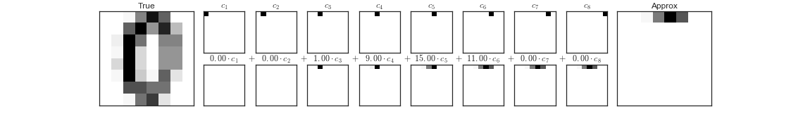
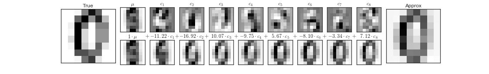

This notebook contains an excerpt from the Python Data Science Handbook by Jake VanderPlas; the content is available on GitHub.
The text is released under the CC-BY-NC-ND license, and code is released under the MIT license. If you find this content useful, please consider supporting the work by buying the book!
< Further Resources | Contents | What Is Machine Learning? >

Machine Learning
In many ways, machine learning is the primary means by which data science manifests itself to the broader world. Machine learning is where these computational and algorithmic skills of data science meet the statistical thinking of data science, and the result is a collection of approaches to inference and data exploration that are not about effective theory so much as effective computation.
The term “machine learning” is sometimes thrown around as if it is some kind of magic pill: apply machine learning to your data, and all your problems will be solved! As you might expect, the reality is rarely this simple. While these methods can be incredibly powerful, to be effective they must be approached with a firm grasp of the strengths and weaknesses of each method, as well as a grasp of general concepts such as bias and variance, overfitting and underfitting, and more.
This chapter will dive into practical aspects of machine learning, primarily using Python’s Scikit-Learn package. This is not meant to be a comprehensive introduction to the field of machine learning; that is a large subject and necessitates a more technical approach than we take here. Nor is it meant to be a comprehensive manual for the use of the Scikit-Learn package (for this, you can refer to the resources listed in Further Machine Learning Resources). Rather, the goals of this chapter are:
- To introduce the fundamental vocabulary and concepts of machine learning.
- To introduce the Scikit-Learn API and show some examples of its use.
- To take a deeper dive into the details of several of the most important machine learning approaches, and develop an intuition into how they work and when and where they are applicable.
Much of this material is drawn from the Scikit-Learn tutorials and workshops I have given on several occasions at PyCon, SciPy, PyData, and other conferences. Any clarity in the following pages is likely due to the many workshop participants and co-instructors who have given me valuable feedback on this material over the years!
Finally, if you are seeking a more comprehensive or technical treatment of any of these subjects, I’ve listed several resources and references in Further Machine Learning Resources.
< Further Resources | Contents | What Is Machine Learning? >

This notebook contains an excerpt from the Python Data Science Handbook by Jake VanderPlas; the content is available on GitHub.
The text is released under the CC-BY-NC-ND license, and code is released under the MIT license. If you find this content useful, please consider supporting the work by buying the book!
< Machine Learning | Contents | Introducing Scikit-Learn >

What Is Machine Learning?
Before we take a look at the details of various machine learning methods, let’s start by looking at what machine learning is, and what it isn’t. Machine learning is often categorized as a subfield of artificial intelligence, but I find that categorization can often be misleading at first brush. The study of machine learning certainly arose from research in this context, but in the data science application of machine learning methods, it’s more helpful to think of machine learning as a means of building models of data.
Fundamentally, machine learning involves building mathematical models to help understand data. “Learning” enters the fray when we give these models tunable parameters that can be adapted to observed data; in this way the program can be considered to be “learning” from the data. Once these models have been fit to previously seen data, they can be used to predict and understand aspects of newly observed data. I’ll leave to the reader the more philosophical digression regarding the extent to which this type of mathematical, model-based “learning” is similar to the “learning” exhibited by the human brain.
Understanding the problem setting in machine learning is essential to using these tools effectively, and so we will start with some broad categorizations of the types of approaches we’ll discuss here.
Categories of Machine Learning
At the most fundamental level, machine learning can be categorized into two main types: supervised learning and unsupervised learning.
Supervised learning involves somehow modeling the relationship between measured features of data and some label associated with the data; once this model is determined, it can be used to apply labels to new, unknown data. This is further subdivided into classification tasks and regression tasks: in classification, the labels are discrete categories, while in regression, the labels are continuous quantities. We will see examples of both types of supervised learning in the following section.
Unsupervised learning involves modeling the features of a dataset without reference to any label, and is often described as “letting the dataset speak for itself.” These models include tasks such as clustering and dimensionality reduction. Clustering algorithms identify distinct groups of data, while dimensionality reduction algorithms search for more succinct representations of the data. We will see examples of both types of unsupervised learning in the following section.
In addition, there are so-called semi-supervised learning methods, which falls somewhere between supervised learning and unsupervised learning. Semi-supervised learning methods are often useful when only incomplete labels are available.
Qualitative Examples of Machine Learning Applications
To make these ideas more concrete, let’s take a look at a few very simple examples of a machine learning task. These examples are meant to give an intuitive, non-quantitative overview of the types of machine learning tasks we will be looking at in this chapter. In later sections, we will go into more depth regarding the particular models and how they are used. For a preview of these more technical aspects, you can find the Python source that generates the following figures in the Appendix: Figure Code.
Classification: Predicting discrete labels
We will first take a look at a simple classification task, in which you are given a set of labeled points and want to use these to classify some unlabeled points.
Imagine that we have the data shown in this figure:
Here we have two-dimensional data: that is, we have two features for each point, represented by the (x,y) positions of the points on the plane. In addition, we have one of two class labels for each point, here represented by the colors of the points. From these features and labels, we would like to create a model that will let us decide whether a new point should be labeled “blue” or “red.”
There are a number of possible models for such a classification task, but here we will use an extremely simple one. We will make the assumption that the two groups can be separated by drawing a straight line through the plane between them, such that points on each side of the line fall in the same group. Here the model is a quantitative version of the statement “a straight line separates the classes”, while the model parameters are the particular numbers describing the location and orientation of that line for our data. The optimal values for these model parameters are learned from the data (this is the “learning” in machine learning), which is often called training the model.
The following figure shows a visual representation of what the trained model looks like for this data:

Now that this model has been trained, it can be generalized to new, unlabeled data. In other words, we can take a new set of data, draw this model line through it, and assign labels to the new points based on this model. This stage is usually called prediction. See the following figure:
This is the basic idea of a classification task in machine learning, where “classification” indicates that the data has discrete class labels. At first glance this may look fairly trivial: it would be relatively easy to simply look at this data and draw such a discriminatory line to accomplish this classification. A benefit of the machine learning approach, however, is that it can generalize to much larger datasets in many more dimensions.
For example, this is similar to the task of automated spam detection for email; in this case, we might use the following features and labels:
- feature 1, feature 2, etc. $\to$ normalized counts of important words or phrases (“Viagra”, “Nigerian prince”, etc.)
- label $\to$ “spam” or “not spam”
For the training set, these labels might be determined by individual inspection of a small representative sample of emails; for the remaining emails, the label would be determined using the model. For a suitably trained classification algorithm with enough well-constructed features (typically thousands or millions of words or phrases), this type of approach can be very effective. We will see an example of such text-based classification in In Depth: Naive Bayes Classification.
Some important classification algorithms that we will discuss in more detail are Gaussian naive Bayes (see In Depth: Naive Bayes Classification), support vector machines (see In-Depth: Support Vector Machines), and random forest classification (see In-Depth: Decision Trees and Random Forests).
Regression: Predicting continuous labels
In contrast with the discrete labels of a classification algorithm, we will next look at a simple regression task in which the labels are continuous quantities.
Consider the data shown in the following figure, which consists of a set of points each with a continuous label:
As with the classification example, we have two-dimensional data: that is, there are two features describing each data point. The color of each point represents the continuous label for that point.
There are a number of possible regression models we might use for this type of data, but here we will use a simple linear regression to predict the points. This simple linear regression model assumes that if we treat the label as a third spatial dimension, we can fit a plane to the data. This is a higher-level generalization of the well-known problem of fitting a line to data with two coordinates.
We can visualize this setup as shown in the following figure:
Notice that the feature 1-feature 2 plane here is the same as in the two-dimensional plot from before; in this case, however, we have represented the labels by both color and three-dimensional axis position. From this view, it seems reasonable that fitting a plane through this three-dimensional data would allow us to predict the expected label for any set of input parameters. Returning to the two-dimensional projection, when we fit such a plane we get the result shown in the following figure:
This plane of fit gives us what we need to predict labels for new points. Visually, we find the results shown in the following figure:

As with the classification example, this may seem rather trivial in a low number of dimensions. But the power of these methods is that they can be straightforwardly applied and evaluated in the case of data with many, many features.
For example, this is similar to the task of computing the distance to galaxies observed through a telescope—in this case, we might use the following features and labels:
- feature 1, feature 2, etc. $\to$ brightness of each galaxy at one of several wave lengths or colors
- label $\to$ distance or redshift of the galaxy
The distances for a small number of these galaxies might be determined through an independent set of (typically more expensive) observations. Distances to remaining galaxies could then be estimated using a suitable regression model, without the need to employ the more expensive observation across the entire set. In astronomy circles, this is known as the “photometric redshift” problem.
Some important regression algorithms that we will discuss are linear regression (see In Depth: Linear Regression), support vector machines (see In-Depth: Support Vector Machines), and random forest regression (see In-Depth: Decision Trees and Random Forests).
Clustering: Inferring labels on unlabeled data
The classification and regression illustrations we just looked at are examples of supervised learning algorithms, in which we are trying to build a model that will predict labels for new data. Unsupervised learning involves models that describe data without reference to any known labels.
One common case of unsupervised learning is “clustering,” in which data is automatically assigned to some number of discrete groups. For example, we might have some two-dimensional data like that shown in the following figure:
By eye, it is clear that each of these points is part of a distinct group. Given this input, a clustering model will use the intrinsic structure of the data to determine which points are related. Using the very fast and intuitive k-means algorithm (see In Depth: K-Means Clustering), we find the clusters shown in the following figure:

k-means fits a model consisting of k cluster centers; the optimal centers are assumed to be those that minimize the distance of each point from its assigned center. Again, this might seem like a trivial exercise in two dimensions, but as our data becomes larger and more complex, such clustering algorithms can be employed to extract useful information from the dataset.
We will discuss the k-means algorithm in more depth in In Depth: K-Means Clustering. Other important clustering algorithms include Gaussian mixture models (See In Depth: Gaussian Mixture Models) and spectral clustering (See Scikit-Learn’s clustering documentation).
Dimensionality reduction: Inferring structure of unlabeled data
Dimensionality reduction is another example of an unsupervised algorithm, in which labels or other information are inferred from the structure of the dataset itself. Dimensionality reduction is a bit more abstract than the examples we looked at before, but generally it seeks to pull out some low-dimensional representation of data that in some way preserves relevant qualities of the full dataset. Different dimensionality reduction routines measure these relevant qualities in different ways, as we will see in In-Depth: Manifold Learning.
As an example of this, consider the data shown in the following figure:
Visually, it is clear that there is some structure in this data: it is drawn from a one-dimensional line that is arranged in a spiral within this two-dimensional space. In a sense, you could say that this data is “intrinsically” only one dimensional, though this one-dimensional data is embedded in higher-dimensional space. A suitable dimensionality reduction model in this case would be sensitive to this nonlinear embedded structure, and be able to pull out this lower-dimensionality representation.
The following figure shows a visualization of the results of the Isomap algorithm, a manifold learning algorithm that does exactly this:

Notice that the colors (which represent the extracted one-dimensional latent variable) change uniformly along the spiral, which indicates that the algorithm did in fact detect the structure we saw by eye. As with the previous examples, the power of dimensionality reduction algorithms becomes clearer in higher-dimensional cases. For example, we might wish to visualize important relationships within a dataset that has 100 or 1,000 features. Visualizing 1,000-dimensional data is a challenge, and one way we can make this more manageable is to use a dimensionality reduction technique to reduce the data to two or three dimensions.
Some important dimensionality reduction algorithms that we will discuss are principal component analysis (see In Depth: Principal Component Analysis) and various manifold learning algorithms, including Isomap and locally linear embedding (See In-Depth: Manifold Learning).
Summary
Here we have seen a few simple examples of some of the basic types of machine learning approaches. Needless to say, there are a number of important practical details that we have glossed over, but I hope this section was enough to give you a basic idea of what types of problems machine learning approaches can solve.
In short, we saw the following:
-
Supervised learning: Models that can predict labels based on labeled training data
- Classification: Models that predict labels as two or more discrete categories
- Regression: Models that predict continuous labels
-
Unsupervised learning: Models that identify structure in unlabeled data
- Clustering: Models that detect and identify distinct groups in the data
- Dimensionality reduction: Models that detect and identify lower-dimensional structure in higher-dimensional data
In the following sections we will go into much greater depth within these categories, and see some more interesting examples of where these concepts can be useful.
All of the figures in the preceding discussion are generated based on actual machine learning computations; the code behind them can be found in Appendix: Figure Code.
< Machine Learning | Contents | Introducing Scikit-Learn >

This notebook contains an excerpt from the Python Data Science Handbook by Jake VanderPlas; the content is available on GitHub.
The text is released under the CC-BY-NC-ND license, and code is released under the MIT license. If you find this content useful, please consider supporting the work by buying the book!
< What Is Machine Learning? | Contents | Hyperparameters and Model Validation >

Introducing Scikit-Learn
There are several Python libraries which provide solid implementations of a range of machine learning algorithms. One of the best known is Scikit-Learn, a package that provides efficient versions of a large number of common algorithms. Scikit-Learn is characterized by a clean, uniform, and streamlined API, as well as by very useful and complete online documentation. A benefit of this uniformity is that once you understand the basic use and syntax of Scikit-Learn for one type of model, switching to a new model or algorithm is very straightforward.
This section provides an overview of the Scikit-Learn API; a solid understanding of these API elements will form the foundation for understanding the deeper practical discussion of machine learning algorithms and approaches in the following chapters.
We will start by covering data representation in Scikit-Learn, followed by covering the Estimator API, and finally go through a more interesting example of using these tools for exploring a set of images of hand-written digits.
Data Representation in Scikit-Learn
Machine learning is about creating models from data: for that reason, we’ll start by discussing how data can be represented in order to be understood by the computer. The best way to think about data within Scikit-Learn is in terms of tables of data.
Data as table
A basic table is a two-dimensional grid of data, in which the rows represent individual elements of the dataset, and the columns represent quantities related to each of these elements.
For example, consider the Iris dataset, famously analyzed by Ronald Fisher in 1936.
We can download this dataset in the form of a Pandas DataFrame using the seaborn library:
import seaborn as sns
iris = sns.load_dataset('iris')
iris.head()
Here each row of the data refers to a single observed flower, and the number of rows is the total number of flowers in the dataset.
In general, we will refer to the rows of the matrix as samples, and the number of rows as n_samples.
Likewise, each column of the data refers to a particular quantitative piece of information that describes each sample.
In general, we will refer to the columns of the matrix as features, and the number of columns as n_features.
Features matrix
This table layout makes clear that the information can be thought of as a two-dimensional numerical array or matrix, which we will call the features matrix.
By convention, this features matrix is often stored in a variable named X.
The features matrix is assumed to be two-dimensional, with shape [n_samples, n_features], and is most often contained in a NumPy array or a Pandas DataFrame, though some Scikit-Learn models also accept SciPy sparse matrices.
The samples (i.e., rows) always refer to the individual objects described by the dataset. For example, the sample might be a flower, a person, a document, an image, a sound file, a video, an astronomical object, or anything else you can describe with a set of quantitative measurements.
The features (i.e., columns) always refer to the distinct observations that describe each sample in a quantitative manner. Features are generally real-valued, but may be Boolean or discrete-valued in some cases.
Target array
In addition to the feature matrix X, we also generally work with a label or target array, which by convention we will usually call y.
The target array is usually one dimensional, with length n_samples, and is generally contained in a NumPy array or Pandas Series.
The target array may have continuous numerical values, or discrete classes/labels.
While some Scikit-Learn estimators do handle multiple target values in the form of a two-dimensional, [n_samples, n_targets] target array, we will primarily be working with the common case of a one-dimensional target array.
Often one point of confusion is how the target array differs from the other features columns. The distinguishing feature of the target array is that it is usually the quantity we want to predict from the data: in statistical terms, it is the dependent variable.
For example, in the preceding data we may wish to construct a model that can predict the species of flower based on the other measurements; in this case, the species column would be considered the target array.
With this target array in mind, we can use Seaborn (see Visualization With Seaborn) to conveniently visualize the data:
%matplotlib inline
import seaborn as sns; sns.set()
sns.pairplot(iris, hue='species', size=1.5);

For use in Scikit-Learn, we will extract the features matrix and target array from the DataFrame, which we can do using some of the Pandas DataFrame operations discussed in the Chapter 3:
X_iris = iris.drop('species', axis=1)
X_iris.shape
y_iris = iris['species']
y_iris.shape
To summarize, the expected layout of features and target values is visualized in the following diagram:

With this data properly formatted, we can move on to consider the estimator API of Scikit-Learn:
Scikit-Learn’s Estimator API
The Scikit-Learn API is designed with the following guiding principles in mind, as outlined in the Scikit-Learn API paper:
-
Consistency: All objects share a common interface drawn from a limited set of methods, with consistent documentation.
-
Inspection: All specified parameter values are exposed as public attributes.
-
Limited object hierarchy: Only algorithms are represented by Python classes; datasets are represented in standard formats (NumPy arrays, Pandas
DataFrames, SciPy sparse matrices) and parameter names use standard Python strings. -
Composition: Many machine learning tasks can be expressed as sequences of more fundamental algorithms, and Scikit-Learn makes use of this wherever possible.
-
Sensible defaults: When models require user-specified parameters, the library defines an appropriate default value.
In practice, these principles make Scikit-Learn very easy to use, once the basic principles are understood. Every machine learning algorithm in Scikit-Learn is implemented via the Estimator API, which provides a consistent interface for a wide range of machine learning applications.
Basics of the API
Most commonly, the steps in using the Scikit-Learn estimator API are as follows (we will step through a handful of detailed examples in the sections that follow).
- Choose a class of model by importing the appropriate estimator class from Scikit-Learn.
- Choose model hyperparameters by instantiating this class with desired values.
- Arrange data into a features matrix and target vector following the discussion above.
- Fit the model to your data by calling the
fit()method of the model instance. - Apply the Model to new data:
- For supervised learning, often we predict labels for unknown data using the
predict()method. - For unsupervised learning, we often transform or infer properties of the data using the
transform()orpredict()method.
- For supervised learning, often we predict labels for unknown data using the
We will now step through several simple examples of applying supervised and unsupervised learning methods.
Supervised learning example: Simple linear regression
As an example of this process, let’s consider a simple linear regression—that is, the common case of fitting a line to $(x, y)$ data. We will use the following simple data for our regression example:
import matplotlib.pyplot as plt
import numpy as np
rng = np.random.RandomState(42)
x = 10 * rng.rand(50)
y = 2 * x - 1 + rng.randn(50)
plt.scatter(x, y);
With this data in place, we can use the recipe outlined earlier. Let’s walk through the process:
1. Choose a class of model
In Scikit-Learn, every class of model is represented by a Python class. So, for example, if we would like to compute a simple linear regression model, we can import the linear regression class:
from sklearn.linear_model import LinearRegression
Note that other more general linear regression models exist as well; you can read more about them in the sklearn.linear_model module documentation.
2. Choose model hyperparameters
An important point is that a class of model is not the same as an instance of a model.
Once we have decided on our model class, there are still some options open to us. Depending on the model class we are working with, we might need to answer one or more questions like the following:
- Would we like to fit for the offset (i.e., y-intercept)?
- Would we like the model to be normalized?
- Would we like to preprocess our features to add model flexibility?
- What degree of regularization would we like to use in our model?
- How many model components would we like to use?
These are examples of the important choices that must be made once the model class is selected. These choices are often represented as hyperparameters, or parameters that must be set before the model is fit to data. In Scikit-Learn, hyperparameters are chosen by passing values at model instantiation. We will explore how you can quantitatively motivate the choice of hyperparameters in Hyperparameters and Model Validation.
For our linear regression example, we can instantiate the LinearRegression class and specify that we would like to fit the intercept using the fit_intercept hyperparameter:
model = LinearRegression(fit_intercept=True)
model
Keep in mind that when the model is instantiated, the only action is the storing of these hyperparameter values. In particular, we have not yet applied the model to any data: the Scikit-Learn API makes very clear the distinction between choice of model and application of model to data.
3. Arrange data into a features matrix and target vector
Previously we detailed the Scikit-Learn data representation, which requires a two-dimensional features matrix and a one-dimensional target array.
Here our target variable y is already in the correct form (a length-n_samples array), but we need to massage the data x to make it a matrix of size [n_samples, n_features].
In this case, this amounts to a simple reshaping of the one-dimensional array:
X = x[:, np.newaxis]
X.shape
4. Fit the model to your data
Now it is time to apply our model to data.
This can be done with the fit() method of the model:
model.fit(X, y)
This fit() command causes a number of model-dependent internal computations to take place, and the results of these computations are stored in model-specific attributes that the user can explore.
In Scikit-Learn, by convention all model parameters that were learned during the fit() process have trailing underscores; for example in this linear model, we have the following:
model.coef_
model.intercept_
These two parameters represent the slope and intercept of the simple linear fit to the data. Comparing to the data definition, we see that they are very close to the input slope of 2 and intercept of -1.
One question that frequently comes up regards the uncertainty in such internal model parameters. In general, Scikit-Learn does not provide tools to draw conclusions from internal model parameters themselves: interpreting model parameters is much more a statistical modeling question than a machine learning question. Machine learning rather focuses on what the model predicts. If you would like to dive into the meaning of fit parameters within the model, other tools are available, including the Statsmodels Python package.
5. Predict labels for unknown data
Once the model is trained, the main task of supervised machine learning is to evaluate it based on what it says about new data that was not part of the training set.
In Scikit-Learn, this can be done using the predict() method.
For the sake of this example, our “new data” will be a grid of x values, and we will ask what y values the model predicts:
xfit = np.linspace(-1, 11)
As before, we need to coerce these x values into a [n_samples, n_features] features matrix, after which we can feed it to the model:
Xfit = xfit[:, np.newaxis]
yfit = model.predict(Xfit)
Finally, let’s visualize the results by plotting first the raw data, and then this model fit:
plt.scatter(x, y)
plt.plot(xfit, yfit);
Typically the efficacy of the model is evaluated by comparing its results to some known baseline, as we will see in the next example
Supervised learning example: Iris classification
Let’s take a look at another example of this process, using the Iris dataset we discussed earlier. Our question will be this: given a model trained on a portion of the Iris data, how well can we predict the remaining labels?
For this task, we will use an extremely simple generative model known as Gaussian naive Bayes, which proceeds by assuming each class is drawn from an axis-aligned Gaussian distribution (see In Depth: Naive Bayes Classification for more details). Because it is so fast and has no hyperparameters to choose, Gaussian naive Bayes is often a good model to use as a baseline classification, before exploring whether improvements can be found through more sophisticated models.
We would like to evaluate the model on data it has not seen before, and so we will split the data into a training set and a testing set.
This could be done by hand, but it is more convenient to use the train_test_split utility function:
from sklearn.cross_validation import train_test_split
Xtrain, Xtest, ytrain, ytest = train_test_split(X_iris, y_iris,
random_state=1)
With the data arranged, we can follow our recipe to predict the labels:
from sklearn.naive_bayes import GaussianNB # 1. choose model class
model = GaussianNB() # 2. instantiate model
model.fit(Xtrain, ytrain) # 3. fit model to data
y_model = model.predict(Xtest) # 4. predict on new data
Finally, we can use the accuracy_score utility to see the fraction of predicted labels that match their true value:
from sklearn.metrics import accuracy_score
accuracy_score(ytest, y_model)
With an accuracy topping 97%, we see that even this very naive classification algorithm is effective for this particular dataset!
Unsupervised learning example: Iris dimensionality
As an example of an unsupervised learning problem, let’s take a look at reducing the dimensionality of the Iris data so as to more easily visualize it. Recall that the Iris data is four dimensional: there are four features recorded for each sample.
The task of dimensionality reduction is to ask whether there is a suitable lower-dimensional representation that retains the essential features of the data. Often dimensionality reduction is used as an aid to visualizing data: after all, it is much easier to plot data in two dimensions than in four dimensions or higher!
Here we will use principal component analysis (PCA; see In Depth: Principal Component Analysis), which is a fast linear dimensionality reduction technique. We will ask the model to return two components—that is, a two-dimensional representation of the data.
Following the sequence of steps outlined earlier, we have:
from sklearn.decomposition import PCA # 1. Choose the model class
model = PCA(n_components=2) # 2. Instantiate the model with hyperparameters
model.fit(X_iris) # 3. Fit to data. Notice y is not specified!
X_2D = model.transform(X_iris) # 4. Transform the data to two dimensions
Now let’s plot the results. A quick way to do this is to insert the results into the original Iris DataFrame, and use Seaborn’s lmplot to show the results:
iris['PCA1'] = X_2D[:, 0]
iris['PCA2'] = X_2D[:, 1]
sns.lmplot("PCA1", "PCA2", hue='species', data=iris, fit_reg=False);
We see that in the two-dimensional representation, the species are fairly well separated, even though the PCA algorithm had no knowledge of the species labels! This indicates to us that a relatively straightforward classification will probably be effective on the dataset, as we saw before.
Unsupervised learning: Iris clustering
Let’s next look at applying clustering to the Iris data. A clustering algorithm attempts to find distinct groups of data without reference to any labels. Here we will use a powerful clustering method called a Gaussian mixture model (GMM), discussed in more detail in In Depth: Gaussian Mixture Models. A GMM attempts to model the data as a collection of Gaussian blobs.
We can fit the Gaussian mixture model as follows:
from sklearn.mixture import GMM # 1. Choose the model class
model = GMM(n_components=3,
covariance_type='full') # 2. Instantiate the model with hyperparameters
model.fit(X_iris) # 3. Fit to data. Notice y is not specified!
y_gmm = model.predict(X_iris) # 4. Determine cluster labels
As before, we will add the cluster label to the Iris DataFrame and use Seaborn to plot the results:
iris['cluster'] = y_gmm
sns.lmplot("PCA1", "PCA2", data=iris, hue='species',
col='cluster', fit_reg=False);
By splitting the data by cluster number, we see exactly how well the GMM algorithm has recovered the underlying label: the setosa species is separated perfectly within cluster 0, while there remains a small amount of mixing between versicolor and virginica. This means that even without an expert to tell us the species labels of the individual flowers, the measurements of these flowers are distinct enough that we could automatically identify the presence of these different groups of species with a simple clustering algorithm! This sort of algorithm might further give experts in the field clues as to the relationship between the samples they are observing.
Application: Exploring Hand-written Digits
To demonstrate these principles on a more interesting problem, let’s consider one piece of the optical character recognition problem: the identification of hand-written digits. In the wild, this problem involves both locating and identifying characters in an image. Here we’ll take a shortcut and use Scikit-Learn’s set of pre-formatted digits, which is built into the library.
Loading and visualizing the digits data
We’ll use Scikit-Learn’s data access interface and take a look at this data:
from sklearn.datasets import load_digits
digits = load_digits()
digits.images.shape
The images data is a three-dimensional array: 1,797 samples each consisting of an 8 × 8 grid of pixels. Let’s visualize the first hundred of these:
import matplotlib.pyplot as plt
fig, axes = plt.subplots(10, 10, figsize=(8, 8),
subplot_kw={'xticks':[], 'yticks':[]},
gridspec_kw=dict(hspace=0.1, wspace=0.1))
for i, ax in enumerate(axes.flat):
ax.imshow(digits.images[i], cmap='binary', interpolation='nearest')
ax.text(0.05, 0.05, str(digits.target[i]),
transform=ax.transAxes, color='green')
In order to work with this data within Scikit-Learn, we need a two-dimensional, [n_samples, n_features] representation.
We can accomplish this by treating each pixel in the image as a feature: that is, by flattening out the pixel arrays so that we have a length-64 array of pixel values representing each digit.
Additionally, we need the target array, which gives the previously determined label for each digit.
These two quantities are built into the digits dataset under the data and target attributes, respectively:
X = digits.data
X.shape
y = digits.target
y.shape
We see here that there are 1,797 samples and 64 features.
Unsupervised learning: Dimensionality reduction
We’d like to visualize our points within the 64-dimensional parameter space, but it’s difficult to effectively visualize points in such a high-dimensional space. Instead we’ll reduce the dimensions to 2, using an unsupervised method. Here, we’ll make use of a manifold learning algorithm called Isomap (see In-Depth: Manifold Learning), and transform the data to two dimensions:
from sklearn.manifold import Isomap
iso = Isomap(n_components=2)
iso.fit(digits.data)
data_projected = iso.transform(digits.data)
data_projected.shape
We see that the projected data is now two-dimensional. Let’s plot this data to see if we can learn anything from its structure:
plt.scatter(data_projected[:, 0], data_projected[:, 1], c=digits.target,
edgecolor='none', alpha=0.5,
cmap=plt.cm.get_cmap('spectral', 10))
plt.colorbar(label='digit label', ticks=range(10))
plt.clim(-0.5, 9.5);
This plot gives us some good intuition into how well various numbers are separated in the larger 64-dimensional space. For example, zeros (in black) and ones (in purple) have very little overlap in parameter space. Intuitively, this makes sense: a zero is empty in the middle of the image, while a one will generally have ink in the middle. On the other hand, there seems to be a more or less continuous spectrum between ones and fours: we can understand this by realizing that some people draw ones with “hats” on them, which cause them to look similar to fours.
Overall, however, the different groups appear to be fairly well separated in the parameter space: this tells us that even a very straightforward supervised classification algorithm should perform suitably on this data. Let’s give it a try.
Classification on digits
Let’s apply a classification algorithm to the digits. As with the Iris data previously, we will split the data into a training and testing set, and fit a Gaussian naive Bayes model:
Xtrain, Xtest, ytrain, ytest = train_test_split(X, y, random_state=0)
from sklearn.naive_bayes import GaussianNB
model = GaussianNB()
model.fit(Xtrain, ytrain)
y_model = model.predict(Xtest)
Now that we have predicted our model, we can gauge its accuracy by comparing the true values of the test set to the predictions:
from sklearn.metrics import accuracy_score
accuracy_score(ytest, y_model)
With even this extremely simple model, we find about 80% accuracy for classification of the digits! However, this single number doesn’t tell us where we’ve gone wrong—one nice way to do this is to use the confusion matrix, which we can compute with Scikit-Learn and plot with Seaborn:
from sklearn.metrics import confusion_matrix
mat = confusion_matrix(ytest, y_model)
sns.heatmap(mat, square=True, annot=True, cbar=False)
plt.xlabel('predicted value')
plt.ylabel('true value');
This shows us where the mis-labeled points tend to be: for example, a large number of twos here are mis-classified as either ones or eights. Another way to gain intuition into the characteristics of the model is to plot the inputs again, with their predicted labels. We’ll use green for correct labels, and red for incorrect labels:
fig, axes = plt.subplots(10, 10, figsize=(8, 8),
subplot_kw={'xticks':[], 'yticks':[]},
gridspec_kw=dict(hspace=0.1, wspace=0.1))
test_images = Xtest.reshape(-1, 8, 8)
for i, ax in enumerate(axes.flat):
ax.imshow(test_images[i], cmap='binary', interpolation='nearest')
ax.text(0.05, 0.05, str(y_model[i]),
transform=ax.transAxes,
color='green' if (ytest[i] == y_model[i]) else 'red')
Examining this subset of the data, we can gain insight regarding where the algorithm might be not performing optimally. To go beyond our 80% classification rate, we might move to a more sophisticated algorithm such as support vector machines (see In-Depth: Support Vector Machines), random forests (see In-Depth: Decision Trees and Random Forests) or another classification approach.
Summary
In this section we have covered the essential features of the Scikit-Learn data representation, and the estimator API. Regardless of the type of estimator, the same import/instantiate/fit/predict pattern holds. Armed with this information about the estimator API, you can explore the Scikit-Learn documentation and begin trying out various models on your data.
In the next section, we will explore perhaps the most important topic in machine learning: how to select and validate your model.
< What Is Machine Learning? | Contents | Hyperparameters and Model Validation >

This notebook contains an excerpt from the Python Data Science Handbook by Jake VanderPlas; the content is available on GitHub.
The text is released under the CC-BY-NC-ND license, and code is released under the MIT license. If you find this content useful, please consider supporting the work by buying the book!
< Introducing Scikit-Learn | Contents | Feature Engineering >

Hyperparameters and Model Validation
In the previous section, we saw the basic recipe for applying a supervised machine learning model:
- Choose a class of model
- Choose model hyperparameters
- Fit the model to the training data
- Use the model to predict labels for new data
The first two pieces of this—the choice of model and choice of hyperparameters—are perhaps the most important part of using these tools and techniques effectively. In order to make an informed choice, we need a way to validate that our model and our hyperparameters are a good fit to the data. While this may sound simple, there are some pitfalls that you must avoid to do this effectively.
Thinking about Model Validation
In principle, model validation is very simple: after choosing a model and its hyperparameters, we can estimate how effective it is by applying it to some of the training data and comparing the prediction to the known value.
The following sections first show a naive approach to model validation and why it fails, before exploring the use of holdout sets and cross-validation for more robust model evaluation.
Model validation the wrong way
Let’s demonstrate the naive approach to validation using the Iris data, which we saw in the previous section. We will start by loading the data:
from sklearn.datasets import load_iris
iris = load_iris()
X = iris.data
y = iris.target
Next we choose a model and hyperparameters. Here we’ll use a k-neighbors classifier with n_neighbors=1.
This is a very simple and intuitive model that says “the label of an unknown point is the same as the label of its closest training point:”
from sklearn.neighbors import KNeighborsClassifier
model = KNeighborsClassifier(n_neighbors=1)
Then we train the model, and use it to predict labels for data we already know:
model.fit(X, y)
y_model = model.predict(X)
Finally, we compute the fraction of correctly labeled points:
from sklearn.metrics import accuracy_score
accuracy_score(y, y_model)
We see an accuracy score of 1.0, which indicates that 100% of points were correctly labeled by our model! But is this truly measuring the expected accuracy? Have we really come upon a model that we expect to be correct 100% of the time?
As you may have gathered, the answer is no. In fact, this approach contains a fundamental flaw: it trains and evaluates the model on the same data. Furthermore, the nearest neighbor model is an instance-based estimator that simply stores the training data, and predicts labels by comparing new data to these stored points: except in contrived cases, it will get 100% accuracy every time!
Model validation the right way: Holdout sets
So what can be done?
A better sense of a model’s performance can be found using what’s known as a holdout set: that is, we hold back some subset of the data from the training of the model, and then use this holdout set to check the model performance.
This splitting can be done using the train_test_split utility in Scikit-Learn:
from sklearn.cross_validation import train_test_split
# split the data with 50% in each set
X1, X2, y1, y2 = train_test_split(X, y, random_state=0,
train_size=0.5)
# fit the model on one set of data
model.fit(X1, y1)
# evaluate the model on the second set of data
y2_model = model.predict(X2)
accuracy_score(y2, y2_model)
We see here a more reasonable result: the nearest-neighbor classifier is about 90% accurate on this hold-out set. The hold-out set is similar to unknown data, because the model has not “seen” it before.
Model validation via cross-validation
One disadvantage of using a holdout set for model validation is that we have lost a portion of our data to the model training. In the above case, half the dataset does not contribute to the training of the model! This is not optimal, and can cause problems – especially if the initial set of training data is small.
One way to address this is to use cross-validation; that is, to do a sequence of fits where each subset of the data is used both as a training set and as a validation set. Visually, it might look something like this:
Here we do two validation trials, alternately using each half of the data as a holdout set. Using the split data from before, we could implement it like this:
y2_model = model.fit(X1, y1).predict(X2)
y1_model = model.fit(X2, y2).predict(X1)
accuracy_score(y1, y1_model), accuracy_score(y2, y2_model)
What comes out are two accuracy scores, which we could combine (by, say, taking the mean) to get a better measure of the global model performance. This particular form of cross-validation is a two-fold cross-validation—that is, one in which we have split the data into two sets and used each in turn as a validation set.
We could expand on this idea to use even more trials, and more folds in the data—for example, here is a visual depiction of five-fold cross-validation:

Here we split the data into five groups, and use each of them in turn to evaluate the model fit on the other 4/5 of the data.
This would be rather tedious to do by hand, and so we can use Scikit-Learn’s cross_val_score convenience routine to do it succinctly:
from sklearn.cross_validation import cross_val_score
cross_val_score(model, X, y, cv=5)
Repeating the validation across different subsets of the data gives us an even better idea of the performance of the algorithm.
Scikit-Learn implements a number of useful cross-validation schemes that are useful in particular situations; these are implemented via iterators in the cross_validation module.
For example, we might wish to go to the extreme case in which our number of folds is equal to the number of data points: that is, we train on all points but one in each trial.
This type of cross-validation is known as leave-one-out cross validation, and can be used as follows:
from sklearn.cross_validation import LeaveOneOut
scores = cross_val_score(model, X, y, cv=LeaveOneOut(len(X)))
scores
Because we have 150 samples, the leave one out cross-validation yields scores for 150 trials, and the score indicates either successful (1.0) or unsuccessful (0.0) prediction. Taking the mean of these gives an estimate of the error rate:
scores.mean()
Other cross-validation schemes can be used similarly.
For a description of what is available in Scikit-Learn, use IPython to explore the sklearn.cross_validation submodule, or take a look at Scikit-Learn’s online cross-validation documentation.
Selecting the Best Model
Now that we’ve seen the basics of validation and cross-validation, we will go into a litte more depth regarding model selection and selection of hyperparameters. These issues are some of the most important aspects of the practice of machine learning, and I find that this information is often glossed over in introductory machine learning tutorials.
Of core importance is the following question: if our estimator is underperforming, how should we move forward? There are several possible answers:
- Use a more complicated/more flexible model
- Use a less complicated/less flexible model
- Gather more training samples
- Gather more data to add features to each sample
The answer to this question is often counter-intuitive. In particular, sometimes using a more complicated model will give worse results, and adding more training samples may not improve your results! The ability to determine what steps will improve your model is what separates the successful machine learning practitioners from the unsuccessful.
The Bias-variance trade-off
Fundamentally, the question of “the best model” is about finding a sweet spot in the tradeoff between bias and variance. Consider the following figure, which presents two regression fits to the same dataset:
It is clear that neither of these models is a particularly good fit to the data, but they fail in different ways.
The model on the left attempts to find a straight-line fit through the data. Because the data are intrinsically more complicated than a straight line, the straight-line model will never be able to describe this dataset well. Such a model is said to underfit the data: that is, it does not have enough model flexibility to suitably account for all the features in the data; another way of saying this is that the model has high bias.
The model on the right attempts to fit a high-order polynomial through the data. Here the model fit has enough flexibility to nearly perfectly account for the fine features in the data, but even though it very accurately describes the training data, its precise form seems to be more reflective of the particular noise properties of the data rather than the intrinsic properties of whatever process generated that data. Such a model is said to overfit the data: that is, it has so much model flexibility that the model ends up accounting for random errors as well as the underlying data distribution; another way of saying this is that the model has high variance.
To look at this in another light, consider what happens if we use these two models to predict the y-value for some new data. In the following diagrams, the red/lighter points indicate data that is omitted from the training set:
The score here is the $R^2$ score, or coefficient of determination, which measures how well a model performs relative to a simple mean of the target values. $R^2=1$ indicates a perfect match, $R^2=0$ indicates the model does no better than simply taking the mean of the data, and negative values mean even worse models. From the scores associated with these two models, we can make an observation that holds more generally:
- For high-bias models, the performance of the model on the validation set is similar to the performance on the training set.
- For high-variance models, the performance of the model on the validation set is far worse than the performance on the training set.
If we imagine that we have some ability to tune the model complexity, we would expect the training score and validation score to behave as illustrated in the following figure:
The diagram shown here is often called a validation curve, and we see the following essential features:
- The training score is everywhere higher than the validation score. This is generally the case: the model will be a better fit to data it has seen than to data it has not seen.
- For very low model complexity (a high-bias model), the training data is under-fit, which means that the model is a poor predictor both for the training data and for any previously unseen data.
- For very high model complexity (a high-variance model), the training data is over-fit, which means that the model predicts the training data very well, but fails for any previously unseen data.
- For some intermediate value, the validation curve has a maximum. This level of complexity indicates a suitable trade-off between bias and variance.
The means of tuning the model complexity varies from model to model; when we discuss individual models in depth in later sections, we will see how each model allows for such tuning.
Validation curves in Scikit-Learn
Let’s look at an example of using cross-validation to compute the validation curve for a class of models. Here we will use a polynomial regression model: this is a generalized linear model in which the degree of the polynomial is a tunable parameter. For example, a degree-1 polynomial fits a straight line to the data; for model parameters $a$ and $b$:
A degree-3 polynomial fits a cubic curve to the data; for model parameters $a, b, c, d$:
We can generalize this to any number of polynomial features. In Scikit-Learn, we can implement this with a simple linear regression combined with the polynomial preprocessor. We will use a pipeline to string these operations together (we will discuss polynomial features and pipelines more fully in Feature Engineering):
from sklearn.preprocessing import PolynomialFeatures
from sklearn.linear_model import LinearRegression
from sklearn.pipeline import make_pipeline
def PolynomialRegression(degree=2, **kwargs):
return make_pipeline(PolynomialFeatures(degree),
LinearRegression(**kwargs))
Now let’s create some data to which we will fit our model:
import numpy as np
def make_data(N, err=1.0, rseed=1):
# randomly sample the data
rng = np.random.RandomState(rseed)
X = rng.rand(N, 1) ** 2
y = 10 - 1. / (X.ravel() + 0.1)
if err > 0:
y += err * rng.randn(N)
return X, y
X, y = make_data(40)
We can now visualize our data, along with polynomial fits of several degrees:
%matplotlib inline
import matplotlib.pyplot as plt
import seaborn; seaborn.set() # plot formatting
X_test = np.linspace(-0.1, 1.1, 500)[:, None]
plt.scatter(X.ravel(), y, color='black')
axis = plt.axis()
for degree in [1, 3, 5]:
y_test = PolynomialRegression(degree).fit(X, y).predict(X_test)
plt.plot(X_test.ravel(), y_test, label='degree={0}'.format(degree))
plt.xlim(-0.1, 1.0)
plt.ylim(-2, 12)
plt.legend(loc='best');

The knob controlling model complexity in this case is the degree of the polynomial, which can be any non-negative integer. A useful question to answer is this: what degree of polynomial provides a suitable trade-off between bias (under-fitting) and variance (over-fitting)?
We can make progress in this by visualizing the validation curve for this particular data and model; this can be done straightforwardly using the validation_curve convenience routine provided by Scikit-Learn.
Given a model, data, parameter name, and a range to explore, this function will automatically compute both the training score and validation score across the range:
from sklearn.learning_curve import validation_curve
degree = np.arange(0, 21)
train_score, val_score = validation_curve(PolynomialRegression(), X, y,
'polynomialfeatures__degree', degree, cv=7)
plt.plot(degree, np.median(train_score, 1), color='blue', label='training score')
plt.plot(degree, np.median(val_score, 1), color='red', label='validation score')
plt.legend(loc='best')
plt.ylim(0, 1)
plt.xlabel('degree')
plt.ylabel('score');

This shows precisely the qualitative behavior we expect: the training score is everywhere higher than the validation score; the training score is monotonically improving with increased model complexity; and the validation score reaches a maximum before dropping off as the model becomes over-fit.
From the validation curve, we can read-off that the optimal trade-off between bias and variance is found for a third-order polynomial; we can compute and display this fit over the original data as follows:
plt.scatter(X.ravel(), y)
lim = plt.axis()
y_test = PolynomialRegression(3).fit(X, y).predict(X_test)
plt.plot(X_test.ravel(), y_test);
plt.axis(lim);
Notice that finding this optimal model did not actually require us to compute the training score, but examining the relationship between the training score and validation score can give us useful insight into the performance of the model.
Learning Curves
One important aspect of model complexity is that the optimal model will generally depend on the size of your training data. For example, let’s generate a new dataset with a factor of five more points:
X2, y2 = make_data(200)
plt.scatter(X2.ravel(), y2);

We will duplicate the preceding code to plot the validation curve for this larger dataset; for reference let’s over-plot the previous results as well:
degree = np.arange(21)
train_score2, val_score2 = validation_curve(PolynomialRegression(), X2, y2,
'polynomialfeatures__degree', degree, cv=7)
plt.plot(degree, np.median(train_score2, 1), color='blue', label='training score')
plt.plot(degree, np.median(val_score2, 1), color='red', label='validation score')
plt.plot(degree, np.median(train_score, 1), color='blue', alpha=0.3, linestyle='dashed')
plt.plot(degree, np.median(val_score, 1), color='red', alpha=0.3, linestyle='dashed')
plt.legend(loc='lower center')
plt.ylim(0, 1)
plt.xlabel('degree')
plt.ylabel('score');

The solid lines show the new results, while the fainter dashed lines show the results of the previous smaller dataset. It is clear from the validation curve that the larger dataset can support a much more complicated model: the peak here is probably around a degree of 6, but even a degree-20 model is not seriously over-fitting the data—the validation and training scores remain very close.
Thus we see that the behavior of the validation curve has not one but two important inputs: the model complexity and the number of training points. It is often useful to to explore the behavior of the model as a function of the number of training points, which we can do by using increasingly larger subsets of the data to fit our model. A plot of the training/validation score with respect to the size of the training set is known as a learning curve.
The general behavior we would expect from a learning curve is this:
- A model of a given complexity will overfit a small dataset: this means the training score will be relatively high, while the validation score will be relatively low.
- A model of a given complexity will underfit a large dataset: this means that the training score will decrease, but the validation score will increase.
- A model will never, except by chance, give a better score to the validation set than the training set: this means the curves should keep getting closer together but never cross.
With these features in mind, we would expect a learning curve to look qualitatively like that shown in the following figure:
The notable feature of the learning curve is the convergence to a particular score as the number of training samples grows. In particular, once you have enough points that a particular model has converged, adding more training data will not help you! The only way to increase model performance in this case is to use another (often more complex) model.
Learning curves in Scikit-Learn
Scikit-Learn offers a convenient utility for computing such learning curves from your models; here we will compute a learning curve for our original dataset with a second-order polynomial model and a ninth-order polynomial:
from sklearn.learning_curve import learning_curve
fig, ax = plt.subplots(1, 2, figsize=(16, 6))
fig.subplots_adjust(left=0.0625, right=0.95, wspace=0.1)
for i, degree in enumerate([2, 9]):
N, train_lc, val_lc = learning_curve(PolynomialRegression(degree),
X, y, cv=7,
train_sizes=np.linspace(0.3, 1, 25))
ax[i].plot(N, np.mean(train_lc, 1), color='blue', label='training score')
ax[i].plot(N, np.mean(val_lc, 1), color='red', label='validation score')
ax[i].hlines(np.mean([train_lc[-1], val_lc[-1]]), N[0], N[-1],
color='gray', linestyle='dashed')
ax[i].set_ylim(0, 1)
ax[i].set_xlim(N[0], N[-1])
ax[i].set_xlabel('training size')
ax[i].set_ylabel('score')
ax[i].set_title('degree = {0}'.format(degree), size=14)
ax[i].legend(loc='best')
This is a valuable diagnostic, because it gives us a visual depiction of how our model responds to increasing training data. In particular, when your learning curve has already converged (i.e., when the training and validation curves are already close to each other) adding more training data will not significantly improve the fit! This situation is seen in the left panel, with the learning curve for the degree-2 model.
The only way to increase the converged score is to use a different (usually more complicated) model. We see this in the right panel: by moving to a much more complicated model, we increase the score of convergence (indicated by the dashed line), but at the expense of higher model variance (indicated by the difference between the training and validation scores). If we were to add even more data points, the learning curve for the more complicated model would eventually converge.
Plotting a learning curve for your particular choice of model and dataset can help you to make this type of decision about how to move forward in improving your analysis.
Validation in Practice: Grid Search
The preceding discussion is meant to give you some intuition into the trade-off between bias and variance, and its dependence on model complexity and training set size. In practice, models generally have more than one knob to turn, and thus plots of validation and learning curves change from lines to multi-dimensional surfaces. In these cases, such visualizations are difficult and we would rather simply find the particular model that maximizes the validation score.
Scikit-Learn provides automated tools to do this in the grid search module.
Here is an example of using grid search to find the optimal polynomial model.
We will explore a three-dimensional grid of model features; namely the polynomial degree, the flag telling us whether to fit the intercept, and the flag telling us whether to normalize the problem.
This can be set up using Scikit-Learn’s GridSearchCV meta-estimator:
from sklearn.grid_search import GridSearchCV
param_grid = {'polynomialfeatures__degree': np.arange(21),
'linearregression__fit_intercept': [True, False],
'linearregression__normalize': [True, False]}
grid = GridSearchCV(PolynomialRegression(), param_grid, cv=7)
Notice that like a normal estimator, this has not yet been applied to any data.
Calling the fit() method will fit the model at each grid point, keeping track of the scores along the way:
grid.fit(X, y);
Now that this is fit, we can ask for the best parameters as follows:
grid.best_params_
Finally, if we wish, we can use the best model and show the fit to our data using code from before:
model = grid.best_estimator_
plt.scatter(X.ravel(), y)
lim = plt.axis()
y_test = model.fit(X, y).predict(X_test)
plt.plot(X_test.ravel(), y_test, hold=True);
plt.axis(lim);

The grid search provides many more options, including the ability to specify a custom scoring function, to parallelize the computations, to do randomized searches, and more. For information, see the examples in In-Depth: Kernel Density Estimation and Feature Engineering: Working with Images, or refer to Scikit-Learn’s grid search documentation.
Summary
In this section, we have begun to explore the concept of model validation and hyperparameter optimization, focusing on intuitive aspects of the bias–variance trade-off and how it comes into play when fitting models to data. In particular, we found that the use of a validation set or cross-validation approach is vital when tuning parameters in order to avoid over-fitting for more complex/flexible models.
In later sections, we will discuss the details of particularly useful models, and throughout will talk about what tuning is available for these models and how these free parameters affect model complexity. Keep the lessons of this section in mind as you read on and learn about these machine learning approaches!
< Introducing Scikit-Learn | Contents | Feature Engineering >

This notebook contains an excerpt from the Python Data Science Handbook by Jake VanderPlas; the content is available on GitHub.
The text is released under the CC-BY-NC-ND license, and code is released under the MIT license. If you find this content useful, please consider supporting the work by buying the book!
< Hyperparameters and Model Validation | Contents | In Depth: Naive Bayes Classification >

Feature Engineering
The previous sections outline the fundamental ideas of machine learning, but all of the examples assume that you have numerical data in a tidy, [n_samples, n_features] format.
In the real world, data rarely comes in such a form.
With this in mind, one of the more important steps in using machine learning in practice is feature engineering: that is, taking whatever information you have about your problem and turning it into numbers that you can use to build your feature matrix.
In this section, we will cover a few common examples of feature engineering tasks: features for representing categorical data, features for representing text, and features for representing images. Additionally, we will discuss derived features for increasing model complexity and imputation of missing data. Often this process is known as vectorization, as it involves converting arbitrary data into well-behaved vectors.
Categorical Features
One common type of non-numerical data is categorical data. For example, imagine you are exploring some data on housing prices, and along with numerical features like “price” and “rooms”, you also have “neighborhood” information. For example, your data might look something like this:
data = [
{'price': 850000, 'rooms': 4, 'neighborhood': 'Queen Anne'},
{'price': 700000, 'rooms': 3, 'neighborhood': 'Fremont'},
{'price': 650000, 'rooms': 3, 'neighborhood': 'Wallingford'},
{'price': 600000, 'rooms': 2, 'neighborhood': 'Fremont'}
]
You might be tempted to encode this data with a straightforward numerical mapping:
{'Queen Anne': 1, 'Fremont': 2, 'Wallingford': 3};
It turns out that this is not generally a useful approach in Scikit-Learn: the package’s models make the fundamental assumption that numerical features reflect algebraic quantities. Thus such a mapping would imply, for example, that Queen Anne < Fremont < Wallingford, or even that Wallingford - Queen Anne = Fremont, which (niche demographic jokes aside) does not make much sense.
In this case, one proven technique is to use one-hot encoding, which effectively creates extra columns indicating the presence or absence of a category with a value of 1 or 0, respectively.
When your data comes as a list of dictionaries, Scikit-Learn’s DictVectorizer will do this for you:
from sklearn.feature_extraction import DictVectorizer
vec = DictVectorizer(sparse=False, dtype=int)
vec.fit_transform(data)
Notice that the ‘neighborhood’ column has been expanded into three separate columns, representing the three neighborhood labels, and that each row has a 1 in the column associated with its neighborhood. With these categorical features thus encoded, you can proceed as normal with fitting a Scikit-Learn model.
To see the meaning of each column, you can inspect the feature names:
vec.get_feature_names()
There is one clear disadvantage of this approach: if your category has many possible values, this can greatly increase the size of your dataset. However, because the encoded data contains mostly zeros, a sparse output can be a very efficient solution:
vec = DictVectorizer(sparse=True, dtype=int)
vec.fit_transform(data)
Many (though not yet all) of the Scikit-Learn estimators accept such sparse inputs when fitting and evaluating models. sklearn.preprocessing.OneHotEncoder and sklearn.feature_extraction.FeatureHasher are two additional tools that Scikit-Learn includes to support this type of encoding.
Text Features
Another common need in feature engineering is to convert text to a set of representative numerical values. For example, most automatic mining of social media data relies on some form of encoding the text as numbers. One of the simplest methods of encoding data is by word counts: you take each snippet of text, count the occurrences of each word within it, and put the results in a table.
For example, consider the following set of three phrases:
sample = ['problem of evil',
'evil queen',
'horizon problem']
For a vectorization of this data based on word count, we could construct a column representing the word “problem,” the word “evil,” the word “horizon,” and so on.
While doing this by hand would be possible, the tedium can be avoided by using Scikit-Learn’s CountVectorizer:
from sklearn.feature_extraction.text import CountVectorizer
vec = CountVectorizer()
X = vec.fit_transform(sample)
X
The result is a sparse matrix recording the number of times each word appears; it is easier to inspect if we convert this to a DataFrame with labeled columns:
import pandas as pd
pd.DataFrame(X.toarray(), columns=vec.get_feature_names())
There are some issues with this approach, however: the raw word counts lead to features which put too much weight on words that appear very frequently, and this can be sub-optimal in some classification algorithms. One approach to fix this is known as term frequency-inverse document frequency (TF–IDF) which weights the word counts by a measure of how often they appear in the documents. The syntax for computing these features is similar to the previous example:
from sklearn.feature_extraction.text import TfidfVectorizer
vec = TfidfVectorizer()
X = vec.fit_transform(sample)
pd.DataFrame(X.toarray(), columns=vec.get_feature_names())
For an example of using TF-IDF in a classification problem, see In Depth: Naive Bayes Classification.
Image Features
Another common need is to suitably encode images for machine learning analysis. The simplest approach is what we used for the digits data in Introducing Scikit-Learn: simply using the pixel values themselves. But depending on the application, such approaches may not be optimal.
A comprehensive summary of feature extraction techniques for images is well beyond the scope of this section, but you can find excellent implementations of many of the standard approaches in the Scikit-Image project. For one example of using Scikit-Learn and Scikit-Image together, see Feature Engineering: Working with Images.
Derived Features
Another useful type of feature is one that is mathematically derived from some input features. We saw an example of this in Hyperparameters and Model Validation when we constructed polynomial features from our input data. We saw that we could convert a linear regression into a polynomial regression not by changing the model, but by transforming the input! This is sometimes known as basis function regression, and is explored further in In Depth: Linear Regression.
For example, this data clearly cannot be well described by a straight line:
%matplotlib inline
import numpy as np
import matplotlib.pyplot as plt
x = np.array([1, 2, 3, 4, 5])
y = np.array([4, 2, 1, 3, 7])
plt.scatter(x, y);
Still, we can fit a line to the data using LinearRegression and get the optimal result:
from sklearn.linear_model import LinearRegression
X = x[:, np.newaxis]
model = LinearRegression().fit(X, y)
yfit = model.predict(X)
plt.scatter(x, y)
plt.plot(x, yfit);

It’s clear that we need a more sophisticated model to describe the relationship between $x$ and $y$.
One approach to this is to transform the data, adding extra columns of features to drive more flexibility in the model. For example, we can add polynomial features to the data this way:
from sklearn.preprocessing import PolynomialFeatures
poly = PolynomialFeatures(degree=3, include_bias=False)
X2 = poly.fit_transform(X)
print(X2)
The derived feature matrix has one column representing $x$, and a second column representing $x^2$, and a third column representing $x^3$. Computing a linear regression on this expanded input gives a much closer fit to our data:
model = LinearRegression().fit(X2, y)
yfit = model.predict(X2)
plt.scatter(x, y)
plt.plot(x, yfit);

This idea of improving a model not by changing the model, but by transforming the inputs, is fundamental to many of the more powerful machine learning methods. We explore this idea further in In Depth: Linear Regression in the context of basis function regression. More generally, this is one motivational path to the powerful set of techniques known as kernel methods, which we will explore in In-Depth: Support Vector Machines.
Imputation of Missing Data
Another common need in feature engineering is handling of missing data.
We discussed the handling of missing data in DataFrames in Handling Missing Data, and saw that often the NaN value is used to mark missing values.
For example, we might have a dataset that looks like this:
from numpy import nan
X = np.array([[ nan, 0, 3 ],
[ 3, 7, 9 ],
[ 3, 5, 2 ],
[ 4, nan, 6 ],
[ 8, 8, 1 ]])
y = np.array([14, 16, -1, 8, -5])
When applying a typical machine learning model to such data, we will need to first replace such missing data with some appropriate fill value. This is known as imputation of missing values, and strategies range from simple (e.g., replacing missing values with the mean of the column) to sophisticated (e.g., using matrix completion or a robust model to handle such data).
The sophisticated approaches tend to be very application-specific, and we won’t dive into them here.
For a baseline imputation approach, using the mean, median, or most frequent value, Scikit-Learn provides the Imputer class:
from sklearn.preprocessing import Imputer
imp = Imputer(strategy='mean')
X2 = imp.fit_transform(X)
X2
We see that in the resulting data, the two missing values have been replaced with the mean of the remaining values in the column. This imputed data can then be fed directly into, for example, a LinearRegression estimator:
model = LinearRegression().fit(X2, y)
model.predict(X2)
Feature Pipelines
With any of the preceding examples, it can quickly become tedious to do the transformations by hand, especially if you wish to string together multiple steps. For example, we might want a processing pipeline that looks something like this:
- Impute missing values using the mean
- Transform features to quadratic
- Fit a linear regression
To streamline this type of processing pipeline, Scikit-Learn provides a Pipeline object, which can be used as follows:
from sklearn.pipeline import make_pipeline
model = make_pipeline(Imputer(strategy='mean'),
PolynomialFeatures(degree=2),
LinearRegression())
This pipeline looks and acts like a standard Scikit-Learn object, and will apply all the specified steps to any input data.
model.fit(X, y) # X with missing values, from above
print(y)
print(model.predict(X))
All the steps of the model are applied automatically. Notice that for the simplicity of this demonstration, we’ve applied the model to the data it was trained on; this is why it was able to perfectly predict the result (refer back to Hyperparameters and Model Validation for further discussion of this).
For some examples of Scikit-Learn pipelines in action, see the following section on naive Bayes classification, as well as In Depth: Linear Regression, and In-Depth: Support Vector Machines.
< Hyperparameters and Model Validation | Contents | In Depth: Naive Bayes Classification >

This notebook contains an excerpt from the Python Data Science Handbook by Jake VanderPlas; the content is available on GitHub.
The text is released under the CC-BY-NC-ND license, and code is released under the MIT license. If you find this content useful, please consider supporting the work by buying the book!
< Feature Engineering | Contents | In Depth: Linear Regression >

In Depth: Naive Bayes Classification
The previous four sections have given a general overview of the concepts of machine learning. In this section and the ones that follow, we will be taking a closer look at several specific algorithms for supervised and unsupervised learning, starting here with naive Bayes classification.
Naive Bayes models are a group of extremely fast and simple classification algorithms that are often suitable for very high-dimensional datasets. Because they are so fast and have so few tunable parameters, they end up being very useful as a quick-and-dirty baseline for a classification problem. This section will focus on an intuitive explanation of how naive Bayes classifiers work, followed by a couple examples of them in action on some datasets.
Bayesian Classification
Naive Bayes classifiers are built on Bayesian classification methods. These rely on Bayes’s theorem, which is an equation describing the relationship of conditional probabilities of statistical quantities. In Bayesian classification, we’re interested in finding the probability of a label given some observed features, which we can write as $P(L~|~{\rm features})$. Bayes’s theorem tells us how to express this in terms of quantities we can compute more directly:
If we are trying to decide between two labels—let’s call them $L_1$ and $L_2$—then one way to make this decision is to compute the ratio of the posterior probabilities for each label:
All we need now is some model by which we can compute $P({\rm features}~|~L_i)$ for each label. Such a model is called a generative model because it specifies the hypothetical random process that generates the data. Specifying this generative model for each label is the main piece of the training of such a Bayesian classifier. The general version of such a training step is a very difficult task, but we can make it simpler through the use of some simplifying assumptions about the form of this model.
This is where the “naive” in “naive Bayes” comes in: if we make very naive assumptions about the generative model for each label, we can find a rough approximation of the generative model for each class, and then proceed with the Bayesian classification. Different types of naive Bayes classifiers rest on different naive assumptions about the data, and we will examine a few of these in the following sections.
We begin with the standard imports:
%matplotlib inline
import numpy as np
import matplotlib.pyplot as plt
import seaborn as sns; sns.set()
Gaussian Naive Bayes
Perhaps the easiest naive Bayes classifier to understand is Gaussian naive Bayes. In this classifier, the assumption is that data from each label is drawn from a simple Gaussian distribution. Imagine that you have the following data:
from sklearn.datasets import make_blobs
X, y = make_blobs(100, 2, centers=2, random_state=2, cluster_std=1.5)
plt.scatter(X[:, 0], X[:, 1], c=y, s=50, cmap='RdBu');

One extremely fast way to create a simple model is to assume that the data is described by a Gaussian distribution with no covariance between dimensions. This model can be fit by simply finding the mean and standard deviation of the points within each label, which is all you need to define such a distribution. The result of this naive Gaussian assumption is shown in the following figure:

The ellipses here represent the Gaussian generative model for each label, with larger probability toward the center of the ellipses. With this generative model in place for each class, we have a simple recipe to compute the likelihood $P({\rm features}~|~L_1)$ for any data point, and thus we can quickly compute the posterior ratio and determine which label is the most probable for a given point.
This procedure is implemented in Scikit-Learn’s sklearn.naive_bayes.GaussianNB estimator:
from sklearn.naive_bayes import GaussianNB
model = GaussianNB()
model.fit(X, y);
Now let’s generate some new data and predict the label:
rng = np.random.RandomState(0)
Xnew = [-6, -14] + [14, 18] * rng.rand(2000, 2)
ynew = model.predict(Xnew)
Now we can plot this new data to get an idea of where the decision boundary is:
plt.scatter(X[:, 0], X[:, 1], c=y, s=50, cmap='RdBu')
lim = plt.axis()
plt.scatter(Xnew[:, 0], Xnew[:, 1], c=ynew, s=20, cmap='RdBu', alpha=0.1)
plt.axis(lim);

We see a slightly curved boundary in the classifications—in general, the boundary in Gaussian naive Bayes is quadratic.
A nice piece of this Bayesian formalism is that it naturally allows for probabilistic classification, which we can compute using the predict_proba method:
yprob = model.predict_proba(Xnew)
yprob[-8:].round(2)
The columns give the posterior probabilities of the first and second label, respectively. If you are looking for estimates of uncertainty in your classification, Bayesian approaches like this can be a useful approach.
Of course, the final classification will only be as good as the model assumptions that lead to it, which is why Gaussian naive Bayes often does not produce very good results. Still, in many cases—especially as the number of features becomes large—this assumption is not detrimental enough to prevent Gaussian naive Bayes from being a useful method.
Multinomial Naive Bayes
The Gaussian assumption just described is by no means the only simple assumption that could be used to specify the generative distribution for each label. Another useful example is multinomial naive Bayes, where the features are assumed to be generated from a simple multinomial distribution. The multinomial distribution describes the probability of observing counts among a number of categories, and thus multinomial naive Bayes is most appropriate for features that represent counts or count rates.
The idea is precisely the same as before, except that instead of modeling the data distribution with the best-fit Gaussian, we model the data distribuiton with a best-fit multinomial distribution.
Example: Classifying Text
One place where multinomial naive Bayes is often used is in text classification, where the features are related to word counts or frequencies within the documents to be classified. We discussed the extraction of such features from text in Feature Engineering; here we will use the sparse word count features from the 20 Newsgroups corpus to show how we might classify these short documents into categories.
Let’s download the data and take a look at the target names:
from sklearn.datasets import fetch_20newsgroups
data = fetch_20newsgroups()
data.target_names
For simplicity here, we will select just a few of these categories, and download the training and testing set:
categories = ['talk.religion.misc', 'soc.religion.christian',
'sci.space', 'comp.graphics']
train = fetch_20newsgroups(subset='train', categories=categories)
test = fetch_20newsgroups(subset='test', categories=categories)
Here is a representative entry from the data:
print(train.data[5])
In order to use this data for machine learning, we need to be able to convert the content of each string into a vector of numbers. For this we will use the TF-IDF vectorizer (discussed in Feature Engineering), and create a pipeline that attaches it to a multinomial naive Bayes classifier:
from sklearn.feature_extraction.text import TfidfVectorizer
from sklearn.naive_bayes import MultinomialNB
from sklearn.pipeline import make_pipeline
model = make_pipeline(TfidfVectorizer(), MultinomialNB())
With this pipeline, we can apply the model to the training data, and predict labels for the test data:
model.fit(train.data, train.target)
labels = model.predict(test.data)
Now that we have predicted the labels for the test data, we can evaluate them to learn about the performance of the estimator. For example, here is the confusion matrix between the true and predicted labels for the test data:
from sklearn.metrics import confusion_matrix
mat = confusion_matrix(test.target, labels)
sns.heatmap(mat.T, square=True, annot=True, fmt='d', cbar=False,
xticklabels=train.target_names, yticklabels=train.target_names)
plt.xlabel('true label')
plt.ylabel('predicted label');

Evidently, even this very simple classifier can successfully separate space talk from computer talk, but it gets confused between talk about religion and talk about Christianity. This is perhaps an expected area of confusion!
The very cool thing here is that we now have the tools to determine the category for any string, using the predict() method of this pipeline.
Here’s a quick utility function that will return the prediction for a single string:
def predict_category(s, train=train, model=model):
pred = model.predict([s])
return train.target_names[pred[0]]
Let’s try it out:
predict_category('sending a payload to the ISS')
predict_category('discussing islam vs atheism')
predict_category('determining the screen resolution')
Remember that this is nothing more sophisticated than a simple probability model for the (weighted) frequency of each word in the string; nevertheless, the result is striking. Even a very naive algorithm, when used carefully and trained on a large set of high-dimensional data, can be surprisingly effective.
When to Use Naive Bayes
Because naive Bayesian classifiers make such stringent assumptions about data, they will generally not perform as well as a more complicated model. That said, they have several advantages:
- They are extremely fast for both training and prediction
- They provide straightforward probabilistic prediction
- They are often very easily interpretable
- They have very few (if any) tunable parameters
These advantages mean a naive Bayesian classifier is often a good choice as an initial baseline classification. If it performs suitably, then congratulations: you have a very fast, very interpretable classifier for your problem. If it does not perform well, then you can begin exploring more sophisticated models, with some baseline knowledge of how well they should perform.
Naive Bayes classifiers tend to perform especially well in one of the following situations:
- When the naive assumptions actually match the data (very rare in practice)
- For very well-separated categories, when model complexity is less important
- For very high-dimensional data, when model complexity is less important
The last two points seem distinct, but they actually are related: as the dimension of a dataset grows, it is much less likely for any two points to be found close together (after all, they must be close in every single dimension to be close overall). This means that clusters in high dimensions tend to be more separated, on average, than clusters in low dimensions, assuming the new dimensions actually add information. For this reason, simplistic classifiers like naive Bayes tend to work as well or better than more complicated classifiers as the dimensionality grows: once you have enough data, even a simple model can be very powerful.
< Feature Engineering | Contents | In Depth: Linear Regression >

This notebook contains an excerpt from the Python Data Science Handbook by Jake VanderPlas; the content is available on GitHub.
The text is released under the CC-BY-NC-ND license, and code is released under the MIT license. If you find this content useful, please consider supporting the work by buying the book!
< In Depth: Naive Bayes Classification | Contents | In-Depth: Support Vector Machines >

In Depth: Linear Regression
Just as naive Bayes (discussed earlier in In Depth: Naive Bayes Classification) is a good starting point for classification tasks, linear regression models are a good starting point for regression tasks. Such models are popular because they can be fit very quickly, and are very interpretable. You are probably familiar with the simplest form of a linear regression model (i.e., fitting a straight line to data) but such models can be extended to model more complicated data behavior.
In this section we will start with a quick intuitive walk-through of the mathematics behind this well-known problem, before seeing how before moving on to see how linear models can be generalized to account for more complicated patterns in data.
We begin with the standard imports:
%matplotlib inline
import matplotlib.pyplot as plt
import seaborn as sns; sns.set()
import numpy as np
Simple Linear Regression
We will start with the most familiar linear regression, a straight-line fit to data. A straight-line fit is a model of the form where $a$ is commonly known as the slope, and $b$ is commonly known as the intercept.
Consider the following data, which is scattered about a line with a slope of 2 and an intercept of -5:
rng = np.random.RandomState(1)
x = 10 * rng.rand(50)
y = 2 * x - 5 + rng.randn(50)
plt.scatter(x, y);
We can use Scikit-Learn’s LinearRegression estimator to fit this data and construct the best-fit line:
from sklearn.linear_model import LinearRegression
model = LinearRegression(fit_intercept=True)
model.fit(x[:, np.newaxis], y)
xfit = np.linspace(0, 10, 1000)
yfit = model.predict(xfit[:, np.newaxis])
plt.scatter(x, y)
plt.plot(xfit, yfit);

The slope and intercept of the data are contained in the model’s fit parameters, which in Scikit-Learn are always marked by a trailing underscore.
Here the relevant parameters are coef_ and intercept_:
print("Model slope: ", model.coef_[0])
print("Model intercept:", model.intercept_)
We see that the results are very close to the inputs, as we might hope.
The LinearRegression estimator is much more capable than this, however—in addition to simple straight-line fits, it can also handle multidimensional linear models of the form
where there are multiple $x$ values.
Geometrically, this is akin to fitting a plane to points in three dimensions, or fitting a hyper-plane to points in higher dimensions.
The multidimensional nature of such regressions makes them more difficult to visualize, but we can see one of these fits in action by building some example data, using NumPy’s matrix multiplication operator:
rng = np.random.RandomState(1)
X = 10 * rng.rand(100, 3)
y = 0.5 + np.dot(X, [1.5, -2., 1.])
model.fit(X, y)
print(model.intercept_)
print(model.coef_)
Here the $y$ data is constructed from three random $x$ values, and the linear regression recovers the coefficients used to construct the data.
In this way, we can use the single LinearRegression estimator to fit lines, planes, or hyperplanes to our data.
It still appears that this approach would be limited to strictly linear relationships between variables, but it turns out we can relax this as well.
Basis Function Regression
One trick you can use to adapt linear regression to nonlinear relationships between variables is to transform the data according to basis functions.
We have seen one version of this before, in the PolynomialRegression pipeline used in Hyperparameters and Model Validation and Feature Engineering.
The idea is to take our multidimensional linear model:
and build the $x_1, x_2, x_3,$ and so on, from our single-dimensional input $x$.
That is, we let $x_n = f_n(x)$, where $f_n()$ is some function that transforms our data.
For example, if $f_n(x) = x^n$, our model becomes a polynomial regression: Notice that this is still a linear model—the linearity refers to the fact that the coefficients $a_n$ never multiply or divide each other. What we have effectively done is taken our one-dimensional $x$ values and projected them into a higher dimension, so that a linear fit can fit more complicated relationships between $x$ and $y$.
Polynomial basis functions
This polynomial projection is useful enough that it is built into Scikit-Learn, using the PolynomialFeatures transformer:
from sklearn.preprocessing import PolynomialFeatures
x = np.array([2, 3, 4])
poly = PolynomialFeatures(3, include_bias=False)
poly.fit_transform(x[:, None])
We see here that the transformer has converted our one-dimensional array into a three-dimensional array by taking the exponent of each value. This new, higher-dimensional data representation can then be plugged into a linear regression.
As we saw in Feature Engineering, the cleanest way to accomplish this is to use a pipeline. Let’s make a 7th-degree polynomial model in this way:
from sklearn.pipeline import make_pipeline
poly_model = make_pipeline(PolynomialFeatures(7),
LinearRegression())
With this transform in place, we can use the linear model to fit much more complicated relationships between $x$ and $y$. For example, here is a sine wave with noise:
rng = np.random.RandomState(1)
x = 10 * rng.rand(50)
y = np.sin(x) + 0.1 * rng.randn(50)
poly_model.fit(x[:, np.newaxis], y)
yfit = poly_model.predict(xfit[:, np.newaxis])
plt.scatter(x, y)
plt.plot(xfit, yfit);

Our linear model, through the use of 7th-order polynomial basis functions, can provide an excellent fit to this non-linear data!
Gaussian basis functions
Of course, other basis functions are possible. For example, one useful pattern is to fit a model that is not a sum of polynomial bases, but a sum of Gaussian bases. The result might look something like the following figure:
The shaded regions in the plot are the scaled basis functions, and when added together they reproduce the smooth curve through the data. These Gaussian basis functions are not built into Scikit-Learn, but we can write a custom transformer that will create them, as shown here and illustrated in the following figure (Scikit-Learn transformers are implemented as Python classes; reading Scikit-Learn’s source is a good way to see how they can be created):
from sklearn.base import BaseEstimator, TransformerMixin
class GaussianFeatures(BaseEstimator, TransformerMixin):
"""Uniformly spaced Gaussian features for one-dimensional input"""
def __init__(self, N, width_factor=2.0):
self.N = N
self.width_factor = width_factor
@staticmethod
def _gauss_basis(x, y, width, axis=None):
arg = (x - y) / width
return np.exp(-0.5 * np.sum(arg ** 2, axis))
def fit(self, X, y=None):
# create N centers spread along the data range
self.centers_ = np.linspace(X.min(), X.max(), self.N)
self.width_ = self.width_factor * (self.centers_[1] - self.centers_[0])
return self
def transform(self, X):
return self._gauss_basis(X[:, :, np.newaxis], self.centers_,
self.width_, axis=1)
gauss_model = make_pipeline(GaussianFeatures(20),
LinearRegression())
gauss_model.fit(x[:, np.newaxis], y)
yfit = gauss_model.predict(xfit[:, np.newaxis])
plt.scatter(x, y)
plt.plot(xfit, yfit)
plt.xlim(0, 10);

We put this example here just to make clear that there is nothing magic about polynomial basis functions: if you have some sort of intuition into the generating process of your data that makes you think one basis or another might be appropriate, you can use them as well.
Regularization
The introduction of basis functions into our linear regression makes the model much more flexible, but it also can very quickly lead to over-fitting (refer back to Hyperparameters and Model Validation for a discussion of this). For example, if we choose too many Gaussian basis functions, we end up with results that don’t look so good:
model = make_pipeline(GaussianFeatures(30),
LinearRegression())
model.fit(x[:, np.newaxis], y)
plt.scatter(x, y)
plt.plot(xfit, model.predict(xfit[:, np.newaxis]))
plt.xlim(0, 10)
plt.ylim(-1.5, 1.5);

With the data projected to the 30-dimensional basis, the model has far too much flexibility and goes to extreme values between locations where it is constrained by data. We can see the reason for this if we plot the coefficients of the Gaussian bases with respect to their locations:
def basis_plot(model, title=None):
fig, ax = plt.subplots(2, sharex=True)
model.fit(x[:, np.newaxis], y)
ax[0].scatter(x, y)
ax[0].plot(xfit, model.predict(xfit[:, np.newaxis]))
ax[0].set(xlabel='x', ylabel='y', ylim=(-1.5, 1.5))
if title:
ax[0].set_title(title)
ax[1].plot(model.steps[0][1].centers_,
model.steps[1][1].coef_)
ax[1].set(xlabel='basis location',
ylabel='coefficient',
xlim=(0, 10))
model = make_pipeline(GaussianFeatures(30), LinearRegression())
basis_plot(model)

The lower panel of this figure shows the amplitude of the basis function at each location. This is typical over-fitting behavior when basis functions overlap: the coefficients of adjacent basis functions blow up and cancel each other out. We know that such behavior is problematic, and it would be nice if we could limit such spikes expliticly in the model by penalizing large values of the model parameters. Such a penalty is known as regularization, and comes in several forms.
Ridge regression ($L_2$ Regularization)
Perhaps the most common form of regularization is known as ridge regression or $L_2$ regularization, sometimes also called Tikhonov regularization.
This proceeds by penalizing the sum of squares (2-norms) of the model coefficients; in this case, the penalty on the model fit would be
where $\alpha$ is a free parameter that controls the strength of the penalty.
This type of penalized model is built into Scikit-Learn with the Ridge estimator:
from sklearn.linear_model import Ridge
model = make_pipeline(GaussianFeatures(30), Ridge(alpha=0.1))
basis_plot(model, title='Ridge Regression')

The $\alpha$ parameter is essentially a knob controlling the complexity of the resulting model. In the limit $\alpha \to 0$, we recover the standard linear regression result; in the limit $\alpha \to \infty$, all model responses will be suppressed. One advantage of ridge regression in particular is that it can be computed very efficiently—at hardly more computational cost than the original linear regression model.
Lasso regression ($L_1$ regularization)
Another very common type of regularization is known as lasso, and involves penalizing the sum of absolute values (1-norms) of regression coefficients: Though this is conceptually very similar to ridge regression, the results can differ surprisingly: for example, due to geometric reasons lasso regression tends to favor sparse models where possible: that is, it preferentially sets model coefficients to exactly zero.
We can see this behavior in duplicating the ridge regression figure, but using L1-normalized coefficients:
from sklearn.linear_model import Lasso
model = make_pipeline(GaussianFeatures(30), Lasso(alpha=0.001))
basis_plot(model, title='Lasso Regression')

With the lasso regression penalty, the majority of the coefficients are exactly zero, with the functional behavior being modeled by a small subset of the available basis functions. As with ridge regularization, the $\alpha$ parameter tunes the strength of the penalty, and should be determined via, for example, cross-validation (refer back to Hyperparameters and Model Validation for a discussion of this).
Example: Predicting Bicycle Traffic
As an example, let’s take a look at whether we can predict the number of bicycle trips across Seattle’s Fremont Bridge based on weather, season, and other factors. We have seen this data already in Working With Time Series.
In this section, we will join the bike data with another dataset, and try to determine the extent to which weather and seasonal factors—temperature, precipitation, and daylight hours—affect the volume of bicycle traffic through this corridor. Fortunately, the NOAA makes available their daily weather station data (I used station ID USW00024233) and we can easily use Pandas to join the two data sources. We will perform a simple linear regression to relate weather and other information to bicycle counts, in order to estimate how a change in any one of these parameters affects the number of riders on a given day.
In particular, this is an example of how the tools of Scikit-Learn can be used in a statistical modeling framework, in which the parameters of the model are assumed to have interpretable meaning. As discussed previously, this is not a standard approach within machine learning, but such interpretation is possible for some models.
Let’s start by loading the two datasets, indexing by date:
# !curl -o FremontBridge.csv https://data.seattle.gov/api/views/65db-xm6k/rows.csv?accessType=DOWNLOAD
import pandas as pd
counts = pd.read_csv('FremontBridge.csv', index_col='Date', parse_dates=True)
weather = pd.read_csv('data/BicycleWeather.csv', index_col='DATE', parse_dates=True)
Next we will compute the total daily bicycle traffic, and put this in its own dataframe:
daily = counts.resample('d').sum()
daily['Total'] = daily.sum(axis=1)
daily = daily[['Total']] # remove other columns
We saw previously that the patterns of use generally vary from day to day; let’s account for this in our data by adding binary columns that indicate the day of the week:
days = ['Mon', 'Tue', 'Wed', 'Thu', 'Fri', 'Sat', 'Sun']
for i in range(7):
daily[days[i]] = (daily.index.dayofweek == i).astype(float)
Similarly, we might expect riders to behave differently on holidays; let’s add an indicator of this as well:
from pandas.tseries.holiday import USFederalHolidayCalendar
cal = USFederalHolidayCalendar()
holidays = cal.holidays('2012', '2016')
daily = daily.join(pd.Series(1, index=holidays, name='holiday'))
daily['holiday'].fillna(0, inplace=True)
We also might suspect that the hours of daylight would affect how many people ride; let’s use the standard astronomical calculation to add this information:
def hours_of_daylight(date, axis=23.44, latitude=47.61):
"""Compute the hours of daylight for the given date"""
days = (date - pd.datetime(2000, 12, 21)).days
m = (1. - np.tan(np.radians(latitude))
* np.tan(np.radians(axis) * np.cos(days * 2 * np.pi / 365.25)))
return 24. * np.degrees(np.arccos(1 - np.clip(m, 0, 2))) / 180.
daily['daylight_hrs'] = list(map(hours_of_daylight, daily.index))
daily[['daylight_hrs']].plot()
plt.ylim(8, 17)

We can also add the average temperature and total precipitation to the data. In addition to the inches of precipitation, let’s add a flag that indicates whether a day is dry (has zero precipitation):
# temperatures are in 1/10 deg C; convert to C
weather['TMIN'] /= 10
weather['TMAX'] /= 10
weather['Temp (C)'] = 0.5 * (weather['TMIN'] + weather['TMAX'])
# precip is in 1/10 mm; convert to inches
weather['PRCP'] /= 254
weather['dry day'] = (weather['PRCP'] == 0).astype(int)
daily = daily.join(weather[['PRCP', 'Temp (C)', 'dry day']])
Finally, let’s add a counter that increases from day 1, and measures how many years have passed. This will let us measure any observed annual increase or decrease in daily crossings:
daily['annual'] = (daily.index - daily.index[0]).days / 365.
Now our data is in order, and we can take a look at it:
daily.head()
With this in place, we can choose the columns to use, and fit a linear regression model to our data.
We will set fit_intercept = False, because the daily flags essentially operate as their own day-specific intercepts:
# Drop any rows with null values
daily.dropna(axis=0, how='any', inplace=True)
column_names = ['Mon', 'Tue', 'Wed', 'Thu', 'Fri', 'Sat', 'Sun', 'holiday',
'daylight_hrs', 'PRCP', 'dry day', 'Temp (C)', 'annual']
X = daily[column_names]
y = daily['Total']
model = LinearRegression(fit_intercept=False)
model.fit(X, y)
daily['predicted'] = model.predict(X)
Finally, we can compare the total and predicted bicycle traffic visually:
daily[['Total', 'predicted']].plot(alpha=0.5);

It is evident that we have missed some key features, especially during the summer time. Either our features are not complete (i.e., people decide whether to ride to work based on more than just these) or there are some nonlinear relationships that we have failed to take into account (e.g., perhaps people ride less at both high and low temperatures). Nevertheless, our rough approximation is enough to give us some insights, and we can take a look at the coefficients of the linear model to estimate how much each feature contributes to the daily bicycle count:
params = pd.Series(model.coef_, index=X.columns)
params
These numbers are difficult to interpret without some measure of their uncertainty. We can compute these uncertainties quickly using bootstrap resamplings of the data:
from sklearn.utils import resample
np.random.seed(1)
err = np.std([model.fit(*resample(X, y)).coef_
for i in range(1000)], 0)
With these errors estimated, let’s again look at the results:
print(pd.DataFrame({'effect': params.round(0),
'error': err.round(0)}))
We first see that there is a relatively stable trend in the weekly baseline: there are many more riders on weekdays than on weekends and holidays. We see that for each additional hour of daylight, 129 ± 9 more people choose to ride; a temperature increase of one degree Celsius encourages 65 ± 4 people to grab their bicycle; a dry day means an average of 548 ± 33 more riders, and each inch of precipitation means 665 ± 62 more people leave their bike at home. Once all these effects are accounted for, we see a modest increase of 27 ± 18 new daily riders each year.
Our model is almost certainly missing some relevant information. For example, nonlinear effects (such as effects of precipitation and cold temperature) and nonlinear trends within each variable (such as disinclination to ride at very cold and very hot temperatures) cannot be accounted for in this model. Additionally, we have thrown away some of the finer-grained information (such as the difference between a rainy morning and a rainy afternoon), and we have ignored correlations between days (such as the possible effect of a rainy Tuesday on Wednesday’s numbers, or the effect of an unexpected sunny day after a streak of rainy days). These are all potentially interesting effects, and you now have the tools to begin exploring them if you wish!
< In Depth: Naive Bayes Classification | Contents | In-Depth: Support Vector Machines >

This notebook contains an excerpt from the Python Data Science Handbook by Jake VanderPlas; the content is available on GitHub.
The text is released under the CC-BY-NC-ND license, and code is released under the MIT license. If you find this content useful, please consider supporting the work by buying the book!
< In Depth: Linear Regression | Contents | In-Depth: Decision Trees and Random Forests >

In-Depth: Support Vector Machines
Support vector machines (SVMs) are a particularly powerful and flexible class of supervised algorithms for both classification and regression. In this section, we will develop the intuition behind support vector machines and their use in classification problems.
We begin with the standard imports:
%matplotlib inline
import numpy as np
import matplotlib.pyplot as plt
from scipy import stats
# use seaborn plotting defaults
import seaborn as sns; sns.set()
Motivating Support Vector Machines
As part of our disussion of Bayesian classification (see In Depth: Naive Bayes Classification), we learned a simple model describing the distribution of each underlying class, and used these generative models to probabilistically determine labels for new points. That was an example of generative classification; here we will consider instead discriminative classification: rather than modeling each class, we simply find a line or curve (in two dimensions) or manifold (in multiple dimensions) that divides the classes from each other.
As an example of this, consider the simple case of a classification task, in which the two classes of points are well separated:
from sklearn.datasets.samples_generator import make_blobs
X, y = make_blobs(n_samples=50, centers=2,
random_state=0, cluster_std=0.60)
plt.scatter(X[:, 0], X[:, 1], c=y, s=50, cmap='autumn');
A linear discriminative classifier would attempt to draw a straight line separating the two sets of data, and thereby create a model for classification. For two dimensional data like that shown here, this is a task we could do by hand. But immediately we see a problem: there is more than one possible dividing line that can perfectly discriminate between the two classes!
We can draw them as follows:
xfit = np.linspace(-1, 3.5)
plt.scatter(X[:, 0], X[:, 1], c=y, s=50, cmap='autumn')
plt.plot([0.6], [2.1], 'x', color='red', markeredgewidth=2, markersize=10)
for m, b in [(1, 0.65), (0.5, 1.6), (-0.2, 2.9)]:
plt.plot(xfit, m * xfit + b, '-k')
plt.xlim(-1, 3.5);
These are three very different separators which, nevertheless, perfectly discriminate between these samples. Depending on which you choose, a new data point (e.g., the one marked by the “X” in this plot) will be assigned a different label! Evidently our simple intuition of “drawing a line between classes” is not enough, and we need to think a bit deeper.
Support Vector Machines: Maximizing the Margin
Support vector machines offer one way to improve on this. The intuition is this: rather than simply drawing a zero-width line between the classes, we can draw around each line a margin of some width, up to the nearest point. Here is an example of how this might look:
xfit = np.linspace(-1, 3.5)
plt.scatter(X[:, 0], X[:, 1], c=y, s=50, cmap='autumn')
for m, b, d in [(1, 0.65, 0.33), (0.5, 1.6, 0.55), (-0.2, 2.9, 0.2)]:
yfit = m * xfit + b
plt.plot(xfit, yfit, '-k')
plt.fill_between(xfit, yfit - d, yfit + d, edgecolor='none',
color='#AAAAAA', alpha=0.4)
plt.xlim(-1, 3.5);
In support vector machines, the line that maximizes this margin is the one we will choose as the optimal model. Support vector machines are an example of such a maximum margin estimator.
Fitting a support vector machine
Let’s see the result of an actual fit to this data: we will use Scikit-Learn’s support vector classifier to train an SVM model on this data.
For the time being, we will use a linear kernel and set the C parameter to a very large number (we’ll discuss the meaning of these in more depth momentarily).
from sklearn.svm import SVC # "Support vector classifier"
model = SVC(kernel='linear', C=1E10)
model.fit(X, y)
To better visualize what’s happening here, let’s create a quick convenience function that will plot SVM decision boundaries for us:
def plot_svc_decision_function(model, ax=None, plot_support=True):
"""Plot the decision function for a 2D SVC"""
if ax is None:
ax = plt.gca()
xlim = ax.get_xlim()
ylim = ax.get_ylim()
# create grid to evaluate model
x = np.linspace(xlim[0], xlim[1], 30)
y = np.linspace(ylim[0], ylim[1], 30)
Y, X = np.meshgrid(y, x)
xy = np.vstack([X.ravel(), Y.ravel()]).T
P = model.decision_function(xy).reshape(X.shape)
# plot decision boundary and margins
ax.contour(X, Y, P, colors='k',
levels=[-1, 0, 1], alpha=0.5,
linestyles=['--', '-', '--'])
# plot support vectors
if plot_support:
ax.scatter(model.support_vectors_[:, 0],
model.support_vectors_[:, 1],
s=300, linewidth=1, facecolors='none');
ax.set_xlim(xlim)
ax.set_ylim(ylim)
plt.scatter(X[:, 0], X[:, 1], c=y, s=50, cmap='autumn')
plot_svc_decision_function(model);
This is the dividing line that maximizes the margin between the two sets of points.
Notice that a few of the training points just touch the margin: they are indicated by the black circles in this figure.
These points are the pivotal elements of this fit, and are known as the support vectors, and give the algorithm its name.
In Scikit-Learn, the identity of these points are stored in the support_vectors_ attribute of the classifier:
model.support_vectors_
A key to this classifier’s success is that for the fit, only the position of the support vectors matter; any points further from the margin which are on the correct side do not modify the fit! Technically, this is because these points do not contribute to the loss function used to fit the model, so their position and number do not matter so long as they do not cross the margin.
We can see this, for example, if we plot the model learned from the first 60 points and first 120 points of this dataset:
def plot_svm(N=10, ax=None):
X, y = make_blobs(n_samples=200, centers=2,
random_state=0, cluster_std=0.60)
X = X[:N]
y = y[:N]
model = SVC(kernel='linear', C=1E10)
model.fit(X, y)
ax = ax or plt.gca()
ax.scatter(X[:, 0], X[:, 1], c=y, s=50, cmap='autumn')
ax.set_xlim(-1, 4)
ax.set_ylim(-1, 6)
plot_svc_decision_function(model, ax)
fig, ax = plt.subplots(1, 2, figsize=(16, 6))
fig.subplots_adjust(left=0.0625, right=0.95, wspace=0.1)
for axi, N in zip(ax, [60, 120]):
plot_svm(N, axi)
axi.set_title('N = {0}'.format(N))
In the left panel, we see the model and the support vectors for 60 training points. In the right panel, we have doubled the number of training points, but the model has not changed: the three support vectors from the left panel are still the support vectors from the right panel. This insensitivity to the exact behavior of distant points is one of the strengths of the SVM model.
If you are running this notebook live, you can use IPython’s interactive widgets to view this feature of the SVM model interactively:
from ipywidgets import interact, fixed
interact(plot_svm, N=[10, 200], ax=fixed(None));
Beyond linear boundaries: Kernel SVM
Where SVM becomes extremely powerful is when it is combined with kernels. We have seen a version of kernels before, in the basis function regressions of In Depth: Linear Regression. There we projected our data into higher-dimensional space defined by polynomials and Gaussian basis functions, and thereby were able to fit for nonlinear relationships with a linear classifier.
In SVM models, we can use a version of the same idea. To motivate the need for kernels, let’s look at some data that is not linearly separable:
from sklearn.datasets.samples_generator import make_circles
X, y = make_circles(100, factor=.1, noise=.1)
clf = SVC(kernel='linear').fit(X, y)
plt.scatter(X[:, 0], X[:, 1], c=y, s=50, cmap='autumn')
plot_svc_decision_function(clf, plot_support=False);

It is clear that no linear discrimination will ever be able to separate this data. But we can draw a lesson from the basis function regressions in In Depth: Linear Regression, and think about how we might project the data into a higher dimension such that a linear separator would be sufficient. For example, one simple projection we could use would be to compute a radial basis function centered on the middle clump:
r = np.exp(-(X ** 2).sum(1))
We can visualize this extra data dimension using a three-dimensional plot—if you are running this notebook live, you will be able to use the sliders to rotate the plot:
from mpl_toolkits import mplot3d
def plot_3D(elev=30, azim=30, X=X, y=y):
ax = plt.subplot(projection='3d')
ax.scatter3D(X[:, 0], X[:, 1], r, c=y, s=50, cmap='autumn')
ax.view_init(elev=elev, azim=azim)
ax.set_xlabel('x')
ax.set_ylabel('y')
ax.set_zlabel('r')
interact(plot_3D, elev=[-90, 90], azip=(-180, 180),
X=fixed(X), y=fixed(y));

We can see that with this additional dimension, the data becomes trivially linearly separable, by drawing a separating plane at, say, r=0.7.
Here we had to choose and carefully tune our projection: if we had not centered our radial basis function in the right location, we would not have seen such clean, linearly separable results. In general, the need to make such a choice is a problem: we would like to somehow automatically find the best basis functions to use.
One strategy to this end is to compute a basis function centered at every point in the dataset, and let the SVM algorithm sift through the results. This type of basis function transformation is known as a kernel transformation, as it is based on a similarity relationship (or kernel) between each pair of points.
A potential problem with this strategy—projecting $N$ points into $N$ dimensions—is that it might become very computationally intensive as $N$ grows large. However, because of a neat little procedure known as the kernel trick, a fit on kernel-transformed data can be done implicitly—that is, without ever building the full $N$-dimensional representation of the kernel projection! This kernel trick is built into the SVM, and is one of the reasons the method is so powerful.
In Scikit-Learn, we can apply kernelized SVM simply by changing our linear kernel to an RBF (radial basis function) kernel, using the kernel model hyperparameter:
clf = SVC(kernel='rbf', C=1E6)
clf.fit(X, y)
plt.scatter(X[:, 0], X[:, 1], c=y, s=50, cmap='autumn')
plot_svc_decision_function(clf)
plt.scatter(clf.support_vectors_[:, 0], clf.support_vectors_[:, 1],
s=300, lw=1, facecolors='none');
Using this kernelized support vector machine, we learn a suitable nonlinear decision boundary. This kernel transformation strategy is used often in machine learning to turn fast linear methods into fast nonlinear methods, especially for models in which the kernel trick can be used.
Tuning the SVM: Softening Margins
Our discussion thus far has centered around very clean datasets, in which a perfect decision boundary exists. But what if your data has some amount of overlap? For example, you may have data like this:
X, y = make_blobs(n_samples=100, centers=2,
random_state=0, cluster_std=1.2)
plt.scatter(X[:, 0], X[:, 1], c=y, s=50, cmap='autumn');

To handle this case, the SVM implementation has a bit of a fudge-factor which “softens” the margin: that is, it allows some of the points to creep into the margin if that allows a better fit. The hardness of the margin is controlled by a tuning parameter, most often known as $C$. For very large $C$, the margin is hard, and points cannot lie in it. For smaller $C$, the margin is softer, and can grow to encompass some points.
The plot shown below gives a visual picture of how a changing $C$ parameter affects the final fit, via the softening of the margin:
X, y = make_blobs(n_samples=100, centers=2,
random_state=0, cluster_std=0.8)
fig, ax = plt.subplots(1, 2, figsize=(16, 6))
fig.subplots_adjust(left=0.0625, right=0.95, wspace=0.1)
for axi, C in zip(ax, [10.0, 0.1]):
model = SVC(kernel='linear', C=C).fit(X, y)
axi.scatter(X[:, 0], X[:, 1], c=y, s=50, cmap='autumn')
plot_svc_decision_function(model, axi)
axi.scatter(model.support_vectors_[:, 0],
model.support_vectors_[:, 1],
s=300, lw=1, facecolors='none');
axi.set_title('C = {0:.1f}'.format(C), size=14)

The optimal value of the $C$ parameter will depend on your dataset, and should be tuned using cross-validation or a similar procedure (refer back to Hyperparameters and Model Validation).
Example: Face Recognition
As an example of support vector machines in action, let’s take a look at the facial recognition problem. We will use the Labeled Faces in the Wild dataset, which consists of several thousand collated photos of various public figures. A fetcher for the dataset is built into Scikit-Learn:
from sklearn.datasets import fetch_lfw_people
faces = fetch_lfw_people(min_faces_per_person=60)
print(faces.target_names)
print(faces.images.shape)
Let’s plot a few of these faces to see what we’re working with:
fig, ax = plt.subplots(3, 5)
for i, axi in enumerate(ax.flat):
axi.imshow(faces.images[i], cmap='bone')
axi.set(xticks=[], yticks=[],
xlabel=faces.target_names[faces.target[i]])
Each image contains [62×47] or nearly 3,000 pixels. We could proceed by simply using each pixel value as a feature, but often it is more effective to use some sort of preprocessor to extract more meaningful features; here we will use a principal component analysis (see In Depth: Principal Component Analysis) to extract 150 fundamental components to feed into our support vector machine classifier. We can do this most straightforwardly by packaging the preprocessor and the classifier into a single pipeline:
from sklearn.svm import SVC
from sklearn.decomposition import RandomizedPCA
from sklearn.pipeline import make_pipeline
pca = RandomizedPCA(n_components=150, whiten=True, random_state=42)
svc = SVC(kernel='rbf', class_weight='balanced')
model = make_pipeline(pca, svc)
For the sake of testing our classifier output, we will split the data into a training and testing set:
from sklearn.cross_validation import train_test_split
Xtrain, Xtest, ytrain, ytest = train_test_split(faces.data, faces.target,
random_state=42)
Finally, we can use a grid search cross-validation to explore combinations of parameters.
Here we will adjust C (which controls the margin hardness) and gamma (which controls the size of the radial basis function kernel), and determine the best model:
from sklearn.grid_search import GridSearchCV
param_grid = {'svc__C': [1, 5, 10, 50],
'svc__gamma': [0.0001, 0.0005, 0.001, 0.005]}
grid = GridSearchCV(model, param_grid)
%time grid.fit(Xtrain, ytrain)
print(grid.best_params_)
The optimal values fall toward the middle of our grid; if they fell at the edges, we would want to expand the grid to make sure we have found the true optimum.
Now with this cross-validated model, we can predict the labels for the test data, which the model has not yet seen:
model = grid.best_estimator_
yfit = model.predict(Xtest)
Let’s take a look at a few of the test images along with their predicted values:
fig, ax = plt.subplots(4, 6)
for i, axi in enumerate(ax.flat):
axi.imshow(Xtest[i].reshape(62, 47), cmap='bone')
axi.set(xticks=[], yticks=[])
axi.set_ylabel(faces.target_names[yfit[i]].split()[-1],
color='black' if yfit[i] == ytest[i] else 'red')
fig.suptitle('Predicted Names; Incorrect Labels in Red', size=14);
Out of this small sample, our optimal estimator mislabeled only a single face (Bush’s face in the bottom row was mislabeled as Blair). We can get a better sense of our estimator’s performance using the classification report, which lists recovery statistics label by label:
from sklearn.metrics import classification_report
print(classification_report(ytest, yfit,
target_names=faces.target_names))
We might also display the confusion matrix between these classes:
from sklearn.metrics import confusion_matrix
mat = confusion_matrix(ytest, yfit)
sns.heatmap(mat.T, square=True, annot=True, fmt='d', cbar=False,
xticklabels=faces.target_names,
yticklabels=faces.target_names)
plt.xlabel('true label')
plt.ylabel('predicted label');
This helps us get a sense of which labels are likely to be confused by the estimator.
For a real-world facial recognition task, in which the photos do not come pre-cropped into nice grids, the only difference in the facial classification scheme is the feature selection: you would need to use a more sophisticated algorithm to find the faces, and extract features that are independent of the pixellation. For this kind of application, one good option is to make use of OpenCV, which, among other things, includes pre-trained implementations of state-of-the-art feature extraction tools for images in general and faces in particular.
Support Vector Machine Summary
We have seen here a brief intuitive introduction to the principals behind support vector machines. These methods are a powerful classification method for a number of reasons:
- Their dependence on relatively few support vectors means that they are very compact models, and take up very little memory.
- Once the model is trained, the prediction phase is very fast.
- Because they are affected only by points near the margin, they work well with high-dimensional data—even data with more dimensions than samples, which is a challenging regime for other algorithms.
- Their integration with kernel methods makes them very versatile, able to adapt to many types of data.
However, SVMs have several disadvantages as well:
- The scaling with the number of samples $N$ is $\mathcal{O}[N^3]$ at worst, or $\mathcal{O}[N^2]$ for efficient implementations. For large numbers of training samples, this computational cost can be prohibitive.
- The results are strongly dependent on a suitable choice for the softening parameter $C$. This must be carefully chosen via cross-validation, which can be expensive as datasets grow in size.
- The results do not have a direct probabilistic interpretation. This can be estimated via an internal cross-validation (see the
probabilityparameter ofSVC), but this extra estimation is costly.
With those traits in mind, I generally only turn to SVMs once other simpler, faster, and less tuning-intensive methods have been shown to be insufficient for my needs. Nevertheless, if you have the CPU cycles to commit to training and cross-validating an SVM on your data, the method can lead to excellent results.
< In Depth: Linear Regression | Contents | In-Depth: Decision Trees and Random Forests >

This notebook contains an excerpt from the Python Data Science Handbook by Jake VanderPlas; the content is available on GitHub.
The text is released under the CC-BY-NC-ND license, and code is released under the MIT license. If you find this content useful, please consider supporting the work by buying the book!
< In-Depth: Support Vector Machines | Contents | In Depth: Principal Component Analysis >

In-Depth: Decision Trees and Random Forests
Previously we have looked in depth at a simple generative classifier (naive Bayes; see In Depth: Naive Bayes Classification) and a powerful discriminative classifier (support vector machines; see In-Depth: Support Vector Machines). Here we’ll take a look at motivating another powerful algorithm—a non-parametric algorithm called random forests. Random forests are an example of an ensemble method, meaning that it relies on aggregating the results of an ensemble of simpler estimators. The somewhat surprising result with such ensemble methods is that the sum can be greater than the parts: that is, a majority vote among a number of estimators can end up being better than any of the individual estimators doing the voting! We will see examples of this in the following sections. We begin with the standard imports:
%matplotlib inline
import numpy as np
import matplotlib.pyplot as plt
import seaborn as sns; sns.set()
Motivating Random Forests: Decision Trees
Random forests are an example of an ensemble learner built on decision trees. For this reason we’ll start by discussing decision trees themselves.
Decision trees are extremely intuitive ways to classify or label objects: you simply ask a series of questions designed to zero-in on the classification. For example, if you wanted to build a decision tree to classify an animal you come across while on a hike, you might construct the one shown here:

The binary splitting makes this extremely efficient: in a well-constructed tree, each question will cut the number of options by approximately half, very quickly narrowing the options even among a large number of classes. The trick, of course, comes in deciding which questions to ask at each step. In machine learning implementations of decision trees, the questions generally take the form of axis-aligned splits in the data: that is, each node in the tree splits the data into two groups using a cutoff value within one of the features. Let’s now look at an example of this.
Creating a decision tree
Consider the following two-dimensional data, which has one of four class labels:
from sklearn.datasets import make_blobs
X, y = make_blobs(n_samples=300, centers=4,
random_state=0, cluster_std=1.0)
plt.scatter(X[:, 0], X[:, 1], c=y, s=50, cmap='rainbow');

A simple decision tree built on this data will iteratively split the data along one or the other axis according to some quantitative criterion, and at each level assign the label of the new region according to a majority vote of points within it. This figure presents a visualization of the first four levels of a decision tree classifier for this data:

Notice that after the first split, every point in the upper branch remains unchanged, so there is no need to further subdivide this branch. Except for nodes that contain all of one color, at each level every region is again split along one of the two features.
This process of fitting a decision tree to our data can be done in Scikit-Learn with the DecisionTreeClassifier estimator:
from sklearn.tree import DecisionTreeClassifier
tree = DecisionTreeClassifier().fit(X, y)
Let’s write a quick utility function to help us visualize the output of the classifier:
def visualize_classifier(model, X, y, ax=None, cmap='rainbow'):
ax = ax or plt.gca()
# Plot the training points
ax.scatter(X[:, 0], X[:, 1], c=y, s=30, cmap=cmap,
clim=(y.min(), y.max()), zorder=3)
ax.axis('tight')
ax.axis('off')
xlim = ax.get_xlim()
ylim = ax.get_ylim()
# fit the estimator
model.fit(X, y)
xx, yy = np.meshgrid(np.linspace(*xlim, num=200),
np.linspace(*ylim, num=200))
Z = model.predict(np.c_[xx.ravel(), yy.ravel()]).reshape(xx.shape)
# Create a color plot with the results
n_classes = len(np.unique(y))
contours = ax.contourf(xx, yy, Z, alpha=0.3,
levels=np.arange(n_classes + 1) - 0.5,
cmap=cmap, clim=(y.min(), y.max()),
zorder=1)
ax.set(xlim=xlim, ylim=ylim)
Now we can examine what the decision tree classification looks like:
visualize_classifier(DecisionTreeClassifier(), X, y)

If you’re running this notebook live, you can use the helpers script included in The Online Appendix to bring up an interactive visualization of the decision tree building process:
# helpers_05_08 is found in the online appendix
import helpers_05_08
helpers_05_08.plot_tree_interactive(X, y);
Notice that as the depth increases, we tend to get very strangely shaped classification regions; for example, at a depth of five, there is a tall and skinny purple region between the yellow and blue regions. It’s clear that this is less a result of the true, intrinsic data distribution, and more a result of the particular sampling or noise properties of the data. That is, this decision tree, even at only five levels deep, is clearly over-fitting our data.
Decision trees and over-fitting
Such over-fitting turns out to be a general property of decision trees: it is very easy to go too deep in the tree, and thus to fit details of the particular data rather than the overall properties of the distributions they are drawn from. Another way to see this over-fitting is to look at models trained on different subsets of the data—for example, in this figure we train two different trees, each on half of the original data:

It is clear that in some places, the two trees produce consistent results (e.g., in the four corners), while in other places, the two trees give very different classifications (e.g., in the regions between any two clusters). The key observation is that the inconsistencies tend to happen where the classification is less certain, and thus by using information from both of these trees, we might come up with a better result!
If you are running this notebook live, the following function will allow you to interactively display the fits of trees trained on a random subset of the data:
# helpers_05_08 is found in the online appendix
import helpers_05_08
helpers_05_08.randomized_tree_interactive(X, y)

Just as using information from two trees improves our results, we might expect that using information from many trees would improve our results even further.
Ensembles of Estimators: Random Forests
This notion—that multiple overfitting estimators can be combined to reduce the effect of this overfitting—is what underlies an ensemble method called bagging. Bagging makes use of an ensemble (a grab bag, perhaps) of parallel estimators, each of which over-fits the data, and averages the results to find a better classification. An ensemble of randomized decision trees is known as a random forest.
This type of bagging classification can be done manually using Scikit-Learn’s BaggingClassifier meta-estimator, as shown here:
from sklearn.tree import DecisionTreeClassifier
from sklearn.ensemble import BaggingClassifier
tree = DecisionTreeClassifier()
bag = BaggingClassifier(tree, n_estimators=100, max_samples=0.8,
random_state=1)
bag.fit(X, y)
visualize_classifier(bag, X, y)

In this example, we have randomized the data by fitting each estimator with a random subset of 80% of the training points. In practice, decision trees are more effectively randomized by injecting some stochasticity in how the splits are chosen: this way all the data contributes to the fit each time, but the results of the fit still have the desired randomness. For example, when determining which feature to split on, the randomized tree might select from among the top several features. You can read more technical details about these randomization strategies in the Scikit-Learn documentation and references within.
In Scikit-Learn, such an optimized ensemble of randomized decision trees is implemented in the RandomForestClassifier estimator, which takes care of all the randomization automatically.
All you need to do is select a number of estimators, and it will very quickly (in parallel, if desired) fit the ensemble of trees:
from sklearn.ensemble import RandomForestClassifier
model = RandomForestClassifier(n_estimators=100, random_state=0)
visualize_classifier(model, X, y);
We see that by averaging over 100 randomly perturbed models, we end up with an overall model that is much closer to our intuition about how the parameter space should be split.
Random Forest Regression
In the previous section we considered random forests within the context of classification.
Random forests can also be made to work in the case of regression (that is, continuous rather than categorical variables). The estimator to use for this is the RandomForestRegressor, and the syntax is very similar to what we saw earlier.
Consider the following data, drawn from the combination of a fast and slow oscillation:
rng = np.random.RandomState(42)
x = 10 * rng.rand(200)
def model(x, sigma=0.3):
fast_oscillation = np.sin(5 * x)
slow_oscillation = np.sin(0.5 * x)
noise = sigma * rng.randn(len(x))
return slow_oscillation + fast_oscillation + noise
y = model(x)
plt.errorbar(x, y, 0.3, fmt='o');

Using the random forest regressor, we can find the best fit curve as follows:
from sklearn.ensemble import RandomForestRegressor
forest = RandomForestRegressor(200)
forest.fit(x[:, None], y)
xfit = np.linspace(0, 10, 1000)
yfit = forest.predict(xfit[:, None])
ytrue = model(xfit, sigma=0)
plt.errorbar(x, y, 0.3, fmt='o', alpha=0.5)
plt.plot(xfit, yfit, '-r');
plt.plot(xfit, ytrue, '-k', alpha=0.5);
Here the true model is shown in the smooth gray curve, while the random forest model is shown by the jagged red curve. As you can see, the non-parametric random forest model is flexible enough to fit the multi-period data, without us needing to specifying a multi-period model!
Example: Random Forest for Classifying Digits
Earlier we took a quick look at the hand-written digits data (see Introducing Scikit-Learn). Let’s use that again here to see how the random forest classifier can be used in this context.
from sklearn.datasets import load_digits
digits = load_digits()
digits.keys()
To remind us what we’re looking at, we’ll visualize the first few data points:
# set up the figure
fig = plt.figure(figsize=(6, 6)) # figure size in inches
fig.subplots_adjust(left=0, right=1, bottom=0, top=1, hspace=0.05, wspace=0.05)
# plot the digits: each image is 8x8 pixels
for i in range(64):
ax = fig.add_subplot(8, 8, i + 1, xticks=[], yticks=[])
ax.imshow(digits.images[i], cmap=plt.cm.binary, interpolation='nearest')
# label the image with the target value
ax.text(0, 7, str(digits.target[i]))

We can quickly classify the digits using a random forest as follows:
from sklearn.cross_validation import train_test_split
Xtrain, Xtest, ytrain, ytest = train_test_split(digits.data, digits.target,
random_state=0)
model = RandomForestClassifier(n_estimators=1000)
model.fit(Xtrain, ytrain)
ypred = model.predict(Xtest)
We can take a look at the classification report for this classifier:
from sklearn import metrics
print(metrics.classification_report(ypred, ytest))
And for good measure, plot the confusion matrix:
from sklearn.metrics import confusion_matrix
mat = confusion_matrix(ytest, ypred)
sns.heatmap(mat.T, square=True, annot=True, fmt='d', cbar=False)
plt.xlabel('true label')
plt.ylabel('predicted label');

We find that a simple, untuned random forest results in a very accurate classification of the digits data.
Summary of Random Forests
This section contained a brief introduction to the concept of ensemble estimators, and in particular the random forest – an ensemble of randomized decision trees. Random forests are a powerful method with several advantages:
- Both training and prediction are very fast, because of the simplicity of the underlying decision trees. In addition, both tasks can be straightforwardly parallelized, because the individual trees are entirely independent entities.
- The multiple trees allow for a probabilistic classification: a majority vote among estimators gives an estimate of the probability (accessed in Scikit-Learn with the
predict_proba()method). - The nonparametric model is extremely flexible, and can thus perform well on tasks that are under-fit by other estimators.
A primary disadvantage of random forests is that the results are not easily interpretable: that is, if you would like to draw conclusions about the meaning of the classification model, random forests may not be the best choice.
< In-Depth: Support Vector Machines | Contents | In Depth: Principal Component Analysis >

This notebook contains an excerpt from the Python Data Science Handbook by Jake VanderPlas; the content is available on GitHub.
The text is released under the CC-BY-NC-ND license, and code is released under the MIT license. If you find this content useful, please consider supporting the work by buying the book!
< In-Depth: Decision Trees and Random Forests | Contents | In-Depth: Manifold Learning >

In Depth: Principal Component Analysis
Up until now, we have been looking in depth at supervised learning estimators: those estimators that predict labels based on labeled training data. Here we begin looking at several unsupervised estimators, which can highlight interesting aspects of the data without reference to any known labels.
In this section, we explore what is perhaps one of the most broadly used of unsupervised algorithms, principal component analysis (PCA). PCA is fundamentally a dimensionality reduction algorithm, but it can also be useful as a tool for visualization, for noise filtering, for feature extraction and engineering, and much more. After a brief conceptual discussion of the PCA algorithm, we will see a couple examples of these further applications.
We begin with the standard imports:
%matplotlib inline
import numpy as np
import matplotlib.pyplot as plt
import seaborn as sns; sns.set()
Introducing Principal Component Analysis
Principal component analysis is a fast and flexible unsupervised method for dimensionality reduction in data, which we saw briefly in Introducing Scikit-Learn. Its behavior is easiest to visualize by looking at a two-dimensional dataset. Consider the following 200 points:
rng = np.random.RandomState(1)
X = np.dot(rng.rand(2, 2), rng.randn(2, 200)).T
plt.scatter(X[:, 0], X[:, 1])
plt.axis('equal');

By eye, it is clear that there is a nearly linear relationship between the x and y variables. This is reminiscent of the linear regression data we explored in In Depth: Linear Regression, but the problem setting here is slightly different: rather than attempting to predict the y values from the x values, the unsupervised learning problem attempts to learn about the relationship between the x and y values.
In principal component analysis, this relationship is quantified by finding a list of the principal axes in the data, and using those axes to describe the dataset.
Using Scikit-Learn’s PCA estimator, we can compute this as follows:
from sklearn.decomposition import PCA
pca = PCA(n_components=2)
pca.fit(X)
The fit learns some quantities from the data, most importantly the “components” and “explained variance”:
print(pca.components_)
print(pca.explained_variance_)
To see what these numbers mean, let’s visualize them as vectors over the input data, using the “components” to define the direction of the vector, and the “explained variance” to define the squared-length of the vector:
def draw_vector(v0, v1, ax=None):
ax = ax or plt.gca()
arrowprops=dict(arrowstyle='->',
linewidth=2,
shrinkA=0, shrinkB=0)
ax.annotate('', v1, v0, arrowprops=arrowprops)
# plot data
plt.scatter(X[:, 0], X[:, 1], alpha=0.2)
for length, vector in zip(pca.explained_variance_, pca.components_):
v = vector * 3 * np.sqrt(length)
draw_vector(pca.mean_, pca.mean_ + v)
plt.axis('equal');

These vectors represent the principal axes of the data, and the length of the vector is an indication of how “important” that axis is in describing the distribution of the data—more precisely, it is a measure of the variance of the data when projected onto that axis. The projection of each data point onto the principal axes are the “principal components” of the data.
If we plot these principal components beside the original data, we see the plots shown here:
This transformation from data axes to principal axes is an affine transformation, which basically means it is composed of a translation, rotation, and uniform scaling.
While this algorithm to find principal components may seem like just a mathematical curiosity, it turns out to have very far-reaching applications in the world of machine learning and data exploration.
PCA as dimensionality reduction
Using PCA for dimensionality reduction involves zeroing out one or more of the smallest principal components, resulting in a lower-dimensional projection of the data that preserves the maximal data variance.
Here is an example of using PCA as a dimensionality reduction transform:
pca = PCA(n_components=1)
pca.fit(X)
X_pca = pca.transform(X)
print("original shape: ", X.shape)
print("transformed shape:", X_pca.shape)
The transformed data has been reduced to a single dimension. To understand the effect of this dimensionality reduction, we can perform the inverse transform of this reduced data and plot it along with the original data:
X_new = pca.inverse_transform(X_pca)
plt.scatter(X[:, 0], X[:, 1], alpha=0.2)
plt.scatter(X_new[:, 0], X_new[:, 1], alpha=0.8)
plt.axis('equal');

The light points are the original data, while the dark points are the projected version. This makes clear what a PCA dimensionality reduction means: the information along the least important principal axis or axes is removed, leaving only the component(s) of the data with the highest variance. The fraction of variance that is cut out (proportional to the spread of points about the line formed in this figure) is roughly a measure of how much “information” is discarded in this reduction of dimensionality.
This reduced-dimension dataset is in some senses “good enough” to encode the most important relationships between the points: despite reducing the dimension of the data by 50%, the overall relationship between the data points are mostly preserved.
PCA for visualization: Hand-written digits
The usefulness of the dimensionality reduction may not be entirely apparent in only two dimensions, but becomes much more clear when looking at high-dimensional data. To see this, let’s take a quick look at the application of PCA to the digits data we saw in In-Depth: Decision Trees and Random Forests.
We start by loading the data:
from sklearn.datasets import load_digits
digits = load_digits()
digits.data.shape
Recall that the data consists of 8×8 pixel images, meaning that they are 64-dimensional. To gain some intuition into the relationships between these points, we can use PCA to project them to a more manageable number of dimensions, say two:
pca = PCA(2) # project from 64 to 2 dimensions
projected = pca.fit_transform(digits.data)
print(digits.data.shape)
print(projected.shape)
We can now plot the first two principal components of each point to learn about the data:
plt.scatter(projected[:, 0], projected[:, 1],
c=digits.target, edgecolor='none', alpha=0.5,
cmap=plt.cm.get_cmap('spectral', 10))
plt.xlabel('component 1')
plt.ylabel('component 2')
plt.colorbar();

Recall what these components mean: the full data is a 64-dimensional point cloud, and these points are the projection of each data point along the directions with the largest variance. Essentially, we have found the optimal stretch and rotation in 64-dimensional space that allows us to see the layout of the digits in two dimensions, and have done this in an unsupervised manner—that is, without reference to the labels.
What do the components mean?
We can go a bit further here, and begin to ask what the reduced dimensions mean. This meaning can be understood in terms of combinations of basis vectors. For example, each image in the training set is defined by a collection of 64 pixel values, which we will call the vector $x$:
One way we can think about this is in terms of a pixel basis. That is, to construct the image, we multiply each element of the vector by the pixel it describes, and then add the results together to build the image:
One way we might imagine reducing the dimension of this data is to zero out all but a few of these basis vectors. For example, if we use only the first eight pixels, we get an eight-dimensional projection of the data, but it is not very reflective of the whole image: we’ve thrown out nearly 90% of the pixels!
 figure source in Appendix
The upper row of panels shows the individual pixels, and the lower row shows the cumulative contribution of these pixels to the construction of the image. Using only eight of the pixel-basis components, we can only construct a small portion of the 64-pixel image. Were we to continue this sequence and use all 64 pixels, we would recover the original image.
But the pixel-wise representation is not the only choice of basis. We can also use other basis functions, which each contain some pre-defined contribution from each pixel, and write something like
PCA can be thought of as a process of choosing optimal basis functions, such that adding together just the first few of them is enough to suitably reconstruct the bulk of the elements in the dataset. The principal components, which act as the low-dimensional representation of our data, are simply the coefficients that multiply each of the elements in this series. This figure shows a similar depiction of reconstructing this digit using the mean plus the first eight PCA basis functions:
 figure source in Appendix
Unlike the pixel basis, the PCA basis allows us to recover the salient features of the input image with just a mean plus eight components! The amount of each pixel in each component is the corollary of the orientation of the vector in our two-dimensional example. This is the sense in which PCA provides a low-dimensional representation of the data: it discovers a set of basis functions that are more efficient than the native pixel-basis of the input data.
Choosing the number of components
A vital part of using PCA in practice is the ability to estimate how many components are needed to describe the data. This can be determined by looking at the cumulative explained variance ratio as a function of the number of components:
pca = PCA().fit(digits.data)
plt.plot(np.cumsum(pca.explained_variance_ratio_))
plt.xlabel('number of components')
plt.ylabel('cumulative explained variance');
This curve quantifies how much of the total, 64-dimensional variance is contained within the first $N$ components. For example, we see that with the digits the first 10 components contain approximately 75% of the variance, while you need around 50 components to describe close to 100% of the variance.
Here we see that our two-dimensional projection loses a lot of information (as measured by the explained variance) and that we’d need about 20 components to retain 90% of the variance. Looking at this plot for a high-dimensional dataset can help you understand the level of redundancy present in multiple observations.
PCA as Noise Filtering
PCA can also be used as a filtering approach for noisy data. The idea is this: any components with variance much larger than the effect of the noise should be relatively unaffected by the noise. So if you reconstruct the data using just the largest subset of principal components, you should be preferentially keeping the signal and throwing out the noise.
Let’s see how this looks with the digits data. First we will plot several of the input noise-free data:
def plot_digits(data):
fig, axes = plt.subplots(4, 10, figsize=(10, 4),
subplot_kw={'xticks':[], 'yticks':[]},
gridspec_kw=dict(hspace=0.1, wspace=0.1))
for i, ax in enumerate(axes.flat):
ax.imshow(data[i].reshape(8, 8),
cmap='binary', interpolation='nearest',
clim=(0, 16))
plot_digits(digits.data)

Now lets add some random noise to create a noisy dataset, and re-plot it:
np.random.seed(42)
noisy = np.random.normal(digits.data, 4)
plot_digits(noisy)

It’s clear by eye that the images are noisy, and contain spurious pixels. Let’s train a PCA on the noisy data, requesting that the projection preserve 50% of the variance:
pca = PCA(0.50).fit(noisy)
pca.n_components_
Here 50% of the variance amounts to 12 principal components. Now we compute these components, and then use the inverse of the transform to reconstruct the filtered digits:
components = pca.transform(noisy)
filtered = pca.inverse_transform(components)
plot_digits(filtered)
This signal preserving/noise filtering property makes PCA a very useful feature selection routine—for example, rather than training a classifier on very high-dimensional data, you might instead train the classifier on the lower-dimensional representation, which will automatically serve to filter out random noise in the inputs.
Example: Eigenfaces
Earlier we explored an example of using a PCA projection as a feature selector for facial recognition with a support vector machine (see In-Depth: Support Vector Machines). Here we will take a look back and explore a bit more of what went into that. Recall that we were using the Labeled Faces in the Wild dataset made available through Scikit-Learn:
from sklearn.datasets import fetch_lfw_people
faces = fetch_lfw_people(min_faces_per_person=60)
print(faces.target_names)
print(faces.images.shape)
Let’s take a look at the principal axes that span this dataset.
Because this is a large dataset, we will use RandomizedPCA—it contains a randomized method to approximate the first $N$ principal components much more quickly than the standard PCA estimator, and thus is very useful for high-dimensional data (here, a dimensionality of nearly 3,000).
We will take a look at the first 150 components:
from sklearn.decomposition import RandomizedPCA
pca = RandomizedPCA(150)
pca.fit(faces.data)
In this case, it can be interesting to visualize the images associated with the first several principal components (these components are technically known as “eigenvectors,” so these types of images are often called “eigenfaces”). As you can see in this figure, they are as creepy as they sound:
fig, axes = plt.subplots(3, 8, figsize=(9, 4),
subplot_kw={'xticks':[], 'yticks':[]},
gridspec_kw=dict(hspace=0.1, wspace=0.1))
for i, ax in enumerate(axes.flat):
ax.imshow(pca.components_[i].reshape(62, 47), cmap='bone')

The results are very interesting, and give us insight into how the images vary: for example, the first few eigenfaces (from the top left) seem to be associated with the angle of lighting on the face, and later principal vectors seem to be picking out certain features, such as eyes, noses, and lips. Let’s take a look at the cumulative variance of these components to see how much of the data information the projection is preserving:
plt.plot(np.cumsum(pca.explained_variance_ratio_))
plt.xlabel('number of components')
plt.ylabel('cumulative explained variance');

We see that these 150 components account for just over 90% of the variance. That would lead us to believe that using these 150 components, we would recover most of the essential characteristics of the data. To make this more concrete, we can compare the input images with the images reconstructed from these 150 components:
# Compute the components and projected faces
pca = RandomizedPCA(150).fit(faces.data)
components = pca.transform(faces.data)
projected = pca.inverse_transform(components)
# Plot the results
fig, ax = plt.subplots(2, 10, figsize=(10, 2.5),
subplot_kw={'xticks':[], 'yticks':[]},
gridspec_kw=dict(hspace=0.1, wspace=0.1))
for i in range(10):
ax[0, i].imshow(faces.data[i].reshape(62, 47), cmap='binary_r')
ax[1, i].imshow(projected[i].reshape(62, 47), cmap='binary_r')
ax[0, 0].set_ylabel('full-dim\ninput')
ax[1, 0].set_ylabel('150-dim\nreconstruction');
The top row here shows the input images, while the bottom row shows the reconstruction of the images from just 150 of the ~3,000 initial features. This visualization makes clear why the PCA feature selection used in In-Depth: Support Vector Machines was so successful: although it reduces the dimensionality of the data by nearly a factor of 20, the projected images contain enough information that we might, by eye, recognize the individuals in the image. What this means is that our classification algorithm needs to be trained on 150-dimensional data rather than 3,000-dimensional data, which depending on the particular algorithm we choose, can lead to a much more efficient classification.
Principal Component Analysis Summary
In this section we have discussed the use of principal component analysis for dimensionality reduction, for visualization of high-dimensional data, for noise filtering, and for feature selection within high-dimensional data. Because of the versatility and interpretability of PCA, it has been shown to be effective in a wide variety of contexts and disciplines. Given any high-dimensional dataset, I tend to start with PCA in order to visualize the relationship between points (as we did with the digits), to understand the main variance in the data (as we did with the eigenfaces), and to understand the intrinsic dimensionality (by plotting the explained variance ratio). Certainly PCA is not useful for every high-dimensional dataset, but it offers a straightforward and efficient path to gaining insight into high-dimensional data.
PCA’s main weakness is that it tends to be highly affected by outliers in the data.
For this reason, many robust variants of PCA have been developed, many of which act to iteratively discard data points that are poorly described by the initial components.
Scikit-Learn contains a couple interesting variants on PCA, including RandomizedPCA and SparsePCA, both also in the sklearn.decomposition submodule.
RandomizedPCA, which we saw earlier, uses a non-deterministic method to quickly approximate the first few principal components in very high-dimensional data, while SparsePCA introduces a regularization term (see In Depth: Linear Regression) that serves to enforce sparsity of the components.
In the following sections, we will look at other unsupervised learning methods that build on some of the ideas of PCA.
< In-Depth: Decision Trees and Random Forests | Contents | In-Depth: Manifold Learning >

This notebook contains an excerpt from the Python Data Science Handbook by Jake VanderPlas; the content is available on GitHub.
The text is released under the CC-BY-NC-ND license, and code is released under the MIT license. If you find this content useful, please consider supporting the work by buying the book!
< In Depth: Principal Component Analysis | Contents | In Depth: k-Means Clustering >

In-Depth: Manifold Learning
We have seen how principal component analysis (PCA) can be used in the dimensionality reduction task—reducing the number of features of a dataset while maintaining the essential relationships between the points. While PCA is flexible, fast, and easily interpretable, it does not perform so well when there are nonlinear relationships within the data; we will see some examples of these below.
To address this deficiency, we can turn to a class of methods known as manifold learning—a class of unsupervised estimators that seeks to describe datasets as low-dimensional manifolds embedded in high-dimensional spaces. When you think of a manifold, I’d suggest imagining a sheet of paper: this is a two-dimensional object that lives in our familiar three-dimensional world, and can be bent or rolled in that two dimensions. In the parlance of manifold learning, we can think of this sheet as a two-dimensional manifold embedded in three-dimensional space.
Rotating, re-orienting, or stretching the piece of paper in three-dimensional space doesn’t change the flat geometry of the paper: such operations are akin to linear embeddings. If you bend, curl, or crumple the paper, it is still a two-dimensional manifold, but the embedding into the three-dimensional space is no longer linear. Manifold learning algorithms would seek to learn about the fundamental two-dimensional nature of the paper, even as it is contorted to fill the three-dimensional space.
Here we will demonstrate a number of manifold methods, going most deeply into a couple techniques: multidimensional scaling (MDS), locally linear embedding (LLE), and isometric mapping (IsoMap).
We begin with the standard imports:
%matplotlib inline
import matplotlib.pyplot as plt
import seaborn as sns; sns.set()
import numpy as np
Manifold Learning: “HELLO”
To make these concepts more clear, let’s start by generating some two-dimensional data that we can use to define a manifold. Here is a function that will create data in the shape of the word “HELLO”:
def make_hello(N=1000, rseed=42):
# Make a plot with "HELLO" text; save as PNG
fig, ax = plt.subplots(figsize=(4, 1))
fig.subplots_adjust(left=0, right=1, bottom=0, top=1)
ax.axis('off')
ax.text(0.5, 0.4, 'HELLO', va='center', ha='center', weight='bold', size=85)
fig.savefig('hello.png')
plt.close(fig)
# Open this PNG and draw random points from it
from matplotlib.image import imread
data = imread('hello.png')[::-1, :, 0].T
rng = np.random.RandomState(rseed)
X = rng.rand(4 * N, 2)
i, j = (X * data.shape).astype(int).T
mask = (data[i, j] < 1)
X = X[mask]
X[:, 0] *= (data.shape[0] / data.shape[1])
X = X[:N]
return X[np.argsort(X[:, 0])]
Let’s call the function and visualize the resulting data:
X = make_hello(1000)
colorize = dict(c=X[:, 0], cmap=plt.cm.get_cmap('rainbow', 5))
plt.scatter(X[:, 0], X[:, 1], **colorize)
plt.axis('equal');
The output is two dimensional, and consists of points drawn in the shape of the word, “HELLO”. This data form will help us to see visually what these algorithms are doing.
Multidimensional Scaling (MDS)
Looking at data like this, we can see that the particular choice of x and y values of the dataset are not the most fundamental description of the data: we can scale, shrink, or rotate the data, and the “HELLO” will still be apparent. For example, if we use a rotation matrix to rotate the data, the x and y values change, but the data is still fundamentally the same:
def rotate(X, angle):
theta = np.deg2rad(angle)
R = [[np.cos(theta), np.sin(theta)],
[-np.sin(theta), np.cos(theta)]]
return np.dot(X, R)
X2 = rotate(X, 20) + 5
plt.scatter(X2[:, 0], X2[:, 1], **colorize)
plt.axis('equal');
This tells us that the x and y values are not necessarily fundamental to the relationships in the data.
What is fundamental, in this case, is the distance between each point and the other points in the dataset.
A common way to represent this is to use a distance matrix: for $N$ points, we construct an $N \times N$ array such that entry $(i, j)$ contains the distance between point $i$ and point $j$.
Let’s use Scikit-Learn’s efficient pairwise_distances function to do this for our original data:
from sklearn.metrics import pairwise_distances
D = pairwise_distances(X)
D.shape
As promised, for our N=1,000 points, we obtain a 1000×1000 matrix, which can be visualized as shown here:
plt.imshow(D, zorder=2, cmap='Blues', interpolation='nearest')
plt.colorbar();
If we similarly construct a distance matrix for our rotated and translated data, we see that it is the same:
D2 = pairwise_distances(X2)
np.allclose(D, D2)
This distance matrix gives us a representation of our data that is invariant to rotations and translations, but the visualization of the matrix above is not entirely intuitive. In the representation shown in this figure, we have lost any visible sign of the interesting structure in the data: the “HELLO” that we saw before.
Further, while computing this distance matrix from the (x, y) coordinates is straightforward, transforming the distances back into x and y coordinates is rather difficult.
This is exactly what the multidimensional scaling algorithm aims to do: given a distance matrix between points, it recovers a $D$-dimensional coordinate representation of the data.
Let’s see how it works for our distance matrix, using the precomputed dissimilarity to specify that we are passing a distance matrix:
from sklearn.manifold import MDS
model = MDS(n_components=2, dissimilarity='precomputed', random_state=1)
out = model.fit_transform(D)
plt.scatter(out[:, 0], out[:, 1], **colorize)
plt.axis('equal');
The MDS algorithm recovers one of the possible two-dimensional coordinate representations of our data, using only the $N\times N$ distance matrix describing the relationship between the data points.
MDS as Manifold Learning
The usefulness of this becomes more apparent when we consider the fact that distance matrices can be computed from data in any dimension. So, for example, instead of simply rotating the data in the two-dimensional plane, we can project it into three dimensions using the following function (essentially a three-dimensional generalization of the rotation matrix used earlier):
def random_projection(X, dimension=3, rseed=42):
assert dimension >= X.shape[1]
rng = np.random.RandomState(rseed)
C = rng.randn(dimension, dimension)
e, V = np.linalg.eigh(np.dot(C, C.T))
return np.dot(X, V[:X.shape[1]])
X3 = random_projection(X, 3)
X3.shape
Let’s visualize these points to see what we’re working with:
from mpl_toolkits import mplot3d
ax = plt.axes(projection='3d')
ax.scatter3D(X3[:, 0], X3[:, 1], X3[:, 2],
**colorize)
ax.view_init(azim=70, elev=50)
We can now ask the MDS estimator to input this three-dimensional data, compute the distance matrix, and then determine the optimal two-dimensional embedding for this distance matrix.
The result recovers a representation of the original data:
model = MDS(n_components=2, random_state=1)
out3 = model.fit_transform(X3)
plt.scatter(out3[:, 0], out3[:, 1], **colorize)
plt.axis('equal');

This is essentially the goal of a manifold learning estimator: given high-dimensional embedded data, it seeks a low-dimensional representation of the data that preserves certain relationships within the data. In the case of MDS, the quantity preserved is the distance between every pair of points.
Nonlinear Embeddings: Where MDS Fails
Our discussion thus far has considered linear embeddings, which essentially consist of rotations, translations, and scalings of data into higher-dimensional spaces. Where MDS breaks down is when the embedding is nonlinear—that is, when it goes beyond this simple set of operations. Consider the following embedding, which takes the input and contorts it into an “S” shape in three dimensions:
def make_hello_s_curve(X):
t = (X[:, 0] - 2) * 0.75 * np.pi
x = np.sin(t)
y = X[:, 1]
z = np.sign(t) * (np.cos(t) - 1)
return np.vstack((x, y, z)).T
XS = make_hello_s_curve(X)
This is again three-dimensional data, but we can see that the embedding is much more complicated:
from mpl_toolkits import mplot3d
ax = plt.axes(projection='3d')
ax.scatter3D(XS[:, 0], XS[:, 1], XS[:, 2],
**colorize);
The fundamental relationships between the data points are still there, but this time the data has been transformed in a nonlinear way: it has been wrapped-up into the shape of an “S.”
If we try a simple MDS algorithm on this data, it is not able to “unwrap” this nonlinear embedding, and we lose track of the fundamental relationships in the embedded manifold:
from sklearn.manifold import MDS
model = MDS(n_components=2, random_state=2)
outS = model.fit_transform(XS)
plt.scatter(outS[:, 0], outS[:, 1], **colorize)
plt.axis('equal');
The best two-dimensional linear embeding does not unwrap the S-curve, but instead throws out the original y-axis.
Nonlinear Manifolds: Locally Linear Embedding
How can we move forward here? Stepping back, we can see that the source of the problem is that MDS tries to preserve distances between faraway points when constructing the embedding. But what if we instead modified the algorithm such that it only preserves distances between nearby points? The resulting embedding would be closer to what we want.
Visually, we can think of it as illustrated in this figure:
Here each faint line represents a distance that should be preserved in the embedding. On the left is a representation of the model used by MDS: it tries to preserve the distances between each pair of points in the dataset. On the right is a representation of the model used by a manifold learning algorithm called locally linear embedding (LLE): rather than preserving all distances, it instead tries to preserve only the distances between neighboring points: in this case, the nearest 100 neighbors of each point.
Thinking about the left panel, we can see why MDS fails: there is no way to flatten this data while adequately preserving the length of every line drawn between the two points. For the right panel, on the other hand, things look a bit more optimistic. We could imagine unrolling the data in a way that keeps the lengths of the lines approximately the same. This is precisely what LLE does, through a global optimization of a cost function reflecting this logic.
LLE comes in a number of flavors; here we will use the modified LLE algorithm to recover the embedded two-dimensional manifold. In general, modified LLE does better than other flavors of the algorithm at recovering well-defined manifolds with very little distortion:
from sklearn.manifold import LocallyLinearEmbedding
model = LocallyLinearEmbedding(n_neighbors=100, n_components=2, method='modified',
eigen_solver='dense')
out = model.fit_transform(XS)
fig, ax = plt.subplots()
ax.scatter(out[:, 0], out[:, 1], **colorize)
ax.set_ylim(0.15, -0.15);

The result remains somewhat distorted compared to our original manifold, but captures the essential relationships in the data!
Some Thoughts on Manifold Methods
Though this story and motivation is compelling, in practice manifold learning techniques tend to be finicky enough that they are rarely used for anything more than simple qualitative visualization of high-dimensional data.
The following are some of the particular challenges of manifold learning, which all contrast poorly with PCA:
- In manifold learning, there is no good framework for handling missing data. In contrast, there are straightforward iterative approaches for missing data in PCA.
- In manifold learning, the presence of noise in the data can “short-circuit” the manifold and drastically change the embedding. In contrast, PCA naturally filters noise from the most important components.
- The manifold embedding result is generally highly dependent on the number of neighbors chosen, and there is generally no solid quantitative way to choose an optimal number of neighbors. In contrast, PCA does not involve such a choice.
- In manifold learning, the globally optimal number of output dimensions is difficult to determine. In contrast, PCA lets you find the output dimension based on the explained variance.
- In manifold learning, the meaning of the embedded dimensions is not always clear. In PCA, the principal components have a very clear meaning.
- In manifold learning the computational expense of manifold methods scales as O[N^2] or O[N^3]. For PCA, there exist randomized approaches that are generally much faster (though see the megaman package for some more scalable implementations of manifold learning).
With all that on the table, the only clear advantage of manifold learning methods over PCA is their ability to preserve nonlinear relationships in the data; for that reason I tend to explore data with manifold methods only after first exploring them with PCA.
Scikit-Learn implements several common variants of manifold learning beyond Isomap and LLE: the Scikit-Learn documentation has a nice discussion and comparison of them. Based on my own experience, I would give the following recommendations:
- For toy problems such as the S-curve we saw before, locally linear embedding (LLE) and its variants (especially modified LLE), perform very well. This is implemented in
sklearn.manifold.LocallyLinearEmbedding. - For high-dimensional data from real-world sources, LLE often produces poor results, and isometric mapping (IsoMap) seems to generally lead to more meaningful embeddings. This is implemented in
sklearn.manifold.Isomap - For data that is highly clustered, t-distributed stochastic neighbor embedding (t-SNE) seems to work very well, though can be very slow compared to other methods. This is implemented in
sklearn.manifold.TSNE.
If you’re interested in getting a feel for how these work, I’d suggest running each of the methods on the data in this section.
Example: Isomap on Faces
One place manifold learning is often used is in understanding the relationship between high-dimensional data points. A common case of high-dimensional data is images: for example, a set of images with 1,000 pixels each can be thought of as a collection of points in 1,000 dimensions – the brightness of each pixel in each image defines the coordinate in that dimension.
Here let’s apply Isomap on some faces data. We will use the Labeled Faces in the Wild dataset, which we previously saw in In-Depth: Support Vector Machines and In Depth: Principal Component Analysis. Running this command will download the data and cache it in your home directory for later use:
from sklearn.datasets import fetch_lfw_people
faces = fetch_lfw_people(min_faces_per_person=30)
faces.data.shape
We have 2,370 images, each with 2,914 pixels. In other words, the images can be thought of as data points in a 2,914-dimensional space!
Let’s quickly visualize several of these images to see what we’re working with:
fig, ax = plt.subplots(4, 8, subplot_kw=dict(xticks=[], yticks=[]))
for i, axi in enumerate(ax.flat):
axi.imshow(faces.images[i], cmap='gray')
We would like to plot a low-dimensional embedding of the 2,914-dimensional data to learn the fundamental relationships between the images. One useful way to start is to compute a PCA, and examine the explained variance ratio, which will give us an idea of how many linear features are required to describe the data:
from sklearn.decomposition import RandomizedPCA
model = RandomizedPCA(100).fit(faces.data)
plt.plot(np.cumsum(model.explained_variance_ratio_))
plt.xlabel('n components')
plt.ylabel('cumulative variance');
We see that for this data, nearly 100 components are required to preserve 90% of the variance: this tells us that the data is intrinsically very high dimensional—it can’t be described linearly with just a few components.
When this is the case, nonlinear manifold embeddings like LLE and Isomap can be helpful. We can compute an Isomap embedding on these faces using the same pattern shown before:
from sklearn.manifold import Isomap
model = Isomap(n_components=2)
proj = model.fit_transform(faces.data)
proj.shape
The output is a two-dimensional projection of all the input images. To get a better idea of what the projection tells us, let’s define a function that will output image thumbnails at the locations of the projections:
from matplotlib import offsetbox
def plot_components(data, model, images=None, ax=None,
thumb_frac=0.05, cmap='gray'):
ax = ax or plt.gca()
proj = model.fit_transform(data)
ax.plot(proj[:, 0], proj[:, 1], '.k')
if images is not None:
min_dist_2 = (thumb_frac * max(proj.max(0) - proj.min(0))) ** 2
shown_images = np.array([2 * proj.max(0)])
for i in range(data.shape[0]):
dist = np.sum((proj[i] - shown_images) ** 2, 1)
if np.min(dist) < min_dist_2:
# don't show points that are too close
continue
shown_images = np.vstack([shown_images, proj[i]])
imagebox = offsetbox.AnnotationBbox(
offsetbox.OffsetImage(images[i], cmap=cmap),
proj[i])
ax.add_artist(imagebox)
Calling this function now, we see the result:
fig, ax = plt.subplots(figsize=(10, 10))
plot_components(faces.data,
model=Isomap(n_components=2),
images=faces.images[:, ::2, ::2])
The result is interesting: the first two Isomap dimensions seem to describe global image features: the overall darkness or lightness of the image from left to right, and the general orientation of the face from bottom to top. This gives us a nice visual indication of some of the fundamental features in our data.
We could then go on to classify this data (perhaps using manifold features as inputs to the classification algorithm) as we did in In-Depth: Support Vector Machines.
Example: Visualizing Structure in Digits
As another example of using manifold learning for visualization, let’s take a look at the MNIST handwritten digits set. This data is similar to the digits we saw in In-Depth: Decision Trees and Random Forests, but with many more pixels per image. It can be downloaded from http://mldata.org/ with the Scikit-Learn utility:
from sklearn.datasets import fetch_mldata
mnist = fetch_mldata('MNIST original')
mnist.data.shape
This consists of 70,000 images, each with 784 pixels (i.e. the images are 28×28). As before, we can take a look at the first few images:
fig, ax = plt.subplots(6, 8, subplot_kw=dict(xticks=[], yticks=[]))
for i, axi in enumerate(ax.flat):
axi.imshow(mnist.data[1250 * i].reshape(28, 28), cmap='gray_r')
This gives us an idea of the variety of handwriting styles in the dataset.
Let’s compute a manifold learning projection across the data. For speed here, we’ll only use 1/30 of the data, which is about ~2000 points (because of the relatively poor scaling of manifold learning, I find that a few thousand samples is a good number to start with for relatively quick exploration before moving to a full calculation):
# use only 1/30 of the data: full dataset takes a long time!
data = mnist.data[::30]
target = mnist.target[::30]
model = Isomap(n_components=2)
proj = model.fit_transform(data)
plt.scatter(proj[:, 0], proj[:, 1], c=target, cmap=plt.cm.get_cmap('jet', 10))
plt.colorbar(ticks=range(10))
plt.clim(-0.5, 9.5);
The resulting scatter plot shows some of the relationships between the data points, but is a bit crowded. We can gain more insight by looking at just a single number at a time:
from sklearn.manifold import Isomap
# Choose 1/4 of the "1" digits to project
data = mnist.data[mnist.target == 1][::4]
fig, ax = plt.subplots(figsize=(10, 10))
model = Isomap(n_neighbors=5, n_components=2, eigen_solver='dense')
plot_components(data, model, images=data.reshape((-1, 28, 28)),
ax=ax, thumb_frac=0.05, cmap='gray_r')
The result gives you an idea of the variety of forms that the number “1” can take within the dataset. The data lies along a broad curve in the projected space, which appears to trace the orientation of the digit. As you move up the plot, you find ones that have hats and/or bases, though these are very sparse within the dataset. The projection lets us identify outliers that have data issues: for example, pieces of the neighboring digits that snuck into the extracted images.
Now, this in itself may not be useful for the task of classifying digits, but it does help us get an understanding of the data, and may give us ideas about how to move forward, such as how we might want to preprocess the data before building a classification pipeline.
< In Depth: Principal Component Analysis | Contents | In Depth: k-Means Clustering >

This notebook contains an excerpt from the Python Data Science Handbook by Jake VanderPlas; the content is available on GitHub.
The text is released under the CC-BY-NC-ND license, and code is released under the MIT license. If you find this content useful, please consider supporting the work by buying the book!
< In-Depth: Manifold Learning | Contents | In Depth: Gaussian Mixture Models >

In Depth: k-Means Clustering
In the previous few sections, we have explored one category of unsupervised machine learning models: dimensionality reduction. Here we will move on to another class of unsupervised machine learning models: clustering algorithms. Clustering algorithms seek to learn, from the properties of the data, an optimal division or discrete labeling of groups of points.
Many clustering algorithms are available in Scikit-Learn and elsewhere, but perhaps the simplest to understand is an algorithm known as k-means clustering, which is implemented in sklearn.cluster.KMeans.
We begin with the standard imports:
%matplotlib inline
import matplotlib.pyplot as plt
import seaborn as sns; sns.set() # for plot styling
import numpy as np
Introducing k-Means
The k-means algorithm searches for a pre-determined number of clusters within an unlabeled multidimensional dataset. It accomplishes this using a simple conception of what the optimal clustering looks like:
- The “cluster center” is the arithmetic mean of all the points belonging to the cluster.
- Each point is closer to its own cluster center than to other cluster centers.
Those two assumptions are the basis of the k-means model. We will soon dive into exactly how the algorithm reaches this solution, but for now let’s take a look at a simple dataset and see the k-means result.
First, let’s generate a two-dimensional dataset containing four distinct blobs. To emphasize that this is an unsupervised algorithm, we will leave the labels out of the visualization
from sklearn.datasets.samples_generator import make_blobs
X, y_true = make_blobs(n_samples=300, centers=4,
cluster_std=0.60, random_state=0)
plt.scatter(X[:, 0], X[:, 1], s=50);
By eye, it is relatively easy to pick out the four clusters. The k-means algorithm does this automatically, and in Scikit-Learn uses the typical estimator API:
from sklearn.cluster import KMeans
kmeans = KMeans(n_clusters=4)
kmeans.fit(X)
y_kmeans = kmeans.predict(X)
Let’s visualize the results by plotting the data colored by these labels. We will also plot the cluster centers as determined by the k-means estimator:
plt.scatter(X[:, 0], X[:, 1], c=y_kmeans, s=50, cmap='viridis')
centers = kmeans.cluster_centers_
plt.scatter(centers[:, 0], centers[:, 1], c='black', s=200, alpha=0.5);
The good news is that the k-means algorithm (at least in this simple case) assigns the points to clusters very similarly to how we might assign them by eye. But you might wonder how this algorithm finds these clusters so quickly! After all, the number of possible combinations of cluster assignments is exponential in the number of data points—an exhaustive search would be very, very costly. Fortunately for us, such an exhaustive search is not necessary: instead, the typical approach to k-means involves an intuitive iterative approach known as expectation–maximization.
k-Means Algorithm: Expectation–Maximization
Expectation–maximization (E–M) is a powerful algorithm that comes up in a variety of contexts within data science. k-means is a particularly simple and easy-to-understand application of the algorithm, and we will walk through it briefly here. In short, the expectation–maximization approach here consists of the following procedure:
- Guess some cluster centers
- Repeat until converged
- E-Step: assign points to the nearest cluster center
- M-Step: set the cluster centers to the mean
Here the “E-step” or “Expectation step” is so-named because it involves updating our expectation of which cluster each point belongs to. The “M-step” or “Maximization step” is so-named because it involves maximizing some fitness function that defines the location of the cluster centers—in this case, that maximization is accomplished by taking a simple mean of the data in each cluster.
The literature about this algorithm is vast, but can be summarized as follows: under typical circumstances, each repetition of the E-step and M-step will always result in a better estimate of the cluster characteristics.
We can visualize the algorithm as shown in the following figure. For the particular initialization shown here, the clusters converge in just three iterations. For an interactive version of this figure, refer to the code in the Appendix.

The k-Means algorithm is simple enough that we can write it in a few lines of code. The following is a very basic implementation:
from sklearn.metrics import pairwise_distances_argmin
def find_clusters(X, n_clusters, rseed=2):
# 1. Randomly choose clusters
rng = np.random.RandomState(rseed)
i = rng.permutation(X.shape[0])[:n_clusters]
centers = X[i]
while True:
# 2a. Assign labels based on closest center
labels = pairwise_distances_argmin(X, centers)
# 2b. Find new centers from means of points
new_centers = np.array([X[labels == i].mean(0)
for i in range(n_clusters)])
# 2c. Check for convergence
if np.all(centers == new_centers):
break
centers = new_centers
return centers, labels
centers, labels = find_clusters(X, 4)
plt.scatter(X[:, 0], X[:, 1], c=labels,
s=50, cmap='viridis');
Most well-tested implementations will do a bit more than this under the hood, but the preceding function gives the gist of the expectation–maximization approach.
Caveats of expectation–maximization
There are a few issues to be aware of when using the expectation–maximization algorithm.
The globally optimal result may not be achieved
First, although the E–M procedure is guaranteed to improve the result in each step, there is no assurance that it will lead to the global best solution. For example, if we use a different random seed in our simple procedure, the particular starting guesses lead to poor results:
centers, labels = find_clusters(X, 4, rseed=0)
plt.scatter(X[:, 0], X[:, 1], c=labels,
s=50, cmap='viridis');
Here the E–M approach has converged, but has not converged to a globally optimal configuration. For this reason, it is common for the algorithm to be run for multiple starting guesses, as indeed Scikit-Learn does by default (set by the n_init parameter, which defaults to 10).
The number of clusters must be selected beforehand
Another common challenge with k-means is that you must tell it how many clusters you expect: it cannot learn the number of clusters from the data. For example, if we ask the algorithm to identify six clusters, it will happily proceed and find the best six clusters:
labels = KMeans(6, random_state=0).fit_predict(X)
plt.scatter(X[:, 0], X[:, 1], c=labels,
s=50, cmap='viridis');
Whether the result is meaningful is a question that is difficult to answer definitively; one approach that is rather intuitive, but that we won’t discuss further here, is called silhouette analysis.
Alternatively, you might use a more complicated clustering algorithm which has a better quantitative measure of the fitness per number of clusters (e.g., Gaussian mixture models; see In Depth: Gaussian Mixture Models) or which can choose a suitable number of clusters (e.g., DBSCAN, mean-shift, or affinity propagation, all available in the sklearn.cluster submodule)
k-means is limited to linear cluster boundaries
The fundamental model assumptions of k-means (points will be closer to their own cluster center than to others) means that the algorithm will often be ineffective if the clusters have complicated geometries.
In particular, the boundaries between k-means clusters will always be linear, which means that it will fail for more complicated boundaries. Consider the following data, along with the cluster labels found by the typical k-means approach:
from sklearn.datasets import make_moons
X, y = make_moons(200, noise=.05, random_state=0)
labels = KMeans(2, random_state=0).fit_predict(X)
plt.scatter(X[:, 0], X[:, 1], c=labels,
s=50, cmap='viridis');
This situation is reminiscent of the discussion in In-Depth: Support Vector Machines, where we used a kernel transformation to project the data into a higher dimension where a linear separation is possible. We might imagine using the same trick to allow k-means to discover non-linear boundaries.
One version of this kernelized k-means is implemented in Scikit-Learn within the SpectralClustering estimator.
It uses the graph of nearest neighbors to compute a higher-dimensional representation of the data, and then assigns labels using a k-means algorithm:
from sklearn.cluster import SpectralClustering
model = SpectralClustering(n_clusters=2, affinity='nearest_neighbors',
assign_labels='kmeans')
labels = model.fit_predict(X)
plt.scatter(X[:, 0], X[:, 1], c=labels,
s=50, cmap='viridis');
We see that with this kernel transform approach, the kernelized k-means is able to find the more complicated nonlinear boundaries between clusters.
k-means can be slow for large numbers of samples
Because each iteration of k-means must access every point in the dataset, the algorithm can be relatively slow as the number of samples grows.
You might wonder if this requirement to use all data at each iteration can be relaxed; for example, you might just use a subset of the data to update the cluster centers at each step.
This is the idea behind batch-based k-means algorithms, one form of which is implemented in sklearn.cluster.MiniBatchKMeans.
The interface for this is the same as for standard KMeans; we will see an example of its use as we continue our discussion.
Examples
Being careful about these limitations of the algorithm, we can use k-means to our advantage in a wide variety of situations. We’ll now take a look at a couple examples.
Example 1: k-means on digits
To start, let’s take a look at applying k-means on the same simple digits data that we saw in In-Depth: Decision Trees and Random Forests and In Depth: Principal Component Analysis. Here we will attempt to use k-means to try to identify similar digits without using the original label information; this might be similar to a first step in extracting meaning from a new dataset about which you don’t have any a priori label information.
We will start by loading the digits and then finding the KMeans clusters.
Recall that the digits consist of 1,797 samples with 64 features, where each of the 64 features is the brightness of one pixel in an 8×8 image:
from sklearn.datasets import load_digits
digits = load_digits()
digits.data.shape
The clustering can be performed as we did before:
kmeans = KMeans(n_clusters=10, random_state=0)
clusters = kmeans.fit_predict(digits.data)
kmeans.cluster_centers_.shape
The result is 10 clusters in 64 dimensions. Notice that the cluster centers themselves are 64-dimensional points, and can themselves be interpreted as the “typical” digit within the cluster. Let’s see what these cluster centers look like:
fig, ax = plt.subplots(2, 5, figsize=(8, 3))
centers = kmeans.cluster_centers_.reshape(10, 8, 8)
for axi, center in zip(ax.flat, centers):
axi.set(xticks=[], yticks=[])
axi.imshow(center, interpolation='nearest', cmap=plt.cm.binary)
We see that even without the labels, KMeans is able to find clusters whose centers are recognizable digits, with perhaps the exception of 1 and 8.
Because k-means knows nothing about the identity of the cluster, the 0–9 labels may be permuted. We can fix this by matching each learned cluster label with the true labels found in them:
from scipy.stats import mode
labels = np.zeros_like(clusters)
for i in range(10):
mask = (clusters == i)
labels[mask] = mode(digits.target[mask])[0]
Now we can check how accurate our unsupervised clustering was in finding similar digits within the data:
from sklearn.metrics import accuracy_score
accuracy_score(digits.target, labels)
With just a simple k-means algorithm, we discovered the correct grouping for 80% of the input digits! Let’s check the confusion matrix for this:
from sklearn.metrics import confusion_matrix
mat = confusion_matrix(digits.target, labels)
sns.heatmap(mat.T, square=True, annot=True, fmt='d', cbar=False,
xticklabels=digits.target_names,
yticklabels=digits.target_names)
plt.xlabel('true label')
plt.ylabel('predicted label');
As we might expect from the cluster centers we visualized before, the main point of confusion is between the eights and ones. But this still shows that using k-means, we can essentially build a digit classifier without reference to any known labels!
Just for fun, let’s try to push this even farther. We can use the t-distributed stochastic neighbor embedding (t-SNE) algorithm (mentioned in In-Depth: Manifold Learning) to pre-process the data before performing k-means. t-SNE is a nonlinear embedding algorithm that is particularly adept at preserving points within clusters. Let’s see how it does:
from sklearn.manifold import TSNE
# Project the data: this step will take several seconds
tsne = TSNE(n_components=2, init='random', random_state=0)
digits_proj = tsne.fit_transform(digits.data)
# Compute the clusters
kmeans = KMeans(n_clusters=10, random_state=0)
clusters = kmeans.fit_predict(digits_proj)
# Permute the labels
labels = np.zeros_like(clusters)
for i in range(10):
mask = (clusters == i)
labels[mask] = mode(digits.target[mask])[0]
# Compute the accuracy
accuracy_score(digits.target, labels)
That’s nearly 92% classification accuracy without using the labels. This is the power of unsupervised learning when used carefully: it can extract information from the dataset that it might be difficult to do by hand or by eye.
Example 2: k-means for color compression
One interesting application of clustering is in color compression within images. For example, imagine you have an image with millions of colors. In most images, a large number of the colors will be unused, and many of the pixels in the image will have similar or even identical colors.
For example, consider the image shown in the following figure, which is from the Scikit-Learn datasets module (for this to work, you’ll have to have the pillow Python package installed).
# Note: this requires the ``pillow`` package to be installed
from sklearn.datasets import load_sample_image
china = load_sample_image("china.jpg")
ax = plt.axes(xticks=[], yticks=[])
ax.imshow(china);
The image itself is stored in a three-dimensional array of size (height, width, RGB), containing red/blue/green contributions as integers from 0 to 255:
china.shape
One way we can view this set of pixels is as a cloud of points in a three-dimensional color space.
We will reshape the data to [n_samples x n_features], and rescale the colors so that they lie between 0 and 1:
data = china / 255.0 # use 0...1 scale
data = data.reshape(427 * 640, 3)
data.shape
We can visualize these pixels in this color space, using a subset of 10,000 pixels for efficiency:
def plot_pixels(data, title, colors=None, N=10000):
if colors is None:
colors = data
# choose a random subset
rng = np.random.RandomState(0)
i = rng.permutation(data.shape[0])[:N]
colors = colors[i]
R, G, B = data[i].T
fig, ax = plt.subplots(1, 2, figsize=(16, 6))
ax[0].scatter(R, G, color=colors, marker='.')
ax[0].set(xlabel='Red', ylabel='Green', xlim=(0, 1), ylim=(0, 1))
ax[1].scatter(R, B, color=colors, marker='.')
ax[1].set(xlabel='Red', ylabel='Blue', xlim=(0, 1), ylim=(0, 1))
fig.suptitle(title, size=20);
plot_pixels(data, title='Input color space: 16 million possible colors')

Now let’s reduce these 16 million colors to just 16 colors, using a k-means clustering across the pixel space. Because we are dealing with a very large dataset, we will use the mini batch k-means, which operates on subsets of the data to compute the result much more quickly than the standard k-means algorithm:
import warnings; warnings.simplefilter('ignore') # Fix NumPy issues.
from sklearn.cluster import MiniBatchKMeans
kmeans = MiniBatchKMeans(16)
kmeans.fit(data)
new_colors = kmeans.cluster_centers_[kmeans.predict(data)]
plot_pixels(data, colors=new_colors,
title="Reduced color space: 16 colors")
The result is a re-coloring of the original pixels, where each pixel is assigned the color of its closest cluster center. Plotting these new colors in the image space rather than the pixel space shows us the effect of this:
china_recolored = new_colors.reshape(china.shape)
fig, ax = plt.subplots(1, 2, figsize=(16, 6),
subplot_kw=dict(xticks=[], yticks=[]))
fig.subplots_adjust(wspace=0.05)
ax[0].imshow(china)
ax[0].set_title('Original Image', size=16)
ax[1].imshow(china_recolored)
ax[1].set_title('16-color Image', size=16);
Some detail is certainly lost in the rightmost panel, but the overall image is still easily recognizable. This image on the right achieves a compression factor of around 1 million! While this is an interesting application of k-means, there are certainly better way to compress information in images. But the example shows the power of thinking outside of the box with unsupervised methods like k-means.
< In-Depth: Manifold Learning | Contents | In Depth: Gaussian Mixture Models >

This notebook contains an excerpt from the Python Data Science Handbook by Jake VanderPlas; the content is available on GitHub.
The text is released under the CC-BY-NC-ND license, and code is released under the MIT license. If you find this content useful, please consider supporting the work by buying the book!
< In Depth: k-Means Clustering | Contents | In-Depth: Kernel Density Estimation >

In Depth: Gaussian Mixture Models
The k-means clustering model explored in the previous section is simple and relatively easy to understand, but its simplicity leads to practical challenges in its application. In particular, the non-probabilistic nature of k-means and its use of simple distance-from-cluster-center to assign cluster membership leads to poor performance for many real-world situations. In this section we will take a look at Gaussian mixture models (GMMs), which can be viewed as an extension of the ideas behind k-means, but can also be a powerful tool for estimation beyond simple clustering.
We begin with the standard imports:
%matplotlib inline
import matplotlib.pyplot as plt
import seaborn as sns; sns.set()
import numpy as np
Motivating GMM: Weaknesses of k-Means
Let’s take a look at some of the weaknesses of k-means and think about how we might improve the cluster model. As we saw in the previous section, given simple, well-separated data, k-means finds suitable clustering results.
For example, if we have simple blobs of data, the k-means algorithm can quickly label those clusters in a way that closely matches what we might do by eye:
# Generate some data
from sklearn.datasets.samples_generator import make_blobs
X, y_true = make_blobs(n_samples=400, centers=4,
cluster_std=0.60, random_state=0)
X = X[:, ::-1] # flip axes for better plotting
# Plot the data with K Means Labels
from sklearn.cluster import KMeans
kmeans = KMeans(4, random_state=0)
labels = kmeans.fit(X).predict(X)
plt.scatter(X[:, 0], X[:, 1], c=labels, s=40, cmap='viridis');
From an intuitive standpoint, we might expect that the clustering assignment for some points is more certain than others: for example, there appears to be a very slight overlap between the two middle clusters, such that we might not have complete confidence in the cluster assigment of points between them. Unfortunately, the k-means model has no intrinsic measure of probability or uncertainty of cluster assignments (although it may be possible to use a bootstrap approach to estimate this uncertainty). For this, we must think about generalizing the model.
One way to think about the k-means model is that it places a circle (or, in higher dimensions, a hyper-sphere) at the center of each cluster, with a radius defined by the most distant point in the cluster. This radius acts as a hard cutoff for cluster assignment within the training set: any point outside this circle is not considered a member of the cluster. We can visualize this cluster model with the following function:
from sklearn.cluster import KMeans
from scipy.spatial.distance import cdist
def plot_kmeans(kmeans, X, n_clusters=4, rseed=0, ax=None):
labels = kmeans.fit_predict(X)
# plot the input data
ax = ax or plt.gca()
ax.axis('equal')
ax.scatter(X[:, 0], X[:, 1], c=labels, s=40, cmap='viridis', zorder=2)
# plot the representation of the KMeans model
centers = kmeans.cluster_centers_
radii = [cdist(X[labels == i], [center]).max()
for i, center in enumerate(centers)]
for c, r in zip(centers, radii):
ax.add_patch(plt.Circle(c, r, fc='#CCCCCC', lw=3, alpha=0.5, zorder=1))
kmeans = KMeans(n_clusters=4, random_state=0)
plot_kmeans(kmeans, X)
An important observation for k-means is that these cluster models must be circular: k-means has no built-in way of accounting for oblong or elliptical clusters. So, for example, if we take the same data and transform it, the cluster assignments end up becoming muddled:
rng = np.random.RandomState(13)
X_stretched = np.dot(X, rng.randn(2, 2))
kmeans = KMeans(n_clusters=4, random_state=0)
plot_kmeans(kmeans, X_stretched)
By eye, we recognize that these transformed clusters are non-circular, and thus circular clusters would be a poor fit. Nevertheless, k-means is not flexible enough to account for this, and tries to force-fit the data into four circular clusters. This results in a mixing of cluster assignments where the resulting circles overlap: see especially the bottom-right of this plot. One might imagine addressing this particular situation by preprocessing the data with PCA (see In Depth: Principal Component Analysis), but in practice there is no guarantee that such a global operation will circularize the individual data.
These two disadvantages of k-means—its lack of flexibility in cluster shape and lack of probabilistic cluster assignment—mean that for many datasets (especially low-dimensional datasets) it may not perform as well as you might hope.
You might imagine addressing these weaknesses by generalizing the k-means model: for example, you could measure uncertainty in cluster assignment by comparing the distances of each point to all cluster centers, rather than focusing on just the closest. You might also imagine allowing the cluster boundaries to be ellipses rather than circles, so as to account for non-circular clusters. It turns out these are two essential components of a different type of clustering model, Gaussian mixture models.
Generalizing E–M: Gaussian Mixture Models
A Gaussian mixture model (GMM) attempts to find a mixture of multi-dimensional Gaussian probability distributions that best model any input dataset. In the simplest case, GMMs can be used for finding clusters in the same manner as k-means:
from sklearn.mixture import GMM
gmm = GMM(n_components=4).fit(X)
labels = gmm.predict(X)
plt.scatter(X[:, 0], X[:, 1], c=labels, s=40, cmap='viridis');
But because GMM contains a probabilistic model under the hood, it is also possible to find probabilistic cluster assignments—in Scikit-Learn this is done using the predict_proba method.
This returns a matrix of size [n_samples, n_clusters] which measures the probability that any point belongs to the given cluster:
probs = gmm.predict_proba(X)
print(probs[:5].round(3))
We can visualize this uncertainty by, for example, making the size of each point proportional to the certainty of its prediction; looking at the following figure, we can see that it is precisely the points at the boundaries between clusters that reflect this uncertainty of cluster assignment:
size = 50 * probs.max(1) ** 2 # square emphasizes differences
plt.scatter(X[:, 0], X[:, 1], c=labels, cmap='viridis', s=size);
Under the hood, a Gaussian mixture model is very similar to k-means: it uses an expectation–maximization approach which qualitatively does the following:
-
Choose starting guesses for the location and shape
-
Repeat until converged:
- E-step: for each point, find weights encoding the probability of membership in each cluster
- M-step: for each cluster, update its location, normalization, and shape based on all data points, making use of the weights
The result of this is that each cluster is associated not with a hard-edged sphere, but with a smooth Gaussian model. Just as in the k-means expectation–maximization approach, this algorithm can sometimes miss the globally optimal solution, and thus in practice multiple random initializations are used.
Let’s create a function that will help us visualize the locations and shapes of the GMM clusters by drawing ellipses based on the GMM output:
from matplotlib.patches import Ellipse
def draw_ellipse(position, covariance, ax=None, **kwargs):
"""Draw an ellipse with a given position and covariance"""
ax = ax or plt.gca()
# Convert covariance to principal axes
if covariance.shape == (2, 2):
U, s, Vt = np.linalg.svd(covariance)
angle = np.degrees(np.arctan2(U[1, 0], U[0, 0]))
width, height = 2 * np.sqrt(s)
else:
angle = 0
width, height = 2 * np.sqrt(covariance)
# Draw the Ellipse
for nsig in range(1, 4):
ax.add_patch(Ellipse(position, nsig * width, nsig * height,
angle, **kwargs))
def plot_gmm(gmm, X, label=True, ax=None):
ax = ax or plt.gca()
labels = gmm.fit(X).predict(X)
if label:
ax.scatter(X[:, 0], X[:, 1], c=labels, s=40, cmap='viridis', zorder=2)
else:
ax.scatter(X[:, 0], X[:, 1], s=40, zorder=2)
ax.axis('equal')
w_factor = 0.2 / gmm.weights_.max()
for pos, covar, w in zip(gmm.means_, gmm.covars_, gmm.weights_):
draw_ellipse(pos, covar, alpha=w * w_factor)
With this in place, we can take a look at what the four-component GMM gives us for our initial data:
gmm = GMM(n_components=4, random_state=42)
plot_gmm(gmm, X)

Similarly, we can use the GMM approach to fit our stretched dataset; allowing for a full covariance the model will fit even very oblong, stretched-out clusters:
gmm = GMM(n_components=4, covariance_type='full', random_state=42)
plot_gmm(gmm, X_stretched)
This makes clear that GMM addresses the two main practical issues with k-means encountered before.
Choosing the covariance type
If you look at the details of the preceding fits, you will see that the covariance_type option was set differently within each.
This hyperparameter controls the degrees of freedom in the shape of each cluster; it is essential to set this carefully for any given problem.
The default is covariance_type="diag", which means that the size of the cluster along each dimension can be set independently, with the resulting ellipse constrained to align with the axes.
A slightly simpler and faster model is covariance_type="spherical", which constrains the shape of the cluster such that all dimensions are equal. The resulting clustering will have similar characteristics to that of k-means, though it is not entirely equivalent.
A more complicated and computationally expensive model (especially as the number of dimensions grows) is to use covariance_type="full", which allows each cluster to be modeled as an ellipse with arbitrary orientation.
We can see a visual representation of these three choices for a single cluster within the following figure:
GMM as Density Estimation
Though GMM is often categorized as a clustering algorithm, fundamentally it is an algorithm for density estimation. That is to say, the result of a GMM fit to some data is technically not a clustering model, but a generative probabilistic model describing the distribution of the data.
As an example, consider some data generated from Scikit-Learn’s make_moons function, which we saw in In Depth: K-Means Clustering:
from sklearn.datasets import make_moons
Xmoon, ymoon = make_moons(200, noise=.05, random_state=0)
plt.scatter(Xmoon[:, 0], Xmoon[:, 1]);
If we try to fit this with a two-component GMM viewed as a clustering model, the results are not particularly useful:
gmm2 = GMM(n_components=2, covariance_type='full', random_state=0)
plot_gmm(gmm2, Xmoon)
But if we instead use many more components and ignore the cluster labels, we find a fit that is much closer to the input data:
gmm16 = GMM(n_components=16, covariance_type='full', random_state=0)
plot_gmm(gmm16, Xmoon, label=False)
Here the mixture of 16 Gaussians serves not to find separated clusters of data, but rather to model the overall distribution of the input data. This is a generative model of the distribution, meaning that the GMM gives us the recipe to generate new random data distributed similarly to our input. For example, here are 400 new points drawn from this 16-component GMM fit to our original data:
Xnew = gmm16.sample(400, random_state=42)
plt.scatter(Xnew[:, 0], Xnew[:, 1]);
GMM is convenient as a flexible means of modeling an arbitrary multi-dimensional distribution of data.
How many components?
The fact that GMM is a generative model gives us a natural means of determining the optimal number of components for a given dataset.
A generative model is inherently a probability distribution for the dataset, and so we can simply evaluate the likelihood of the data under the model, using cross-validation to avoid over-fitting.
Another means of correcting for over-fitting is to adjust the model likelihoods using some analytic criterion such as the Akaike information criterion (AIC) or the Bayesian information criterion (BIC).
Scikit-Learn’s GMM estimator actually includes built-in methods that compute both of these, and so it is very easy to operate on this approach.
Let’s look at the AIC and BIC as a function as the number of GMM components for our moon dataset:
n_components = np.arange(1, 21)
models = [GMM(n, covariance_type='full', random_state=0).fit(Xmoon)
for n in n_components]
plt.plot(n_components, [m.bic(Xmoon) for m in models], label='BIC')
plt.plot(n_components, [m.aic(Xmoon) for m in models], label='AIC')
plt.legend(loc='best')
plt.xlabel('n_components');
The optimal number of clusters is the value that minimizes the AIC or BIC, depending on which approximation we wish to use. The AIC tells us that our choice of 16 components above was probably too many: around 8-12 components would have been a better choice. As is typical with this sort of problem, the BIC recommends a simpler model.
Notice the important point: this choice of number of components measures how well GMM works as a density estimator, not how well it works as a clustering algorithm. I’d encourage you to think of GMM primarily as a density estimator, and use it for clustering only when warranted within simple datasets.
Example: GMM for Generating New Data
We just saw a simple example of using GMM as a generative model of data in order to create new samples from the distribution defined by the input data. Here we will run with this idea and generate new handwritten digits from the standard digits corpus that we have used before.
To start with, let’s load the digits data using Scikit-Learn’s data tools:
from sklearn.datasets import load_digits
digits = load_digits()
digits.data.shape
Next let’s plot the first 100 of these to recall exactly what we’re looking at:
def plot_digits(data):
fig, ax = plt.subplots(10, 10, figsize=(8, 8),
subplot_kw=dict(xticks=[], yticks=[]))
fig.subplots_adjust(hspace=0.05, wspace=0.05)
for i, axi in enumerate(ax.flat):
im = axi.imshow(data[i].reshape(8, 8), cmap='binary')
im.set_clim(0, 16)
plot_digits(digits.data)
We have nearly 1,800 digits in 64 dimensions, and we can build a GMM on top of these to generate more. GMMs can have difficulty converging in such a high dimensional space, so we will start with an invertible dimensionality reduction algorithm on the data. Here we will use a straightforward PCA, asking it to preserve 99% of the variance in the projected data:
from sklearn.decomposition import PCA
pca = PCA(0.99, whiten=True)
data = pca.fit_transform(digits.data)
data.shape
The result is 41 dimensions, a reduction of nearly 1/3 with almost no information loss. Given this projected data, let’s use the AIC to get a gauge for the number of GMM components we should use:
n_components = np.arange(50, 210, 10)
models = [GMM(n, covariance_type='full', random_state=0)
for n in n_components]
aics = [model.fit(data).aic(data) for model in models]
plt.plot(n_components, aics);

It appears that around 110 components minimizes the AIC; we will use this model. Let’s quickly fit this to the data and confirm that it has converged:
gmm = GMM(110, covariance_type='full', random_state=0)
gmm.fit(data)
print(gmm.converged_)
Now we can draw samples of 100 new points within this 41-dimensional projected space, using the GMM as a generative model:
data_new = gmm.sample(100, random_state=0)
data_new.shape
Finally, we can use the inverse transform of the PCA object to construct the new digits:
digits_new = pca.inverse_transform(data_new)
plot_digits(digits_new)
The results for the most part look like plausible digits from the dataset!
Consider what we’ve done here: given a sampling of handwritten digits, we have modeled the distribution of that data in such a way that we can generate brand new samples of digits from the data: these are “handwritten digits” which do not individually appear in the original dataset, but rather capture the general features of the input data as modeled by the mixture model. Such a generative model of digits can prove very useful as a component of a Bayesian generative classifier, as we shall see in the next section.
< In Depth: k-Means Clustering | Contents | In-Depth: Kernel Density Estimation >

This notebook contains an excerpt from the Python Data Science Handbook by Jake VanderPlas; the content is available on GitHub.
The text is released under the CC-BY-NC-ND license, and code is released under the MIT license. If you find this content useful, please consider supporting the work by buying the book!
< In Depth: Gaussian Mixture Models | Contents | Application: A Face Detection Pipeline >

In-Depth: Kernel Density Estimation
In the previous section we covered Gaussian mixture models (GMM), which are a kind of hybrid between a clustering estimator and a density estimator. Recall that a density estimator is an algorithm which takes a $D$-dimensional dataset and produces an estimate of the $D$-dimensional probability distribution which that data is drawn from. The GMM algorithm accomplishes this by representing the density as a weighted sum of Gaussian distributions. Kernel density estimation (KDE) is in some senses an algorithm which takes the mixture-of-Gaussians idea to its logical extreme: it uses a mixture consisting of one Gaussian component per point, resulting in an essentially non-parametric estimator of density. In this section, we will explore the motivation and uses of KDE.
We begin with the standard imports:
%matplotlib inline
import matplotlib.pyplot as plt
import seaborn as sns; sns.set()
import numpy as np
Motivating KDE: Histograms
As already discussed, a density estimator is an algorithm which seeks to model the probability distribution that generated a dataset. For one dimensional data, you are probably already familiar with one simple density estimator: the histogram. A histogram divides the data into discrete bins, counts the number of points that fall in each bin, and then visualizes the results in an intuitive manner.
For example, let’s create some data that is drawn from two normal distributions:
def make_data(N, f=0.3, rseed=1):
rand = np.random.RandomState(rseed)
x = rand.randn(N)
x[int(f * N):] += 5
return x
x = make_data(1000)
We have previously seen that the standard count-based histogram can be created with the plt.hist() function.
By specifying the normed parameter of the histogram, we end up with a normalized histogram where the height of the bins does not reflect counts, but instead reflects probability density:
hist = plt.hist(x, bins=30, normed=True)
Notice that for equal binning, this normalization simply changes the scale on the y-axis, leaving the relative heights essentially the same as in a histogram built from counts. This normalization is chosen so that the total area under the histogram is equal to 1, as we can confirm by looking at the output of the histogram function:
density, bins, patches = hist
widths = bins[1:] - bins[:-1]
(density * widths).sum()
One of the issues with using a histogram as a density estimator is that the choice of bin size and location can lead to representations that have qualitatively different features. For example, if we look at a version of this data with only 20 points, the choice of how to draw the bins can lead to an entirely different interpretation of the data! Consider this example:
x = make_data(20)
bins = np.linspace(-5, 10, 10)
fig, ax = plt.subplots(1, 2, figsize=(12, 4),
sharex=True, sharey=True,
subplot_kw={'xlim':(-4, 9),
'ylim':(-0.02, 0.3)})
fig.subplots_adjust(wspace=0.05)
for i, offset in enumerate([0.0, 0.6]):
ax[i].hist(x, bins=bins + offset, normed=True)
ax[i].plot(x, np.full_like(x, -0.01), '|k',
markeredgewidth=1)
On the left, the histogram makes clear that this is a bimodal distribution. On the right, we see a unimodal distribution with a long tail. Without seeing the preceding code, you would probably not guess that these two histograms were built from the same data: with that in mind, how can you trust the intuition that histograms confer? And how might we improve on this?
Stepping back, we can think of a histogram as a stack of blocks, where we stack one block within each bin on top of each point in the dataset. Let’s view this directly:
fig, ax = plt.subplots()
bins = np.arange(-3, 8)
ax.plot(x, np.full_like(x, -0.1), '|k',
markeredgewidth=1)
for count, edge in zip(*np.histogram(x, bins)):
for i in range(count):
ax.add_patch(plt.Rectangle((edge, i), 1, 1,
alpha=0.5))
ax.set_xlim(-4, 8)
ax.set_ylim(-0.2, 8)
The problem with our two binnings stems from the fact that the height of the block stack often reflects not on the actual density of points nearby, but on coincidences of how the bins align with the data points. This mis-alignment between points and their blocks is a potential cause of the poor histogram results seen here. But what if, instead of stacking the blocks aligned with the bins, we were to stack the blocks aligned with the points they represent? If we do this, the blocks won’t be aligned, but we can add their contributions at each location along the x-axis to find the result. Let’s try this:
x_d = np.linspace(-4, 8, 2000)
density = sum((abs(xi - x_d) < 0.5) for xi in x)
plt.fill_between(x_d, density, alpha=0.5)
plt.plot(x, np.full_like(x, -0.1), '|k', markeredgewidth=1)
plt.axis([-4, 8, -0.2, 8]);
The result looks a bit messy, but is a much more robust reflection of the actual data characteristics than is the standard histogram. Still, the rough edges are not aesthetically pleasing, nor are they reflective of any true properties of the data. In order to smooth them out, we might decide to replace the blocks at each location with a smooth function, like a Gaussian. Let’s use a standard normal curve at each point instead of a block:
from scipy.stats import norm
x_d = np.linspace(-4, 8, 1000)
density = sum(norm(xi).pdf(x_d) for xi in x)
plt.fill_between(x_d, density, alpha=0.5)
plt.plot(x, np.full_like(x, -0.1), '|k', markeredgewidth=1)
plt.axis([-4, 8, -0.2, 5]);
This smoothed-out plot, with a Gaussian distribution contributed at the location of each input point, gives a much more accurate idea of the shape of the data distribution, and one which has much less variance (i.e., changes much less in response to differences in sampling).
These last two plots are examples of kernel density estimation in one dimension: the first uses a so-called “tophat” kernel and the second uses a Gaussian kernel. We’ll now look at kernel density estimation in more detail.
Kernel Density Estimation in Practice
The free parameters of kernel density estimation are the kernel, which specifies the shape of the distribution placed at each point, and the kernel bandwidth, which controls the size of the kernel at each point. In practice, there are many kernels you might use for a kernel density estimation: in particular, the Scikit-Learn KDE implementation supports one of six kernels, which you can read about in Scikit-Learn’s Density Estimation documentation.
While there are several versions of kernel density estimation implemented in Python (notably in the SciPy and StatsModels packages), I prefer to use Scikit-Learn’s version because of its efficiency and flexibility.
It is implemented in the sklearn.neighbors.KernelDensity estimator, which handles KDE in multiple dimensions with one of six kernels and one of a couple dozen distance metrics.
Because KDE can be fairly computationally intensive, the Scikit-Learn estimator uses a tree-based algorithm under the hood and can trade off computation time for accuracy using the atol (absolute tolerance) and rtol (relative tolerance) parameters.
The kernel bandwidth, which is a free parameter, can be determined using Scikit-Learn’s standard cross validation tools as we will soon see.
Let’s first show a simple example of replicating the above plot using the Scikit-Learn KernelDensity estimator:
from sklearn.neighbors import KernelDensity
# instantiate and fit the KDE model
kde = KernelDensity(bandwidth=1.0, kernel='gaussian')
kde.fit(x[:, None])
# score_samples returns the log of the probability density
logprob = kde.score_samples(x_d[:, None])
plt.fill_between(x_d, np.exp(logprob), alpha=0.5)
plt.plot(x, np.full_like(x, -0.01), '|k', markeredgewidth=1)
plt.ylim(-0.02, 0.22)
The result here is normalized such that the area under the curve is equal to 1.
Selecting the bandwidth via cross-validation
The choice of bandwidth within KDE is extremely important to finding a suitable density estimate, and is the knob that controls the bias–variance trade-off in the estimate of density: too narrow a bandwidth leads to a high-variance estimate (i.e., over-fitting), where the presence or absence of a single point makes a large difference. Too wide a bandwidth leads to a high-bias estimate (i.e., under-fitting) where the structure in the data is washed out by the wide kernel.
There is a long history in statistics of methods to quickly estimate the best bandwidth based on rather stringent assumptions about the data: if you look up the KDE implementations in the SciPy and StatsModels packages, for example, you will see implementations based on some of these rules.
In machine learning contexts, we’ve seen that such hyperparameter tuning often is done empirically via a cross-validation approach.
With this in mind, the KernelDensity estimator in Scikit-Learn is designed such that it can be used directly within the Scikit-Learn’s standard grid search tools.
Here we will use GridSearchCV to optimize the bandwidth for the preceding dataset.
Because we are looking at such a small dataset, we will use leave-one-out cross-validation, which minimizes the reduction in training set size for each cross-validation trial:
from sklearn.grid_search import GridSearchCV
from sklearn.cross_validation import LeaveOneOut
bandwidths = 10 ** np.linspace(-1, 1, 100)
grid = GridSearchCV(KernelDensity(kernel='gaussian'),
{'bandwidth': bandwidths},
cv=LeaveOneOut(len(x)))
grid.fit(x[:, None]);
Now we can find the choice of bandwidth which maximizes the score (which in this case defaults to the log-likelihood):
grid.best_params_
The optimal bandwidth happens to be very close to what we used in the example plot earlier, where the bandwidth was 1.0 (i.e., the default width of scipy.stats.norm).
Example: KDE on a Sphere
Perhaps the most common use of KDE is in graphically representing distributions of points. For example, in the Seaborn visualization library (see Visualization With Seaborn), KDE is built in and automatically used to help visualize points in one and two dimensions.
Here we will look at a slightly more sophisticated use of KDE for visualization of distributions. We will make use of some geographic data that can be loaded with Scikit-Learn: the geographic distributions of recorded observations of two South American mammals, Bradypus variegatus (the Brown-throated Sloth) and Microryzomys minutus (the Forest Small Rice Rat).
With Scikit-Learn, we can fetch this data as follows:
from sklearn.datasets import fetch_species_distributions
data = fetch_species_distributions()
# Get matrices/arrays of species IDs and locations
latlon = np.vstack([data.train['dd lat'],
data.train['dd long']]).T
species = np.array([d.decode('ascii').startswith('micro')
for d in data.train['species']], dtype='int')
With this data loaded, we can use the Basemap toolkit (mentioned previously in Geographic Data with Basemap) to plot the observed locations of these two species on the map of South America.
from mpl_toolkits.basemap import Basemap
from sklearn.datasets.species_distributions import construct_grids
xgrid, ygrid = construct_grids(data)
# plot coastlines with basemap
m = Basemap(projection='cyl', resolution='c',
llcrnrlat=ygrid.min(), urcrnrlat=ygrid.max(),
llcrnrlon=xgrid.min(), urcrnrlon=xgrid.max())
m.drawmapboundary(fill_color='#DDEEFF')
m.fillcontinents(color='#FFEEDD')
m.drawcoastlines(color='gray', zorder=2)
m.drawcountries(color='gray', zorder=2)
# plot locations
m.scatter(latlon[:, 1], latlon[:, 0], zorder=3,
c=species, cmap='rainbow', latlon=True);
Unfortunately, this doesn’t give a very good idea of the density of the species, because points in the species range may overlap one another. You may not realize it by looking at this plot, but there are over 1,600 points shown here!
Let’s use kernel density estimation to show this distribution in a more interpretable way: as a smooth indication of density on the map.
Because the coordinate system here lies on a spherical surface rather than a flat plane, we will use the haversine distance metric, which will correctly represent distances on a curved surface.
There is a bit of boilerplate code here (one of the disadvantages of the Basemap toolkit) but the meaning of each code block should be clear:
# Set up the data grid for the contour plot
X, Y = np.meshgrid(xgrid[::5], ygrid[::5][::-1])
land_reference = data.coverages[6][::5, ::5]
land_mask = (land_reference > -9999).ravel()
xy = np.vstack([Y.ravel(), X.ravel()]).T
xy = np.radians(xy[land_mask])
# Create two side-by-side plots
fig, ax = plt.subplots(1, 2)
fig.subplots_adjust(left=0.05, right=0.95, wspace=0.05)
species_names = ['Bradypus Variegatus', 'Microryzomys Minutus']
cmaps = ['Purples', 'Reds']
for i, axi in enumerate(ax):
axi.set_title(species_names[i])
# plot coastlines with basemap
m = Basemap(projection='cyl', llcrnrlat=Y.min(),
urcrnrlat=Y.max(), llcrnrlon=X.min(),
urcrnrlon=X.max(), resolution='c', ax=axi)
m.drawmapboundary(fill_color='#DDEEFF')
m.drawcoastlines()
m.drawcountries()
# construct a spherical kernel density estimate of the distribution
kde = KernelDensity(bandwidth=0.03, metric='haversine')
kde.fit(np.radians(latlon[species == i]))
# evaluate only on the land: -9999 indicates ocean
Z = np.full(land_mask.shape[0], -9999.0)
Z[land_mask] = np.exp(kde.score_samples(xy))
Z = Z.reshape(X.shape)
# plot contours of the density
levels = np.linspace(0, Z.max(), 25)
axi.contourf(X, Y, Z, levels=levels, cmap=cmaps[i])
Compared to the simple scatter plot we initially used, this visualization paints a much clearer picture of the geographical distribution of observations of these two species.
Example: Not-So-Naive Bayes
This example looks at Bayesian generative classification with KDE, and demonstrates how to use the Scikit-Learn architecture to create a custom estimator.
In In Depth: Naive Bayes Classification, we took a look at naive Bayesian classification, in which we created a simple generative model for each class, and used these models to build a fast classifier. For Gaussian naive Bayes, the generative model is a simple axis-aligned Gaussian. With a density estimation algorithm like KDE, we can remove the “naive” element and perform the same classification with a more sophisticated generative model for each class. It’s still Bayesian classification, but it’s no longer naive.
The general approach for generative classification is this:
-
Split the training data by label.
-
For each set, fit a KDE to obtain a generative model of the data. This allows you for any observation $x$ and label $y$ to compute a likelihood $P(x~|~y)$.
-
From the number of examples of each class in the training set, compute the class prior, $P(y)$.
-
For an unknown point $x$, the posterior probability for each class is $P(y~|~x) \propto P(x~|~y)P(y)$. The class which maximizes this posterior is the label assigned to the point.
The algorithm is straightforward and intuitive to understand; the more difficult piece is couching it within the Scikit-Learn framework in order to make use of the grid search and cross-validation architecture.
This is the code that implements the algorithm within the Scikit-Learn framework; we will step through it following the code block:
from sklearn.base import BaseEstimator, ClassifierMixin
class KDEClassifier(BaseEstimator, ClassifierMixin):
"""Bayesian generative classification based on KDE
Parameters
----------
bandwidth : float
the kernel bandwidth within each class
kernel : str
the kernel name, passed to KernelDensity
"""
def __init__(self, bandwidth=1.0, kernel='gaussian'):
self.bandwidth = bandwidth
self.kernel = kernel
def fit(self, X, y):
self.classes_ = np.sort(np.unique(y))
training_sets = [X[y == yi] for yi in self.classes_]
self.models_ = [KernelDensity(bandwidth=self.bandwidth,
kernel=self.kernel).fit(Xi)
for Xi in training_sets]
self.logpriors_ = [np.log(Xi.shape[0] / X.shape[0])
for Xi in training_sets]
return self
def predict_proba(self, X):
logprobs = np.array([model.score_samples(X)
for model in self.models_]).T
result = np.exp(logprobs + self.logpriors_)
return result / result.sum(1, keepdims=True)
def predict(self, X):
return self.classes_[np.argmax(self.predict_proba(X), 1)]
The anatomy of a custom estimator
Let’s step through this code and discuss the essential features:
from sklearn.base import BaseEstimator, ClassifierMixin
class KDEClassifier(BaseEstimator, ClassifierMixin):
"""Bayesian generative classification based on KDE
Parameters
----------
bandwidth : float
the kernel bandwidth within each class
kernel : str
the kernel name, passed to KernelDensity
"""
Each estimator in Scikit-Learn is a class, and it is most convenient for this class to inherit from the BaseEstimator class as well as the appropriate mixin, which provides standard functionality.
For example, among other things, here the BaseEstimator contains the logic necessary to clone/copy an estimator for use in a cross-validation procedure, and ClassifierMixin defines a default score() method used by such routines.
We also provide a doc string, which will be captured by IPython’s help functionality (see Help and Documentation in IPython).
Next comes the class initialization method:
def __init__(self, bandwidth=1.0, kernel='gaussian'):
self.bandwidth = bandwidth
self.kernel = kernel
This is the actual code that is executed when the object is instantiated with KDEClassifier().
In Scikit-Learn, it is important that initialization contains no operations other than assigning the passed values by name to self.
This is due to the logic contained in BaseEstimator required for cloning and modifying estimators for cross-validation, grid search, and other functions.
Similarly, all arguments to __init__ should be explicit: i.e. *args or **kwargs should be avoided, as they will not be correctly handled within cross-validation routines.
Next comes the fit() method, where we handle training data:
def fit(self, X, y):
self.classes_ = np.sort(np.unique(y))
training_sets = [X[y == yi] for yi in self.classes_]
self.models_ = [KernelDensity(bandwidth=self.bandwidth,
kernel=self.kernel).fit(Xi)
for Xi in training_sets]
self.logpriors_ = [np.log(Xi.shape[0] / X.shape[0])
for Xi in training_sets]
return self
Here we find the unique classes in the training data, train a KernelDensity model for each class, and compute the class priors based on the number of input samples.
Finally, fit() should always return self so that we can chain commands. For example:
label = model.fit(X, y).predict(X)
Notice that each persistent result of the fit is stored with a trailing underscore (e.g., self.logpriors_).
This is a convention used in Scikit-Learn so that you can quickly scan the members of an estimator (using IPython’s tab completion) and see exactly which members are fit to training data.
Finally, we have the logic for predicting labels on new data:
def predict_proba(self, X):
logprobs = np.vstack([model.score_samples(X)
for model in self.models_]).T
result = np.exp(logprobs + self.logpriors_)
return result / result.sum(1, keepdims=True)
def predict(self, X):
return self.classes_[np.argmax(self.predict_proba(X), 1)]
Because this is a probabilistic classifier, we first implement predict_proba() which returns an array of class probabilities of shape [n_samples, n_classes].
Entry [i, j] of this array is the posterior probability that sample i is a member of class j, computed by multiplying the likelihood by the class prior and normalizing.
Finally, the predict() method uses these probabilities and simply returns the class with the largest probability.
Using our custom estimator
Let’s try this custom estimator on a problem we have seen before: the classification of hand-written digits.
Here we will load the digits, and compute the cross-validation score for a range of candidate bandwidths using the GridSearchCV meta-estimator (refer back to Hyperparameters and Model Validation):
from sklearn.datasets import load_digits
from sklearn.grid_search import GridSearchCV
digits = load_digits()
bandwidths = 10 ** np.linspace(0, 2, 100)
grid = GridSearchCV(KDEClassifier(), {'bandwidth': bandwidths})
grid.fit(digits.data, digits.target)
scores = [val.mean_validation_score for val in grid.grid_scores_]
Next we can plot the cross-validation score as a function of bandwidth:
plt.semilogx(bandwidths, scores)
plt.xlabel('bandwidth')
plt.ylabel('accuracy')
plt.title('KDE Model Performance')
print(grid.best_params_)
print('accuracy =', grid.best_score_)
We see that this not-so-naive Bayesian classifier reaches a cross-validation accuracy of just over 96%; this is compared to around 80% for the naive Bayesian classification:
from sklearn.naive_bayes import GaussianNB
from sklearn.cross_validation import cross_val_score
cross_val_score(GaussianNB(), digits.data, digits.target).mean()
One benefit of such a generative classifier is interpretability of results: for each unknown sample, we not only get a probabilistic classification, but a full model of the distribution of points we are comparing it to! If desired, this offers an intuitive window into the reasons for a particular classification that algorithms like SVMs and random forests tend to obscure.
If you would like to take this further, there are some improvements that could be made to our KDE classifier model:
- we could allow the bandwidth in each class to vary independently
- we could optimize these bandwidths not based on their prediction score, but on the likelihood of the training data under the generative model within each class (i.e. use the scores from
KernelDensityitself rather than the global prediction accuracy)
Finally, if you want some practice building your own estimator, you might tackle building a similar Bayesian classifier using Gaussian Mixture Models instead of KDE.
< In Depth: Gaussian Mixture Models | Contents | Application: A Face Detection Pipeline >

This notebook contains an excerpt from the Python Data Science Handbook by Jake VanderPlas; the content is available on GitHub.
The text is released under the CC-BY-NC-ND license, and code is released under the MIT license. If you find this content useful, please consider supporting the work by buying the book!
< In-Depth: Kernel Density Estimation | Contents | Further Machine Learning Resources >

Application: A Face Detection Pipeline
This chapter has explored a number of the central concepts and algorithms of machine learning.
But moving from these concepts to real-world application can be a challenge.
Real-world datasets are noisy and heterogeneous, may have missing features, and data may be in a form that is difficult to map to a clean [n_samples, n_features] matrix.
Before applying any of the methods discussed here, you must first extract these features from your data: there is no formula for how to do this that applies across all domains, and thus this is where you as a data scientist must exercise your own intuition and expertise.
One interesting and compelling application of machine learning is to images, and we have already seen a few examples of this where pixel-level features are used for classification. In the real world, data is rarely so uniform and simple pixels will not be suitable: this has led to a large literature on feature extraction methods for image data (see Feature Engineering).
In this section, we will take a look at one such feature extraction technique, the Histogram of Oriented Gradients (HOG), which transforms image pixels into a vector representation that is sensitive to broadly informative image features regardless of confounding factors like illumination. We will use these features to develop a simple face detection pipeline, using machine learning algorithms and concepts we’ve seen throughout this chapter.
We begin with the standard imports:
%matplotlib inline
import matplotlib.pyplot as plt
import seaborn as sns; sns.set()
import numpy as np
HOG Features
The Histogram of Gradients is a straightforward feature extraction procedure that was developed in the context of identifying pedestrians within images. HOG involves the following steps:
- Optionally pre-normalize images. This leads to features that resist dependence on variations in illumination.
- Convolve the image with two filters that are sensitive to horizontal and vertical brightness gradients. These capture edge, contour, and texture information.
- Subdivide the image into cells of a predetermined size, and compute a histogram of the gradient orientations within each cell.
- Normalize the histograms in each cell by comparing to the block of neighboring cells. This further suppresses the effect of illumination across the image.
- Construct a one-dimensional feature vector from the information in each cell.
A fast HOG extractor is built into the Scikit-Image project, and we can try it out relatively quickly and visualize the oriented gradients within each cell:
from skimage import data, color, feature
import skimage.data
image = color.rgb2gray(data.chelsea())
hog_vec, hog_vis = feature.hog(image, visualise=True)
fig, ax = plt.subplots(1, 2, figsize=(12, 6),
subplot_kw=dict(xticks=[], yticks=[]))
ax[0].imshow(image, cmap='gray')
ax[0].set_title('input image')
ax[1].imshow(hog_vis)
ax[1].set_title('visualization of HOG features');
HOG in Action: A Simple Face Detector
Using these HOG features, we can build up a simple facial detection algorithm with any Scikit-Learn estimator; here we will use a linear support vector machine (refer back to In-Depth: Support Vector Machines if you need a refresher on this). The steps are as follows:
- Obtain a set of image thumbnails of faces to constitute “positive” training samples.
- Obtain a set of image thumbnails of non-faces to constitute “negative” training samples.
- Extract HOG features from these training samples.
- Train a linear SVM classifier on these samples.
- For an “unknown” image, pass a sliding window across the image, using the model to evaluate whether that window contains a face or not.
- If detections overlap, combine them into a single window.
Let’s go through these steps and try it out:
1. Obtain a set of positive training samples
Let’s start by finding some positive training samples that show a variety of faces. We have one easy set of data to work with—the Labeled Faces in the Wild dataset, which can be downloaded by Scikit-Learn:
from sklearn.datasets import fetch_lfw_people
faces = fetch_lfw_people()
positive_patches = faces.images
positive_patches.shape
This gives us a sample of 13,000 face images to use for training.
2. Obtain a set of negative training samples
Next we need a set of similarly sized thumbnails which do not have a face in them.
One way to do this is to take any corpus of input images, and extract thumbnails from them at a variety of scales.
Here we can use some of the images shipped with Scikit-Image, along with Scikit-Learn’s PatchExtractor:
from skimage import data, transform
imgs_to_use = ['camera', 'text', 'coins', 'moon',
'page', 'clock', 'immunohistochemistry',
'chelsea', 'coffee', 'hubble_deep_field']
images = [color.rgb2gray(getattr(data, name)())
for name in imgs_to_use]
from sklearn.feature_extraction.image import PatchExtractor
def extract_patches(img, N, scale=1.0, patch_size=positive_patches[0].shape):
extracted_patch_size = tuple((scale * np.array(patch_size)).astype(int))
extractor = PatchExtractor(patch_size=extracted_patch_size,
max_patches=N, random_state=0)
patches = extractor.transform(img[np.newaxis])
if scale != 1:
patches = np.array([transform.resize(patch, patch_size)
for patch in patches])
return patches
negative_patches = np.vstack([extract_patches(im, 1000, scale)
for im in images for scale in [0.5, 1.0, 2.0]])
negative_patches.shape
We now have 30,000 suitable image patches which do not contain faces. Let’s take a look at a few of them to get an idea of what they look like:
fig, ax = plt.subplots(6, 10)
for i, axi in enumerate(ax.flat):
axi.imshow(negative_patches[500 * i], cmap='gray')
axi.axis('off')
Our hope is that these would sufficiently cover the space of “non-faces” that our algorithm is likely to see.
3. Combine sets and extract HOG features
Now that we have these positive samples and negative samples, we can combine them and compute HOG features. This step takes a little while, because the HOG features involve a nontrivial computation for each image:
from itertools import chain
X_train = np.array([feature.hog(im)
for im in chain(positive_patches,
negative_patches)])
y_train = np.zeros(X_train.shape[0])
y_train[:positive_patches.shape[0]] = 1
X_train.shape
We are left with 43,000 training samples in 1,215 dimensions, and we now have our data in a form that we can feed into Scikit-Learn!
4. Training a support vector machine
Next we use the tools we have been exploring in this chapter to create a classifier of thumbnail patches.
For such a high-dimensional binary classification task, a Linear support vector machine is a good choice.
We will use Scikit-Learn’s LinearSVC, because in comparison to SVC it often has better scaling for large number of samples.
First, though, let’s use a simple Gaussian naive Bayes to get a quick baseline:
from sklearn.naive_bayes import GaussianNB
from sklearn.cross_validation import cross_val_score
cross_val_score(GaussianNB(), X_train, y_train)
We see that on our training data, even a simple naive Bayes algorithm gets us upwards of 90% accuracy. Let’s try the support vector machine, with a grid search over a few choices of the C parameter:
from sklearn.svm import LinearSVC
from sklearn.grid_search import GridSearchCV
grid = GridSearchCV(LinearSVC(), {'C': [1.0, 2.0, 4.0, 8.0]})
grid.fit(X_train, y_train)
grid.best_score_
grid.best_params_
Let’s take the best estimator and re-train it on the full dataset:
model = grid.best_estimator_
model.fit(X_train, y_train)
5. Find faces in a new image
Now that we have this model in place, let’s grab a new image and see how the model does. We will use one portion of the astronaut image for simplicity (see discussion of this in Caveats and Improvements), and run a sliding window over it and evaluate each patch:
test_image = skimage.data.astronaut()
test_image = skimage.color.rgb2gray(test_image)
test_image = skimage.transform.rescale(test_image, 0.5)
test_image = test_image[:160, 40:180]
plt.imshow(test_image, cmap='gray')
plt.axis('off');
Next, let’s create a window that iterates over patches of this image, and compute HOG features for each patch:
def sliding_window(img, patch_size=positive_patches[0].shape,
istep=2, jstep=2, scale=1.0):
Ni, Nj = (int(scale * s) for s in patch_size)
for i in range(0, img.shape[0] - Ni, istep):
for j in range(0, img.shape[1] - Ni, jstep):
patch = img[i:i + Ni, j:j + Nj]
if scale != 1:
patch = transform.resize(patch, patch_size)
yield (i, j), patch
indices, patches = zip(*sliding_window(test_image))
patches_hog = np.array([feature.hog(patch) for patch in patches])
patches_hog.shape
Finally, we can take these HOG-featured patches and use our model to evaluate whether each patch contains a face:
labels = model.predict(patches_hog)
labels.sum()
We see that out of nearly 2,000 patches, we have found 30 detections. Let’s use the information we have about these patches to show where they lie on our test image, drawing them as rectangles:
fig, ax = plt.subplots()
ax.imshow(test_image, cmap='gray')
ax.axis('off')
Ni, Nj = positive_patches[0].shape
indices = np.array(indices)
for i, j in indices[labels == 1]:
ax.add_patch(plt.Rectangle((j, i), Nj, Ni, edgecolor='red',
alpha=0.3, lw=2, facecolor='none'))
All of the detected patches overlap and found the face in the image! Not bad for a few lines of Python.
Caveats and Improvements
If you dig a bit deeper into the preceding code and examples, you’ll see that we still have a bit of work before we can claim a production-ready face detector. There are several issues with what we’ve done, and several improvements that could be made. In particular:
Our training set, especially for negative features, is not very complete
The central issue is that there are many face-like textures that are not in the training set, and so our current model is very prone to false positives. You can see this if you try out the above algorithm on the full astronaut image: the current model leads to many false detections in other regions of the image.
We might imagine addressing this by adding a wider variety of images to the negative training set, and this would probably yield some improvement. Another way to address this is to use a more directed approach, such as hard negative mining. In hard negative mining, we take a new set of images that our classifier has not seen, find all the patches representing false positives, and explicitly add them as negative instances in the training set before re-training the classifier.
Our current pipeline searches only at one scale
As currently written, our algorithm will miss faces that are not approximately 62×47 pixels.
This can be straightforwardly addressed by using sliding windows of a variety of sizes, and re-sizing each patch using skimage.transform.resize before feeding it into the model.
In fact, the sliding_window() utility used here is already built with this in mind.
We should combine overlapped detection patches
For a production-ready pipeline, we would prefer not to have 30 detections of the same face, but to somehow reduce overlapping groups of detections down to a single detection. This could be done via an unsupervised clustering approach (MeanShift Clustering is one good candidate for this), or via a procedural approach such as non-maximum suppression, an algorithm common in machine vision.
The pipeline should be streamlined
Once we address these issues, it would also be nice to create a more streamlined pipeline for ingesting training images and predicting sliding-window outputs. This is where Python as a data science tool really shines: with a bit of work, we could take our prototype code and package it with a well-designed object-oriented API that give the user the ability to use this easily. I will leave this as a proverbial “exercise for the reader”.
More recent advances: Deep Learning
Finally, I should add that HOG and other procedural feature extraction methods for images are no longer state-of-the-art techniques. Instead, many modern object detection pipelines use variants of deep neural networks: one way to think of neural networks is that they are an estimator which determines optimal feature extraction strategies from the data, rather than relying on the intuition of the user. An intro to these deep neural net methods is conceptually (and computationally!) beyond the scope of this section, although open tools like Google’s TensorFlow have recently made deep learning approaches much more accessible than they once were. As of the writing of this book, deep learning in Python is still relatively young, and so I can’t yet point to any definitive resource. That said, the list of references in the following section should provide a useful place to start!
< In-Depth: Kernel Density Estimation | Contents | Further Machine Learning Resources >

This notebook contains an excerpt from the Python Data Science Handbook by Jake VanderPlas; the content is available on GitHub.
The text is released under the CC-BY-NC-ND license, and code is released under the MIT license. If you find this content useful, please consider supporting the work by buying the book!
< Application: A Face Detection Pipeline | Contents | Appendix: Figure Code >

Further Machine Learning Resources
This chapter has been a quick tour of machine learning in Python, primarily using the tools within the Scikit-Learn library. As long as the chapter is, it is still too short to cover many interesting and important algorithms, approaches, and discussions. Here I want to suggest some resources to learn more about machine learning for those who are interested.
Machine Learning in Python
To learn more about machine learning in Python, I’d suggest some of the following resources:
-
The Scikit-Learn website: The Scikit-Learn website has an impressive breadth of documentation and examples covering some of the models discussed here, and much, much more. If you want a brief survey of the most important and often-used machine learning algorithms, this website is a good place to start.
-
SciPy, PyCon, and PyData tutorial videos: Scikit-Learn and other machine learning topics are perennial favorites in the tutorial tracks of many Python-focused conference series, in particular the PyCon, SciPy, and PyData conferences. You can find the most recent ones via a simple web search.
-
Introduction to Machine Learning with Python: Written by Andreas C. Mueller and Sarah Guido, this book includes a fuller treatment of the topics in this chapter. If you’re interested in reviewing the fundamentals of Machine Learning and pushing the Scikit-Learn toolkit to its limits, this is a great resource, written by one of the most prolific developers on the Scikit-Learn team.
-
Python Machine Learning: Sebastian Raschka’s book focuses less on Scikit-learn itself, and more on the breadth of machine learning tools available in Python. In particular, there is some very useful discussion on how to scale Python-based machine learning approaches to large and complex datasets.
General Machine Learning
Of course, machine learning is much broader than just the Python world. There are many good resources to take your knowledge further, and here I will highlight a few that I have found useful:
-
Machine Learning: Taught by Andrew Ng (Coursera), this is a very clearly-taught free online course which covers the basics of machine learning from an algorithmic perspective. It assumes undergraduate-level understanding of mathematics and programming, and steps through detailed considerations of some of the most important machine learning algorithms. Homework assignments, which are algorithmically graded, have you actually implement some of these models yourself.
-
Pattern Recognition and Machine Learning: Written by Christopher Bishop, this classic technical text covers the concepts of machine learning discussed in this chapter in detail. If you plan to go further in this subject, you should have this book on your shelf.
-
Machine Learning: a Probabilistic Perspective: Written by Kevin Murphy, this is an excellent graduate-level text that explores nearly all important machine learning algorithms from a ground-up, unified probabilistic perspective.
These resources are more technical than the material presented in this book, but to really understand the fundamentals of these methods requires a deep dive into the mathematics behind them. If you’re up for the challenge and ready to bring your data science to the next level, don’t hesitate to dive-in!
< Application: A Face Detection Pipeline | Contents | Appendix: Figure Code >